LE MOINE ROGER BACON ET LE MOUVEMENT SCIENTIFIQUE AU XIIIe SIÈCLE.

Etudes baconiennes
pour servir d'introduction à l'oeuvre de Roger Bacon
revu, le 13 mars 2015
Plan : préambule : le Grand Art de l'alchimie (Jacques Sadoul) - l'Histoire de la Chimie (Ferdinand Hoefer) [Speculum Alchimiae - Speculum secretorum - Breve brevarium de dono Dei - Verbum abbreviatum de leone viridi - Secretum secretorum naturae de... - Tractatus tro verborum - Alchimia major] - oeuvres de Roger Bacon [1, 2] - le moine Roger Bacon et le mouvement scientifique au XIIIe siècle (abbé Narbey) - l'astronomie latine au Moyen Âge (Pierre Duhem) [extraits de 2, V. Questions de Roger Bacon - 3, IV. L'astronomie des Franciscains : le traité du calendrier, l'Opus majus - l'Opus minus - l'Opus tertium (introduction des orbes solides de Ptolémée) -
Préambule : [d'après J. Sadoul, le Grand Art de l'Alchimie, J'ai Lu, 1974]Roger Bacon joue un rôle crucial dans le mouvement intellectuel au XIIIe siècle. Il naît à Ilcester, en Angleterre, en 1214, et fut un des plus grands esprits du XIIIe siècle. On sait aujourd'hui de façon assurée qu'il pratiqua l'alchimie, même si la plupart des traités imprimés sous son nom sont apocryphes, à l'exception notable du Miroir d'Alchimie. Dans le manuscrit Opus tertium, dont l'authenticité ne fait aucun doute, il disserte longuement sur l'alchimie spéculative qui, d'après lui, concerne les propriétés naturelles des corps chimiques et se rapproche donc de notre actuelle chimie, ainsi que sur l'alchimie opérative qui enseigne à l'homme :
« comment faire des métaux nobles, des couleurs, et bien d'autres choses de meilleure qualité et en plus grande quantité par l'art que par la nature. Cette science est beaucoup plus importante que toutes celles qui l'ont précédée, car elle permet d'acquérir des avantages bien plus importants. Non seulement elle fournit de l'argent et une quantité d'autres choses utiles à l'Etat, mais encore enseigne à prolonger la vie humaine aussi loin que les lois naturelles permettent de le faire. »
II y a plusieurs autres écrits, en particulier une lettre adressée au pape, où Roger Bacon indique sa foi en l'alchimie et montre qu'il a bien été lui-même un philosophe hermétique. Bacon commença ses études à l'université d'Oxford, puis les termina à celle de Paris, à une époque où Al-bert le Grand enseignait publiquement place Maubert, c'est-à-dire place de Maître-Albert — « Maubert » étant une déformation de « Maître Albert ». Roger Bacon retourna en Angleterre, et ainsi que l'écrit l'abbé Lenglet du Fresnoy :
« Dès qu'il fut en état de prendre un parti, il entra dans l'ordre de Saint-François, c'était le goût du temps. »
Puis il revint à Paris et s'y fixa. Toujours est-il que Bacon apprit, outre l'inévitable latin, le grec, l'arabe, l'hébreu, afin d'étudier les écrits des Anciens dans le texte même, et non d'après les traductions latines souvent fautives qui circulaient alors. Bacon fut bientôt en état d'écrire trois grammaires : une latine, une grecque et une hébraïque, ce qui ne laisse pas d'être stupéfiant en si peu de temps. Il s'intéressa ensuite à l'optique et, dans son traité De speculis, commenta la nature des verres sphériques et étudia les phénomènes de réflexion et de réfraction de la lumière. D'après ses écrits et des témoignages d'époque, il semble bien qu'il ait fabriqué un tube optique, véritable télescope avant la lettre, ce qui ôterait encore un peu de gloire de Galilée qui passe pour avoir le premier mis au point la lunette à laquelle on a donné son nom. (On sait que de même le phénomène de rotation de la Terre, auquel Galilée dut à la fois ses malheurs et sa célébrité, avait été démontré, en fait, par Copernic au siècle précédent, et pressenti par Aristarque de Samos dans l'Antiquité.) En tout cas, il ne fait aucun doute que Roger Bacon fut le plus grand astronome de son temps, malheureusement fort méconnu. Ainsi, il calcula qu'une erreur considérable s'était glissée dans le calcul du calendrier par rapport à l'année solaire, depuis la réforme ordonnée par Jules César. Il proposa au pape Clément IV une réforme du calendrier, mais en vain. C'est cette même réforme qui fut appliquée trois siècles plus tard sur l'ordre de Grégoire XIII. Du point de vue de la mécanique, maintenant, on attribue à Roger Bacon toutes sortes d'inventions : des petites machines volantes, un chariot autopropulsé par ressorts, de nombreux automates, dont un pigeon pouvant voler, et surtout une tête d'acier qui aurait été capable de prononcer des sons articulés et de répondre aux questions. Il est à noter que cette légende est parfois rapportée à Albert le Grand. (On précise même, dans ce cas, que ce fut son disciple saint Thomas d'Aquin qui détruisit la tête parlante à coups de canne, étant agacé par son incessant babillage !) Roger Bacon porta également ses études sur la chimie, et on assure qu'il décrit dans une lettre au pape Clément IV (dont je n'ai malheureusement pas pu retrouver le texte) une recette de la poudre à canon, suivie d'une description de ses effets. Dans un premier temps, l'admiration de ses contemporains valut à Roger Bacon le titre de « Docteur admirable », mais l'admiration est un sentiment peu durable au cœur de l'homme, il cède vite place à l'envie, à la suspicion et à la haine. Ainsi que l'écrit Albert Poisson dans son ouvrage Cinq traités d'alchimie :
« Ses supérieurs ignorants, effrayés de sa science, commencèrent à le persécuter. Clément IV qui l'admirait fut impuissant à le protéger et Bacon dut se cacher de ses supérieurs pour écrire et envoyer au pape l'Opus majus. Nicolas III succéda à Clément IV, et c'est sous ce pontife que Jérôme d'Esculo, général des Franciscains, passant par Paris, fit enfermer Roger Bacon, l'accusant de magie et d'hérésie. »
Heureusement pour Bacon, le général des Franciscains changea et il fut libéré. Il se retira alors en Angleterre, où il consacra les dernières années de sa vie à ses études, mais en se gardant bien de publier quoi que ce soit. Il mourut à l'âge de quatre-vingts ans à Oxford, en 1294. Cet âge très avancé pour l'époque, où la moyenne de vie était de trente-sept ans, devait peut-être beaucoup aux médecines alchimiques. Sur son lit de mort, il prononça ces simples paroles :
« Je me repens de m'être donné tant de peine dans l'intérêt de la science. »
Voici ce qu'écrivait Jacques Sadoul dans son Grand Art e l'Alchimie. Comme on le verra sur les notes de l'abbé Narbey, Sadoul a brossé un portrait idéalisé de Roger Bacon ; le fait qu'il est écrit sur l'alchimie, notamment le Miroir d'Alchimie [qui semble être une compilation de passages de l'Opus tertium], ne signifie en aucune manière qu'il fut lui-même alchimiste et nous aurions tendance à voir en Roger Bacon un personnage un peu semblable à Paracelse : un révolutionnaire bouillant, prompt à dire du mal de ses pairs, d'une érudition notable et d'une prolixité indiscutable. Il semble que l'analogie s'arrête là. En effet, Roger Bacon [à ne pas confondre avec Francis Bacon, né trois siècles plus tard] a eu des éclairs de génie qui en ont fait une sorte de « Jules Verne » bien avant l'heure, au point que plusieurs biographes - au XIXe siècle - ne doutaient pas que Roger n'eusse tort, là où notre siècle lui donne raison au centuple ! Ses raisonnements l'ont conduit dans des sphères supérieures où seuls les plus grands [Galilée, Kepler, Newton] ont pu pénétrer. Son cas est donc unique à tous égards. Eugène Chevreul parle longuement du moine franciscain dans sa critique de Cambriel. Il en parle encore dans sa critique de l'Histoire de la chimie de F. Hoefer. Il y a plus : le maître de Roger Bacon, Pierre de Maricourt [Maharncourt, Marnecourt, Maharnecourt] était un savant de premier ordre, inventeur d'un moteur magnétique et qui semble, lui aussi, avoir pratiqué l'alchimie [cf. note 34 in Miroir d'Alchimie].
Voici un extrait de l'Histoire de la Chimie de F. Hoefer sur l'oeuvre chimique de Roger :
La critique a beaucoup à faire dans l'appréciation exacte des livres attribués à R. Bacon. Le même ouvrage porte souvent deux ou trois titres différents. Il en est résulté qu'on a singulièrement grossi la liste de ces livres, que P. Borel porte au moins au nombre de vingt-huit (Bibliotheca chimica, seu catalogus librorum philosophorum hermeticarum, etc. ; Paris, 1654, 12 ). Après l'Opus majus, un des ouvrages les plus remarquables et eu même temps les plus anthentiques de R. Bacon, c'est l'Epître sur les oeuvres secrets de l'art et de la nature, ainsi que sur la nullité de la magie ( Epistola fratris Rog. Baconis, De secretis operibus artis et naturae et nullitate magiae. Opera Joh. Dee Londinensis, e pluribus exemplaribus castigata ; Hamburg., 1518,12... (80 pages.) Manget, Bibl. chim., t. I, 616). Les propositions qui s'y trouvent devaient paraître bien étranges à l'époque où elles furent émises. L'auteur est en opposition flagrante avec l'esprit général de son temps : c'est un anachronisme vivant.
« Le monde, dit-il, est rempli de prestidigitateurs qui trompent le public en lui faisant croire ce qui n'est pas. Les ventriloques [...] imitent des sons de voix éloignées, et font semblant de converser avec les esprits. D'autres, par l'adresse de certains tours de mains, étonnent les badauds. Malheureusement l'homme est toujours disposé à croire ce qui semble surnature), et il ne se donne pas la peine de scruter et d'interroger la nature à l'aide de sa raison. »
Roger Bacon a passé jusqu'ici pour le premier auteur qui ait fait mention de la poudre à canon. J'ai fait voir que Marcus Graecus l'avait depuis longtemps décrite en termes plus explicites [...] que ne le sont les passages suivants de Roger Bacon :
« Nous pouvons, avec le salpêtre et d'autres substances, composer artificiellement un feu susceptible d'être lancé à toute distance. On peut aussi parfaitement imiter la lumière de l'éclair et le bruit du tonnerre. Il suffit d'employer une très-petite quantité de cette matière pour produire beaucoup de lumière, accompagnée d'un horrible fracas : ce moyen permet de détruire une ville ou une armée (De secretis operibus...p. 42 et 43 ).
« Pour produire les phénomènes de l'éclair et du tonnerre, il faut prendre du salpêtre, du soufre, et Luru Vopo Vir Can Utriel»
Le troisième ingrédient, que Bacon ne nomme pas, est évidemment le charbon. Aussi quelques savants ont-ils cru lire dans ces mots cabalistiques l'anagramme exprimant une proportion de charbon pulvérisé. L'auteur répète a peu près la même chose dans son Opus majus, et il rappelle, à cet égard, l'expérience du salpêtre qui brise avec bruit un morceau de parchemin dans lequel on l'enveloppe.
« Cette expériente (le pétard), affirme-t-il, est connue, comme un jeu d'enfant, dans beaucoup de pays (Opus maj., edit. Jebb., p. 474) » [cela ne rappelle-t-il pas aussi le Ludus puerorum ? Lejeu d'enfants ne serait-il pas une indication sur la salpêtre, mais envisagée évidemment d'une manière n'ayant rien à voir avec la préparation de la poudre à canon ?]
Ainsi donc les effets de la combustion du salpêtre et de la poudre étaient déjà généralement connus an XIIIe siècle. Dans ce même traité des oeuvres secrets de l'art, R. Bacon dit des choses si étonnantes concernant la physique et la mécanique, que l'on serait presque porté à croire qu'il connaissait la machine à vapeur et le ballon aérostatique.
« On pourrait construire, dit-il, des machines propres a faire marcher les plus grands navires plus rapidement que ne le ferait toute une cargaison de rameurs : on n'aurait besoin que d'un pilote pour les diriger (De secretis operibus, etc., p. 37).
« On pourrait aussi faire marcher des voitures avec une vitesse incroyable, sans le secoure d'aucun animal [...]).
« Enfin, il ne serait pas impossible de faire des instruments qui, au moyen d'un appareil à ailes, permettraient de voler dans l'air, à la manière des oiseaux [...]. »Cet ouvrage renferme plus de théories que de faits d'observation. Comme presque tous les alchimistes, l'auteur regarde le soufre et le mercure comme les éléments des métaux.
« la nature cherche, dit-il, sans cesse à atteindre la perfection de l'or. Mais, contrariée dans sa tendance et sujette à une foule d'accidents, elle engendre les métaux moins parfaits, suivant le degré de pureté du soufre et du mercure. » —
Les éléments peuvent être retirés, soit des plantes, soit des substances animales, soit des minéraux. Mais ce n'est pas tout ; il faut ensuite les combiner dans une juste proportion (que l'esprit humain ignore (Libellus de alchimia, cui titulus : Speculum alchemiae Nurimberg, 1614, 4. Theat. chim, t. v. Manget., Bibl. chim., t. II.) » - on voit ici que Bacon a la notion des proportions des poids à respecter et qu'il sait faire la différence entre le poids de nature et le poids de l'art, chose dite spécifiquement par Fulcanelli). Il faut donc, avant tout, découvrir une matière dans laquelle le mercure soit déjà uni à la quantité nécessaire de soufre (les alchimistes appellent cette matière le REBIS. Ils font littéralement préparer cette matière par leur Mercure ou dissolvant secret).
« Il faut imiter la nature, qui procède toujours par des voies simples. Les métaux s'engendrent dans les mines. Il s'agit de commencer par construire un fourneau qui ressemble à une mine, non pas par sa grandeur, mais par une disposition particulière qui ne permette pas aux matières volatiles de s'échapper, et qui concentre la chaleur d'une manière continue. Le vaisseau dont l'opérateur se sert doit être de verre, ou d'une substance terreuse ayant la résistance du verre ; le col doit être étroit, et son orifice exactement fermé avec un couvercle et du bitume. De même que dans les mines le soufre et le mercure sont préservés du contact immédiat du feu par des matières terreuses intermédiaires, de même aussi il faut avoir soin que le feu ne touche pas immédiatement le vaisseau : il convient, pour cela, de l'entourer d'une enveloppe solide qui puisse distribuer partout une chaleur égale. » (on voit que Roger ne fait autre que de décrire l'athanor des Sages, c'est-à-dire le vase de nature, qui doit tenir à la fois de l'art du verrier et du potier)
R. Bacon admettait un élixir rouge pour jaunir les métaux, et un autre pour les blanchir ; c'est-à-dire pour les transformer en or ou en argent, selon les idées des alchimistes [...]. Faut-il entendre par ce qu'il appelle feu le gaz d'éclairage, produit de la distillation d'une matière organique quelconque ?
« Les sophistes m'objecteront sans doute, dit Bacon, qu'il est de Ia nature du feu de monter au ciel, et qu'il est impossible d'emprisonner la flamme dans aucun vase. Mais Je ne vous demande pas de me croire, à moins que vous n'en ayez vous-mêmes fait l'expérience [...].
« L'air est l'aliment du feu (aer est eibus ignis). » C'est là ce qu'avaient déjà dit les anciens [...].Mais Bacon fait observer qu'il y a un autre air qui éteint la lumière.
« Cet air tient, ajoute-t-il, de la nature de l'eau, laquelle est contraire an feu. » —
C'est probablement l'acide carbonique ou l'azote dont Bacon a voulu parler. Bacon ne nie pas la préparation artificielle des métaux.
« II est, dit-il, impossible de créer des arbres, parce que les végétaux se composent d'éléments trop hétérogènes ; il n'en est pas de même des métaux, qui tous sont de nature homogène. Mais la première condition pour faire des métaux, c'est de les réduire préalablement en leurs éléments. »
Il conseille de ne pas prendre des colorations accidentelles pour de véritables transformations.
« C'est ainsi qu'il est facile de blanchir le cuivre, en tenant une lame de métal au-dessus du sel commun chauffé fortement ; mais de ce cuivre blanchi à l'argent, la distance est grande. »
Speculum secretorum (Thesaurus chemicus, etc., p. 387)
Le Miroir des Secrets est un abrégé d'alchimie qui, selon l'intention de l'auteur, est destiné à ceux qui n'ont pas les moyens de se procurer beaucoup de livres. C'est dans ce traité qu'on trouve les idées les plus nettes qui aient été émises sur la fameuse théorie de la transmutation des métaux. Voici comment raisonne Bacon, avec cette justesse d'esprit qui le caractérise si éminemment :
« Vouloir transformer une espèce dans une autre, faire de l'argent avec du plomb, ou de l'or avec du cuivre, c'est aussi absurde que de prétendre créer quelque chose de rien. Jamais les vrais alchimistes n'ont eu cette prétention. Il s'agit de retirer d'abord, par le moyen de l'art, d'un minéral terreux et brut un corps métallique brillant, comme le plomb, l'étain, le cuivre, etc. Mais ce n'est là qu'un premier degré de perfection, auquel le travail du chimiste ne doit pas encore s'arrêter ; car il faut maintenant chercher quelque moyen de ramener les autres métaux, qui existent toujours altérés au sein de la terre, au plus parfait de tous, l'or, qui se rencontre toujours dans la nature avec l'aspect qui le caractérise. L'or est parfait, parce que la nature en a achevé le travail. Il faut donc imiter la nature ; mais ici se présente un grave inconvénient : la nature ne compte pas les siècles qu'elle met à achever son travail, tandis qu'une heure peut être le terme de la vie d'un homme. Il est donc important de trouver un moyen qui permette de faire en peu de temps ce que la nature fait dans un intervalle beaucoup plus long. C'est ce moyen que les alchimistes appellent indifféremment élixir, pierre philosophale, etc. »
(notons que Roger pose le problème dans les mêmes termes que Fulcanelli : on ne s'est pas avisé que la version que donne Fulcanelli de la Table d'Emeraude est la même que celle de F. Hoefer : « mediatione » au lieu du classique - et fautif - « meditatione ». La piste vaudrait d'être battue du rapport éventuel entre Fulcanelli et Ferdinand Hoefer. Personne n'en a eu l'idée jusqu'à présent... ) L'alchimie, ainsi envisagée, trouve même encore aujourd'hui beaucoup de partisans. La plupart des traités chimiques de Roger Bacon se trouvent réunis en un seul volume, imprimé en 1620. Nous allons les analyser successivement.
Breve breviarum de dono Dei (Sanioris medicinae magistri, Rogeri Baconis Angli,Thesaurus chemicus, Francof., 1620, 10-32, p. 95)
« Le soufre, le mercure et l'arsenic sont les principaux esprits qui entrent dans la composition des métaux. Le soufre est le principe actif, et le mercure le principe passif ; l'arsenic est l'intermédiaire qui dispose à leur combinaison ...»
(notez que Bacon est en désaccord avec la plupart des Adeptes : ils nomment, d'habitude, l'intermédiaire le Mercure ; en cela, il se rapproche des vues de certains alchimistes, parmi lesquels Lambsprinck qui, dans son De Lapide Philosophorum, donne à voir toute une série d'emblèmes où le CORPS est pris pour l'intermédiaire, où l'ESPRIT et l'ÂME sont réunis ; mais Ramon Lull parle explicitement dans sa Clavicule de trois corps : « notre Soufre, notre Mercure, notre Arsenic, avec lequel tu réchaufferas notre Or...» )
L'arsenic blanc (acide arsénieux) se prépare en sublimant l'orpiment avec de la limaille de fer. Il est blanc et transparent comme le cristal (ut cristallus lucidum) (c'est l'aicde arsénieux vitreux. Dans cette opération, le fer s'empare du soufre de l'orpiment, et met l'arsenic en liberté. Celui-ci se convertit aussitôt au contact de l'oxygène de l'air, en vapeurs blanches d'acide arsénieux). L'auteur ne dit pas un mot des propriétés vénéneuses de ce corps. A propos du salpêtre, il signale la propriété de fuser sur les charbons incandescents [...]. Il le purifie en le dissolvant dans l'eau, et en évaporant la liqueur filtrée. Dans le n°1153 (fonds de saint-Germain) des manuscrits de la Bibliothèque royale, il existe un traité de Roger Bacon, De naturis metallorum in ratione alchimica et artificiali transmutatione. Je me suis assuré que ce traité n'est autre chose que le Breve brevarium de dono Dei, moins quelques variantes de peu d'importance.
Verbum abbreviatum de leone viridi (Thesaurus chemicus, etc., p. 265)
Ce petit écrit, de fort peu d'importance, traite de la distillation de quelques acétates métalliques (on ne saurait dire assez l'importance des acétates en alchimie), et des vertus prétendues surnaturelles d'un liquide rouge provenant de la décomposition du vinaigre. Il termine par la description du meilleur mode de projection. On rapporte que c'est par le traité du lion vert que R. Bacon se concilie les bonnes grâces de Raymond Gaufredi, général de l'orde des franciscains, qui le fit délivrer de sa prison.
Secretum secretorum naturae de ... lapidis philosophorum (Thesaurus chemicum, p. 385)
Malgré le titre prétentieux, il n'y a rien dans cet écrit qui mérite d'être signalé.
Tractatus trium verborum (Ibid., p. 292)
Le traité des trois Verbes se compose de trois épîtres adressées à un certain Jean de Paris (celui-là même qui fut sans doute l'élève de Roger). Dans la première, l'auteur fait une remarque qui devait plus tard attirer l'attention de tous les auteurs. Il dit qu'en soumettant différentes substances (organiques) à la distillation, on obtient dans le récipient, non seulement de l'eau, mais encore de l'air, et que l'air peut être distillé comme l'eau.
« A ces deux éléments il faut, dit-il, encore ajouter le feu. » Ainsi l'eau, l'air et le feu passent dans le récipient, tandis que la terre reste au fond de la cornue [...] » (ce n'est rien moins que la mise en pratique, conforme à la théoride des élements de Platon et d'Empédocle)
Alchimia major (Thesaurus chemicum, etc., p. 16)
L'auteur rappelle, dans ce livre, que l'air est l'aliment du feu, et il s'appuie sur l'expérience suivante : lorsqu'on allume une lampe d'huile et qu'on l'emprisonne sous un vase, on voit qu'elle ne tarde pas à s'éteindre : c'est qu'elle manque d'air [...]. La plupart des idées contenues dans ce livre sont reproduites ailleurs.
Quant aux traités Medulla Alchimiae [...], De Arte chimiae [Pitsarus, Relationes historiae de rebus anglicis; Paris, 1619, 4, t. 1, cent. 14], Brevarium chemiae [Ibid], ils sont à peu près identiques avec l'Alchimia major. Le livre De Potestatis artis et naturae, qui se trouve imprimé dans Artis auriferae quam chemiam curant [Basil., 1611, 12, p. 327. Traduit en français par Girard; Lyon, 1337, 8] est le même que l'Epistola de secretis operibus et de nullitate magiae. La seule différence est dans le titre. Il n'est pas certain que les ouvrages signalés par Balaeus et Pitsarus, et attribués à R. Bacon, soient authentiques [Documenta alchemiae - De alchemistarum artibus - De philosophorum Lapide - Voy. Balaeus, Comment. de script. britannic.; Pitsarus, Relat. hist. de rebus anglicis]. Le manuscrit n° 6514 de la bibliothèque royale [commence fol. 126 recto, et finit 129 recto] contient un fragment du Breve breviarum de dono Dei, que nous avons cité. Un autre manuscrit renferme un traité de R. Bacon, De prolongatione vita, qui, si je ne m'abuse, n'est pas indiqué dans les catalogues de la bibliothèque royale [n° 1940 (XVIe siècle), in-5°. (du fonds de Saint-Germain)]. Les autres ouvrages de R. Bacon, qui n'ont pas un rapport direct avec la chimie, sont également très nombreux; ils existent en partie imprimés, en partie encore en manuscrits [Tractatus de utilitatibus scientiae mathematicae verae, n° 7455 A - Metaphysica, n° 7990 - Tractatus de generat. specierum, n° 2390 - Perspectiva, n° 2398 - Tractatus de subjecto transmutationis, n° 1598 - La bibliothèque de la ville de Douai possède : Rog. Bacon. Grammatica graeca; chart. 4. Voy. Catalogi librorum mss. qui in bibliothecis Galliae, Helvetiae, belgii, Britannia M., Hispaniae, Lusitaniae asservantur, nunc primum edidit Dr. Gust. Haenel, Lip., 1830, in-4°] [on rapprochera de ces ouvrages supposés DE L'ADMIRABLE POUVOIR ET PUISSANCE DE L'ART, OU EST TRAITE DE LA PIERRE PHILOSOPHALE, ouvrage traduit par par Jacques Girards de Tournus. (A LYON Par Macé Bonhomme, 1557), ouvrage qui ne présente pas le style du Miroir d'Alchimie, disponible sur le site hermétisme et alchimie -]
¯
Opus Majus de Boger Bacon. Londini, 1783, in-fol. — Opus Tertium, manuscrit de Douai, étudié par M. Cousin dans le Journal des Savants, année 1848. — Opus minus manusc. — Traités de Boger Bacon, entre autres : De Perspertiva. Bibliot. nationale, manuscrit latin n° 10260. fol. 64 VII, — Specula Mathematica, imprimé à Francfort en 1611 ; — De Alchimia libellus, dans le Theatrum Chemicum Argentorati, 1613 — De Operibus secretis Artis et Naturae, manusc — Plusieurs sermons manuscrits, Biblioth. nat., Manuscrit latin n° 15956. — Parmi les modernes qui ont traité de sa vie et de ses écrits, on remarque : PITSEUS, De Illustribus Angliae scriptoribus ;—WADDING, Annales Minorum ; —V. LE CLERC, dans l'Histoire Littéraire de la France (tome XX, pp. 227-252.) ; — V. COUSIN, qui a consacré une longue étude à l'Opus Tertium dans le Journal des Savants, année 1848, et qui a étudié le philosophe et le savant dans la IXe leçon (Philosophie scolastique) de l'Esquisse d'une histoire générale de la Philosophie, tome II, 8e série du Cours d'Histoire de la Philosophie. — La nouvelle Biographie générale de MM. Firmin-Didot contient aussi un article étendu et approfondi sur la vie et les travaux de Roger Bacon. [A cela, il faut ajouter la biographie de Roger Bacon par Emile Charles : Roger Bacon, sa vie, ses ouvrages, ses doctrines, Paris, 1861 - John Henry Bridges. — THE « OPUS MAJUS » OF ROGER BACON. 2 vol., Oxford. Clarendon Press; 1 vol. Williams et Norgate. ]
site consulté : http://www.bautz.de/bbkl/r/roger_bacon.shtml
ROGER BACON OFM, Doctor mirabilis, * um 1220 (nicht vor 1214) England (Ilchester [Somerset] oder Pfarrei Bisley [Glouchester]), + nach 1292. - R. stammt aus königstreuer, später verarmter Adelsfamilie. In Paris (vor 1245) kommentierte er als Magister artium die aristotelischen Schriften u. studierte zugleich Theologie. Aus dieser Zeit sind keine gesicherten Werke erhalten. R. ging um 1247 nach Oxford, wo er über zehn Jahre naturwissenschaftliche Experimente (Astronomie u.a.) u. besondere Studien in Sprachen, Logik, »geheimen« Büchern, Naturwissenschaften u. Mathematik betrieb. Um 1251 wieder in Paris, trat R. in den Franziskanerorden ein (wahrscheinlich 1257). Die aufreibende Arbeit trieb ihn an den gesundheitlichen Abgrund; in dieser Zeit näherte er sich der eschatologischen Geschichtsauffassung des Joachim von Fiore. R. blieb privat mit seinen Studien beschäftigt u. schrieb für Papst Clemens IV., den er als Raymond de Laon kennengelernt hatte u. mit dem er freundschaftlich verbunden war, das »Opus maius«, »Opus minus«, »Opus tertium« (1266-67). Es sollte die Summe seiner Lehre sein u. sollte zur Grundlage aller künftigen wissensch. Ausbildung dienen. Das Paket der Schriften an den Papst enthielt eine Weltkarte, die verloren ist, u. das Exemplar einer konkaven Linse, von R. mit großem Aufwand gefertigt. Das »Opus maius« umfaßt sieben Teile: Ursachen u. Heilmittel der menschlichen Unwissenheit u. des Irrtums; eine gesunde Philosophie im Dienst der Theologie; Notwendigkeit u. Wesen von Sprache, Mathematik u. Optik; Experimentalwissenschaften; Moralphilosophie. Das »Compendium studii philosophiae« (1272) gilt als Tomus I des geplanten »Opus principale«, eine Art Enzyklopädie aller Wissenschaften. Es trägt R.s Kritik gg. die Ausbildung der dominikanischen u. franziskanischen Hochschulen vor. Weitere Teile der Enzyklopädie sind in den »Communia naturalia« u. »Communia mathematica« erhalten. »Propter aliquas novitates suspectas«, wohl wegen einiger astrologischer Ansichten u. Lehren von Joachim v. Fiore, wurde R. vom franziskanischen Generalminister Hieronymus v. Ascoli (1274-79) angezeigt, besonders überwacht u. ca. 1277-79 unter Arrest gestellt. Die Haft war milde, denn R. konnte seine Studien weiter betreiben. 1292 faßte er seine Hauptthesen im »Compendium studii Theologiae« zusammen. Darin geißelt er den Verfall der Christenheit u. besonders der Theologie seiner Zeit. Danach verstummte jede sichere Nachricht. - R.s Ideal war eine Universalwissenschaft der Artisten im Dienst der Theologie. R. kritisierte den Beginn des Theologiestudiums mit der Kommentierung der »Sentenzen« von Peter Lombardus. Er kämpfte seit Paris für bessere Sprachstudien (Hebräisch, Chaldäisch, Griechisch, Arabisch), für die Naturwissenschaften als Grundlage u. Vorbild aller Wissenschaften. R. hielt die Ausbildung in Sprachen, Mathematik u. in den experimentellen Wissenschaften für wichtiger als die klassische in Grammatik, Logik, Naturphilosophie u. Metaphysik, wie sie die »moderni« betrieben. In den experimenta naturalium war R. den Zeitgenossen weit voraus. Er gab für die Bibelstudien, für die Kalenderreform, für Geographie, Alchemie u. Astrologie viele Anregungen. Er hält sich für einen Aristoteliker u. war vor allem von der Pseudo-Aristotelischen Schrift »Secretum secretorum« tief beeindruckt. Doch mehr noch bestimmten Avicenna u. Avicebron, der »Liber de causis« u.a. R.s neuplatonisch christlichen Aristotelismus. In vielem schloß er sich Robert Grosseteste u. Alexander v. Hales an. Er war kritisch gegenüber dem Franziskanergeneral Bonaventura; dagegen schätzte er Albert den Großen u. Thomas v. Aquin wegen ihrer Philosophie u. Theologie. - Von Dominicus Gundissalinus stammt R.s Gleichsetzung zw. Kontigenz u. Materie auf Grund der je verschiedenen actualitas, nicht der Form. Die Erstmaterie ist lediglich die Möglichkeit der Erschaffung des kontingenten Seins. Den Intellectus agens erklärt R. als separate Substanz u. attribuiert ihn dem Verbum divinum. So gehörte R. zu den augustinisch ausgerichteten Vertretern der Illuminationstheorie. Er unterscheidet eine allgemeine Naturoffenbarung, die Uroffenbarung u. die speziell übernatürliche Offenbarung, sowie eine zweifache experientia, die naturwissenschaftliche u. die mystische. Die rein formale Logik ist eitel, gefordert wird eine natürliche Logik (ähnlich Raimund Lullus) in Verbindung mit intuitiver Erfahrung. Das Wahrheitssuchen ist allgemein vom Beatitudo-Ziel her zu bewerten. Von den allgemeinen Attributen Gottes u. der Bewertung der christlichen Heilskünder aus erweist sich die christliche Religion als die einzig wahre. - R. hatte keine Schüler. Er geriet in Vergessenheit. Aber mit dem stolzen Aufschwung von Oxford im 17.Jh. gelangte R. zu größtem Ruhm: Er galt von nun an als der Vorläufer der modernen experimentellen Wissenschaften. Ein Kranz von Legenden wurde mit seiner Person verbunden; es ist Aufgabe der historischen Forschung, Wahrheit u. Fikton von Leben u. Werk R.s zu trennen.
Werke: Opus maius; Opus minus; Opus tertium. 1266-67; Communia naturalia. Communia mathematica. 1270?; Compendium philosophiae. 1272; Compendium studii theologiae. 1292. - Ausgaben: Rogeri Bacon Opera hactenus inedita: Opus minus; Opus tertium; Compendium studii philosophiae. Ed. J.S. Brewer. London 1859; Opus minus (Ergänzungen). Ed. Cardinal Gasquet. In: English Historical Review 12 (1897), 494-517; Opus maius. Ed. J.H. Bridges. 3 Bde. Oxford 1897-1900; Opera hactenus inedita (Kommentare zu Aristoteles' Physik u. Metaphysik; De plantis, De causis, Summulae logicales), Ed. R. Steele. Oxford 1905-40; Compendium studii theologiae. Ed. H. Rashdall. In: Brit.Soc. of Franc.Stud. 3 (1911); Opus tertium (Ergänzungen). Ed. A.G. Little. In: Brit.Soc. of Franc.Stud. 4 (1912); Opus maius (Ergänzungen): Rogeri Baconis Moralis Philosophia. Padua 1953; An Unedited Part of Roger Bacons's Opus maius: »De signis«. Ed. K.M. Fredborg.
Lit.: F. Alessio, Roger Bacon (Bibliographie). In: Rivista critica di storia della filosofia (Milano) 14 (1959), 81-102; - H. Bauer, Der wunderbare Mönch. Leben u. Kampf Roger Bacons. Leipzig 1963; - D.A. Callus, Introduction of Aristotelian Learning to Oxford. In: Proceedings of the British Academy 24 (1943), 229-81; - J.I. Catto, History of the University of Oxford. I: The Early Oxford Schools. Oxford 1984; - A.C. Crombie; J.N. North, Roger Bacon. In: Dictionary of Scientific Biography, ed. C.C. Gillespie. Vol.I. London 1970, 377-83; - T. Crowley, Roger Bacon. The Problem of the Soul in his Philosophical Commentaries. Liverpool 1950; - St.C. Easton, Roger Bacon and his Search for a Universal Science. Oxford 1952; - E. Gilson; Ph. Böhner, Die Geschichte der christlichen Philosophie von ihren Anfängen bis Nicolaus von Cues. Paderborn 1952, 430-50; - E. Heck, Roger Bacon. Ein mittelalterlicher Versuch einer historischen u. systematischen Religionswissenschaft. Bonn 1957; - A.G. Little (Hrsg.), Roger Bacon Commemoration Essays. Oxford 1914; - E. Massa, Ruggero Bacone. Etica e poetica nella storia dell' »Opus maius«. Rom 1955; - NN, The Grey Friars in Oxford. Oxford 1892, 195-211; - L. Nielsen, J. Pinborg. In: Traditio 24 (1978), 75-136; - I. Tonna, La concezione del sapere in Ruggero Bacone (1214-1292). In: Antonianum 67 (1992) H: 4, 461 ff.; - F. Ueberweg, Grundriß der Geschichte der Philosophie. Berlin 1928, II, 466-73; - K. Werner, Die Kosmologie u. allgemeine Naturlehre des Roger Bacon. Wien 1879; - Ders., Die Psychologie, Erkenntnis- u. Wissenschaftslehre des Roger Bacon. Wien 1879; - DThC 2, 8-34; - EFil 1, 554-558; - LThK2 8, 1356-57; - NCE 12, 552-553.
Klaus Kienzler, Kirchen Lexicon, Band VIII (1994), Spalten 547-550
Rosier, I., & de-Libera, A. (1986). Intention de signifier et engendrement du discours chez Roger Bacon. (Meaning Intention and Discourse Generation in Roger Bacon). Histoire Epistemologie Langage, 8(2), 63-79.
Les planches que l'on verra ci-dessous sont extraites du site http://www.chd.dk/gui/gks1610_guideII.html#passio
qui donne accès à des manuscrits enluminés. Ces planches s'accordant bien à notre propos, nous avons jugé utile de les reproduire au début de chaque paragraphe du texte de l'abbé Narbey.
LE MOINE ROGER RACON ET LE MOUVEMENT SCIENTIFIQUE AU XIIIe SIÈCLE. extrait de la Revue des Questions Historiques, 1884

FIGURE I
(portrait présumé de Roger Bacon)
I
Presque toutes les intelligences d'élite, au xme siècle, tournèrent leur activité vers la philosophie et la théologie, à la suite d'Albert le Grand, de saint Thomas, de saint Bonaventure. Ils furent rares, en Occident, ceux qui s'appliquèrent aux sciences, aux mathématiques, à l'astronomie, et qui parvinrent à les posséder à fond, comme on pouvait les posséder alors. Mais il y en eut cependant qui inarquèrent, dans ce petit nombre, par une supériorité réelle, et par un esprit d'initiative, qui donna une impulsion sérieuse au mouvement scientifique, jusque-là paralysé. Parmi eux se distingue en première ligne, et avec une marque de talent voisine du génie, le
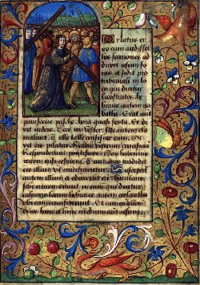
FIGURE II
(Passion selon saint Jean - Calvaire - The Della Porta Hours Tours & Bourges c.1478-80
Copenhagen - The Royal Library - Ms. GkS 1610 4°)
moine franciscain Roger Bacon. Il n'était pas allé en Espagne ou en Orient interroger et écouter les maîtres arabes, comme l'avaient fait le moine Gerbert (le pape Sylvestre II) à la fin du Xe siècle, et Pierre de Pisé, surnommé Fibonacci, au commencement du XIIIe ; mais il avait joint toutes les connaissances de ses contemporains de France et d'Angleterre, à toutes celles des Arabes ; et ensuite s'était appliqué de préférence à celles-ci, pour en tirer des conséquences et des applications qui causèrent autour de lai un vif étonnement, et qui aujourd'hui encore l'ont fait considérer comme devançant prodigieusement son époque. En lui, le philosophe et le théologien d'une immense érudition disparaissent : ce qui le classe parmi les plus illustres de son temps et peut-être tout de suite après saint Thomas, ce furent ses succès dans les sciences physiques et mathématiques. On peut dire qu'il traça, par ses inventions, ses idées neuves et ses ouvrages, une ligne de démarcation entre la première période du moyen âge et la seconde, qui a déjà un versant tourné vers l'âge moderne et en fait pressentir les principales découvertes. Il avait accumulé dans son esprit tout ce que les mathématiques, la géométrie, l'astronomie, la physique, l'alchimie, l'astrologie, etc., avaient produit d'oeuvres renommées. A cet égard, il était une de ces encyclopédies vivantes, comme saint Thomas fut une encyclopédie théologique. Il n'exposa pas au long, ni avec méthode, le résultat de ses recherches et de ses méditations; il en donna la quintessence, le résumé substantiel,dans son Opus Majus, qui est complété surtout par l'Opus Tertium, où se rencontrent des détails biographiques intéressants, et par son traité de la Perspective et son Specula Mathematica. On y entrevoit d'importantes inventions qui ne sont pas nées tout à fait, mais qui sont en train de naître et dont il est l'auteur, ou, si elles ne lui appartiennent pas exclusivement, il y apporta une idée lumineuse, qui en transforma les premiers germes ou les premières ébauches. Il les montre sortant logiquement de ses raisonnements mathématiques, et se prêtant à des applications diverses qu'il a combinées. On peut dire des unes qu'il les a conçues dans ce qu'elles ont de principal ; pour d'autres, il les a fait marcher d'un pas ; il a aidé à leur développement. Il était juste de réhabiliter un savant d'une aussi grande capacité; ce n'était pas trop de le saluer, en quelque sorte, comme une aurore qui se lève avant l'heure, pour annoncer le jour nouveau dont les sciences physiques et mathématiques seront éclairées dans les temps modernes ; et il méritait qu'on s'apitoyât sur le triste sort de ses dernières années. Toutefois ne l'a-t-on pas grandi outre mesure, en voulant le venger des soupçons odieux, des jalousies, des persécutions de ses contemporains, et même en essayant de l'absoudre de ses torts et d'atténuer ses erreurs, qui n'étaient que trop réelles ? Oui : on lui a donné trop de ce génie inventif, de cette heureuse puissance d'investigation, qui fait marcher un siècle en avant. Ses découvertes personnelles ont assurément une immense portée ; mais toutes ne sont pas faciles à préciser nettement, et il est dans la nuit pour tant de questions importantes que son rôle en est fort amoindri. Quoiqu'il ne se pare point des dépouilles d'autrui, et qu'il cite volontiers ses sources et ses autorités, il ne faudrait pas lui attribuer tout ce qu'il emprunte à divers auteurs sans les nommer. II y avait dans le milieu où il vivait, dans l'état scientifique de son époque, de ces inventions déjà commencées, de ces expériences, de ces essais mécaniques, renfermant des germes féconds de progrès, et dont il fut le propagateur, mais dont on ne saurait lui faire entièrement honneur On ne remarque pas toujours combien les inventeurs les plus heureux ont du aux tentatives, aux recherches inaperçues de leurs devanciers. Il combattit même en cosmographie des données positives des astronomes arabes, parfaitement établies sur les démonstrations géométriques et astronomiques, et si son opinion eût prévalu, elle eût enchaîné l'astronomie ou l'eût compliquée d'embarras inextricables. Pour bien connaître la portée de son œuvre scientifique et mécanique — et elle doit être étudiée à ce double point de vue, — il faudrait se rendre compte de l'état des sciences de son temps et des efforts tentés par l'industrie pour nous doter desinstruments, auxquels il consacra une longue et studieuse application. D'après les auteurs arabes qui lui servaient de guide, on n'avait que des ébauches très rudimentaires de ces instruments qui font sa gloire, et sur lesquels il s'appuya pour agrandir ses horizons ; mais enfin ces ébauches étaient connues, et destraités spéciaux en indiquaient l'usage et les résultats. On peut voir dans les ouvrages arabes et orientaux de cette époque et des siècles antérieurs, où l'on en était pour les mathématiques, l'astronomie, la physique, l'alchimie, etc., et ce qu'il ajouta de vraiment original aux théories reçues et aux connaissances du passé. Comme il en appelle souvent à l'opinion des astronomes, il favorisa la diffusion de leurs traités et contribua à attirer l'attention sur les problèmes astronomiques, dont la solution ne pouvait être imaginée que par les hommes les plus versés dans toutes les particularités des systèmes anciens. Ce qui le met au premier rang parmi les précurseurs éminents de la science moderne, c'est qu'il appliqua la géométrie à la physique avec plus d'habileté et de précision que les Arabes, et qu'il continua et dirigea fort heureusement la révolution qu'ils avaient commencé à faire dans l'optique; c'est qu'il démontra mieux, par des preuves géométriques, la marche des rayons lumineux à travers l'eau, le verre, les nuages, l'atmosphère, et en général, à travers les milieux plus ou moins denses. Surtout, c'est qu'il fut amené à composer et à perfectionner des instruments d'optique pour l'application de ses théories. Tandis que les Arabes n'avaient signalé le verre convexe que comme un auxiliaire pour faire apercevoir certains phénomènes étranges de la vision, lui confectionna des lunettes, qu'il répandit dans le public, et dont il prouva scientifiquement l'utilité. Il donna des espèces de microscopes aux chimistes et aux physiciens, en attendant qu'un perfectionnement dotât l'astronomie du télescope. S'il ne signala pas positivement les effets du prisme de cristal pour décomposer la lumière du soleil, il la montra produisant diverses couleurs, quand elle passe à travers un vase transparent et rempli d'eau ; et il expliqua la formation des nuances de l'arc-en-ciel. Quant à la poudre, qui était connue de son temps, il fit des expériences qui hâtèrent peut-être son emploi par le canon.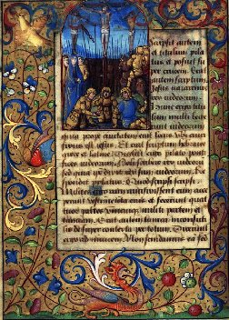
FIGURE III
(Passion selon saint Jean - Crucifixion - - The Della Porta Hours Tours & Bourges c.1478-80
Copenhagen - The Royal Library - Ms. GkS 1610 4°)
II
Le célèbre moine était né en 1214, à Ilchester, en Angleterre, d'une famille qui tenait un rang par la noblesse et la fortune, et qui joua un rôle dans les luttes d'Henri III contre ses barons, car lui-même nous apprend [Opus tertium, cap. III] que son frère, qui était riche, avait pris parti pour le roi et avait été forcé de fuir avec sa mère, ses frères et tous les siens. Après avoir étudié à Oxford sous Edmond Rieh, depuis archevêque de Cantorbéry, il était venu à Paris suivre les cours de l'Université et avait obtenu le bonnet de docteur en théologie. Son ardeur à s'instruire l'avait porté vers toutes les branches de connaissances, comme l'atteste la liste de ses ouvrages, dressée peut-être imparfaitement, mais basée en général sur des données positives [Voir celle qui est dans Pitseus, De Illustribus Angliae scriptoribus.]. Plus tard il se rappelait comment la passion de l'étude l'avait saisi dès son enfance, et il écrivait au pape Clément IV, dans l'Opus Tertium, vers 1266 :
« J'ai beaucoup travaillé les sciences et les langues ; je m'y suis appliqué pendant quarante ans depuis que j'ai eu appris l'alphabet ; pendant ce temps-là je n'ai jamais été sans étudier, excepté pendant deux ans [« Multum laboravi in scientiis et linguis et posui jam quadraginta annos
postquum didici prinium alphabetum et fui semper studiosus et praeter duos annos de istis quadraginta fui semper in studiis... » Opus Tertium, cap. xx.]. »II avait appris le latin, le grec, l'hébreu et probablement l'arabe, afin de comprendre et d'approfondir les auteurs anciens dans l'original. Il avait médité les Écritures, qu'il savait par cœur. Aristote et les Pères de l'Église lui étaient familiers. On a prétendu qu'il faisait bon marché d'Aristote et de tous ses raisonnements philosophiques : c'est aller bien au delà de sa pensée. Il l'estimait, au contraire, comme un très grand esprit et jugeait nécessaire de l'étudier beaucoup pour bien comprendre la philosophie et l'enseignement de l'Église catholique. Il disait que la philosophie ne peut atteindre jusqu'à l'interprétation des dogmes chrétiens, qu'après avoir traversé les exercices de la logique péripatéticienne, et être parvenue en pleine métaphysique, et qu'elle n'y arrive qu'à l'aide des grands ouvrages retrouvés d'Aristote, à l'aide des commentateurs grecs et arabes de ces ouvrages, et à l'aide enfin d'écoles fortement organisées sous l'autorité des papes et des rois, c'est-à-dire comme celles du XIIIe siècle. Il a de longues dissertations là-dessus dans l'Opus Tertium. Ainsi, loin de rompre avec ses contemporains dans leur admiration pour Aristote, il le plaçait en tête des études philosophiques et religieuses ; et il fallait bien qu'il fût à la hauteur des savants de son temps, presque tous versés dans les doctrines du célèbre philosophe. Mais, on doit le reconnaître, lorsque ses préférences se furent portées vers les sciences physiques et mathématiques, il en fit la passion de sa vie et relégua au second plan les théories métaphysiques. Tout entier à la méthode d'observation et aux lois de la géométrie et du calcul, d se détourna d'Aristote et le traita sans façon. Il trouvait ses livres mal traduits, remplis d'erreurs et de gloses qui les défiguraient ; il allait jusqu'à dire a qu'il aurait voulu
« faire brûler tous les livres d'Aristote, que c'était perdre son temps que de les étudier, qu'ils étaient une source d'erreur et servaient à propager l'ignorance au delà de toute expression, et que la foule des écohers ne pouvait que perdre la tête sur les passages mal traduits [« Si haberem potestatern super libros Aristotelis, ego facerem omnes cremarii, quia non est nisi temporis amissio studere in illis et causa erroris et rnultiplicatio ignorantiae ultra id quod valeat explicari...Vulgus stutentum...languet et asininat circa male translata...» Opus Majus]...»
Ce n'est pas seulement une sortie contre les mauvaises traductions, mais contre le fond des choses, car il pouvait lire l'auteur dans l'original, et recommander de le mieux traduire. C'est une déclaration qui indique quelle direction prirent ses études, comment il rompit en visière avec l'enseignement des universités, et avec quelle énergique résolution il entra dans la voie opposée à celle des métaphysiciens. Sans doute, sa résolution ne fut pas décisive tout d'abord, mais on peut dire qu'elle s'accentua constamment avec l'âge. Il était déjà un homme marquant lorsqu'il entra dans l'ordre de Saint-François, car on supposait qu'il avait composé alors des ouvrages de philosophie, et il s'en défend dans l'Opus Tertium, auprès de pape Clément IV [In alio statu non feci scriptum aliquod philosophiae.» Opus Tertium, Manusc. Tib., fol. 3]. Ce fut sur les conseils de son ami, Robert Grosse Tête, évêque de Lincoln, qu'il entra dans la communauté des religieux de Saint-François, à Oxford. Il séjourna longtemps à Paris, où les Franciscains, dits Cordeliers, avaient une maison fondée par saint Louis, près de l'endroit où se trouve l'école actuelle de médecine. C'est là qu'il se livra à toute son ardeur pour les sciences, recherchant la société des hommes de savoir, faisant venir de toutes parts des livres rares, des instruments, des tables astronomiques, étudiant les langues, multipliant les expériences physiques et confectionnant des instruments, dont il vendait une partie aux Parisiens, émerveillés de tout ce qu'il leur faisait voir. Il nous apprend qu'il passa ainsi vingt années, pendant lesquelles il avait rompu avec les théories des savants et avec les opinions du vulgaire [« Per viginti annos quibus specialiter laboravi in studio sapientiae, neglecto sensu vulgi, plus quam duo millia librarum ego posui in his, propter libres secretos et experientias varias et linguas et instrumenta et tabulas et alia, tum ad inquirendum amicitias sapientum, tum propter instrendos adjutores...» Opus Tertium, cap. XVII. Manuscrit de Douai. ]. Exalté par les résultats étonnants qu'il obtenait et par les vérités qu'il découvrait dans, ses infatigables recherches, il ne visait à rien moins qu'à donner une direction nouvelle à la science, à la philosophie tout entière, et à la faire reposer principalement sur les mathématiques. Il ne s'en cachait pas, et il vantait en toute circonstance la supériorité des principes mathématiques sur les raisonnements métaphysiques, et renouvelait ses violentes sorties contre Aristote et ses partisans. Mais il avait devant lui des hommes avec lesquels il ne comptait pas assez. Il heurtait de front Albert le Grand, qui professait la philosophie à Paris avec une réputation capable d'effacer celle d'Aristote lui-même. Il avait contre lui saint Thomas, qui élait déjà l'ange de l'école, et saint Bonaventure, un franciscain, regardé aussi comme un oracle par les plus habiles métaphysiciens. Sentant que la partie n'était pas égale et qu'il avait à lutter contre tout le courant des idées d'alors, il perdait dans ses controverses et dans ses luttes scientifiques la mesure et la modération nécessaire. Prenant à partie Albert le Grand, il ne s'attachait pas à renverser les opinions fausses ou aventureuses qu'il avait rencontrées dans ses volumineux traités de physique, il allait jusqu'à lui refuser toute science, à ne plus tenir compte de cette profondeur de vue, de cette immense érudition, de cette vertu éminente auxquelles s'attachait déjà de son temps le surnom de Grand, ratifié par la postérité. La principale cause du mépris qu'il déversait sur lui, c'est que cet oracle prétendu de la philosophie ne savait rien de la Perspective, et que par conséquent il ne pouvait rien saisir des sciences naturelles, ni de toute la philosophie [« Ideo certum est ipsum ignorare res naturales et omnia quae de philosophia sunt. » Opus Tertium, cap. XI de l'Introduction. Manuscrit de Douai.]. Il prétendait qu'avec la Perspective la science d'un homme est centuplée. Plus tard, il ne craignait pas d'exprimer ces sentiments d'animosité dans son Opus Tertium, adressé au pape Clément IV, et quoiqu'il ne désigne pas Albert le Grand par son nom, on reconnaît évidemment son portrait,
« On me reproche, dit-il, d'attaquer certaines sciences et certaines personnes. A cela je réponds que je ne puis servir autrement la vérité, et j'affirme que je n'agis de la sorte que par nécessité... — Beaucoup d'hommes honnêtes et qui passent pour instruits, me disent que la philosophie est achevée et qu'on ne peut rien ajouter à celle qu'on enseigne de notre temps à Paris ; el on me cite un auteur qui vit encore, et qui, de son vivant, a autant d'autorité qu'Aristote, Avicenne et Averroès... Je parle, il est vrai, avec une grande pitié de cet auteur et de l'erreur du vulgaire trompé par lui. Je dirai donc toute la vérité et sur sa personne et sur ses écrits... Ceux-ci ont quatre défauts : le premier est une vanité puérile, infinie ; le second, une fausseté inexprimable ; le troisième, une extrême diffusion, la science entière pouvant être renfermée en un traité utile, vrai, clair et parfait, qui serait, tout au plus, la vingtième partie de ses volumes ; son quatrième défaut est d'avoir négligé les parties de la philosophie les plus utiles et les plus belles. C'est pourquoi tous ses ouvrages ne sont d'aucune utilité et nuisent au contraire à la vraie philosophie. Et cela n'est pas étonnant puisqu'il n'a pas été élevé dans l'Université de Paris, ni dans aucune autre où fleurit la philosophie, qu'il n'a pas enseigné, pas disputé, qu'il n'a pas conféré avec d'autres savants ... accumulant les mensonges, les vanités et les superfluités [Voir l'Opus Tertium, 2e chapitre de l'Introduction; traduction de M. Cousin, dans le Journal des Savants, année 1848.]...»
Albert le Grand était l'homme le plus en vue des écoles de Paris, celui qui offusquait le plus Roger Bacon, en prenant la logique, le syllogisme, pour point de départ de toute science, et en ne s'occupant guère de la perspective, ni de la géométrie, ni des mathématiques, auxquelles il n'était cependant pas étranger. Il n'avait pas étudié à Paris; il était appelé Albert le Teutonique ; il était d'une prolixité facile encore à constater dans les vingt et un volumes in-folio de huit à neuf cents pages, publiés à Lyon parJammy, et qui ne contiennent pas entièrement ses œuvres complètes. C'était de mauvaise grâce que Bacon parlait de sa célébrité et l'on voit ailleurs qu'il s'efforçait de rabaisser le mérite d'Albert le Grand ; il plaçait bien au-dessus de lui comme savant Gilbert de Shirewood, trésorier de l'église de Lincoln (longe sapientior Alberto). En outre, selon la remarque de.M. Cousin, ces invectives ne pouvaient tomber sur d'autres personnages éminents de cette époque (1266). Alexandre de Halesétait mort; saint Bonaventure était de l'ordre de Saint-François et n'eût pas été l'objet d'une telle malveillance ; saint Thomas ne pouvait être taxé de prolixité, lui, d'une précision, d'une sobriété extrême. Sans se l'avouer. Bacon reconnaissait dans Albert le Grand un rival d'une incontestable valeur, retranché dans un camp scientifique diamétralement opposé, et jouissant d'une autorité [« Totum vulgus insanum allegat cum Parisius sicut Aristotelem, Avicennam et Averroern. » Opus Tertium, Cap. II Introd] que toutes les démonstrations mathématiques et géométriques ne pouvaient entamer, car le syllogisme était roi et la métaphysique était de rigueur pour compter parmi les savants. C'est pourquoi il frappait fort. On comprend quelle note aiguë ces déclarations jetaient dans
les écoles de Paris, et quelles controverses ardentes s'engagaient entre ces maîtres et ces étudiants avides d'entrer dans la lice des discussions brûlantes. On était de part et d'autre aux antipodes, puisque les uns, c'est-à-dire presque tous, prétendaient que toute science était connue au XIIIe siècle, qu'il n'y avait plus rien à trouver, et que Bacon voulait pour ainsi dire tout refaire et asseoir la science sur des bases nouvelles, lui imprimer une direction plus conforme à la vérité. A ceux qui lui disaient qu'il n'y avait plus rien à découvrir, il montrait ses découvertes, ses instruments d'optique, les conséquences qui en découlaient plus clair que le jour d'après les lois mathématiques. A ceux qui vantaient la toute puissance du syllogisme et les admirables déductions de la métaphysique, il montrait les théories absurdes qu'avait émises Albert le Grand sur diverses questions de physique, notamment sur l'optique, sur la formation des couleurs de l'arc-en-ciel, lui qui n'en reconnaissait que trois, rarement quatre, dans certaines conditions, et qui prétendait que la bande supérieure était couleur de vin parce que les nuages chargés de pluie sont plus légers à leur partie supérieure et sont mêlés d'un peu de vapeur pareille à la fumée ; qu'alors il en est comme, dans le tison de bois vert, d'où il se dégage de la fumée et où la couleur rouge monte au-dessus de la couleur d'azur [« Causa ordinis colorum est ; quia roratio parva habens fumosum admixtum propter naturam lavis tenet se saepius in globo; et ideo superior color qui exterior est in iride est vinosus; et quia grossum aqueum resolutum descendit ex natura gravis, ideo inferior et exterior color in arcu est viridis; aer autem humefactus spissus medius est, et ideo cœruleus color est medius » Alberti Magni Liber Meteororum. De Causa Iridis. Tract. IV, cap.13.]. Pour la manière dont Albert le Grand exposait les phénomènes de la vision, il était facile à Bacon de faire ressortir son infériorité auprès des arabes Alhazen, Constantin, qui avaient décrit la conformation de l'œil, le double nerf optique et la marche des rayons lumineux apportant la sensation des images à l'être pensant. Les mathématiciens habiles étaient convaincus qu'il avait raison sur beaucoup de points. Ils n'étaient pas nombreux alors; cependant il en cite quelques-uns, dont deux, à son point de vue, étaient hors ligne : c'était maître Jean de Londres, sans doute celui qui fut archevêque de Gantorbéry, et laissa une réputation brillante, et maître Pierre de Maharncourt (en Picardie) [c'est-à-dire Pierre de Maricourt, qui semble être l'inventeur d'un moteur à impulsion magnétique, cf. Miroir d'Alchimie], très habile à confectionner les miroirs concaves. Il y avait encore Gilbert de Shirwood, trésorier de l'église de Lincoln ; maître Nicolas, qui eut pour élève Amaury de Montfort ; maître Campan de Novarre, qui fut commentateur d'Euclide, auteur d'un traité sur la sphère, dédié à Urbain IV, dont il devint le chapelain après avoir été chanoine de l'église de Paris [« Non sunt nisi duo perfecti mathematici, scilicet magister Johannes Londinensis et magister Petrus de Maharacuria Picardus.. .. » Opus Tertium]. Il forma quelques élèves, dont l'un d'eux, Jean de Paris, avait toute son estime, mais n'était pas encore versé dans les sciences au moment où les vives discussions commencèrent. Il restait bien alors quelques-uns des anciens docteurs et des bacheliers qui, en 1215, avaient vu les livres de sciences naturelles et de métaphysique d'Aristote condamnés par les théologiens de Paris et proscrits de l'enseignement ; et ceux qui n'avaient pas déposé toutes les préventions contre Aristote et sa métaphysique prêtaient volontiers l'oreille aux attaques du hardi franciscain. Puis les esprits impartiaux et qui se rendaient compte des phases par lesquelles passait la science, ne pouvaient s'empêcher de rendre justice à la sagacité et aux merveilleux résultats d'un tel observateur de la nature. Parmi eux se trouvait un prêtre éminent, chapelain de saint Louis et destiné à monter sur le trône pontifical sous le nom de Clément IV. Il put voir Bacon et l'entendre à Paris, et l'eut toujours en très haute estime. Devenu évêque du Puy, archevêque de Narbonne, puis cardinal, il avait voulu avoir par écrit l'exposé de ses théories et de ses découvertes ; et, quoiqu'il ne l'ait pas reçu, il n'avait point perdu de vue ce savant original, et il attendait l'heure de lui témoigner sa vive sympathie. L'étonnement et la curiosité du peuple n'étaient pas de nature à faire tomber les discussions. On lui achetait ses instruments ; ses petits miroirs d'acier coûtaient quatorze sous parisis. On assistait à ses expériences avec une telle admiration, une telle stupeur, qu'on le disait assisté du démon. Si tout en fût resté là, ses supérieurs n'eussent été que médiocrement inquiets. Il y avait, il est vrai, une nature ardente qu'il fallait contenir, et, en outre, les témérités de langage de l'inventeur, qui ne voit rien en dehors de ses inventions et de ses systèmes, devaient être soigneusement réprimées dans un religieux,qui s'attaquait aux noms les plus estimés. Mais ses travaux et sa haute capacité, à laquelle ses adversaires rendaient hommage, attiraient bien quelque gloire sur son ordre ; et on le produisait dans les chaires de Paris devant les auditoires les plus distingués. Ses sermons figurent dans les manuscrits du temps parmi, ceux de saint Thomas d'Aquin, de Pierre de Tarentaise (Innocent V) et des plus illustres prédicateurs [Voir en particulier le manuscrit de la Bibliothèque Nationale, n° 15956, f. 226 v° : « In Sabbato Pasche. Frater Rogerius de Ordine Minorum, » e fol. 99 v°]. Saint Bonaventure, dont les conseils faisaient autorité, n'eût pas souffert qu'une brillante intelligence fût victime de quelques intempérances de la langue et de son propre enthousiasme pour les sciences physiques et mathématiques. Malheureusement il avait des torts bien autrement graves et sur lesquels aucune indulgence ne pouvait passer. Son engouement pour les Arabes lui
avait fait adopter certaines de leurs idées sur l'alchimie et l'astrologie : leurs théories sur ce point lui étaient familières, comme les écrits de saint Augustin étaient familiers à saint Thomas. Il prétendait qu'à l'inspection des constellations et des planètes, on pouvait prédire longtemps à l'avance les événements heureux ou malheureux [des chercheurs contemporains poursuivent de semblables études. Cf. nos travaux dans ce domaine : directions primaires]. Ses convictions étaient si arrêtées qu'il s'efforça de les étayer sur les saintes Écritures et de les laire accepter au pape Clément IV dans son Opus Majus. Il avait essayé de construire des tables astronomiques de l'état des planètes, et à l'aide desquelles il annoncerait ce qui devait arriver. Ce n'est que vaincu par les instances de ses frères et de ses amis qu'il suspendit ce travail et bien à regret, car il disait au pape Clément IV qu'il n'avait pu l'achever« à cause de la folie de ceux qui l'entouraient. » (Non potui consummare propter stultitiam eorum cum quibus habui facere.)
C'était un scandale qu'il fallait arrêter. L'ordre des Franciscains tenait à se laver de tout soupçon d'erreur théologique et de nouveauté dangereuse. Déjà, en 1243, le chapitre général des Frères Prêcheurs, tenu à Paris, avait défendu
« à tous les religieux d'étudier d'autres ouvrages de physique que ceux dont il était parlé dans les Constitutions, et en outre de composer des ouvrages curieux [Fratres non studeant in libris physicis nisi secundum quod scriptum est in Constitutionibus, nec etiam scripta curiosa faciant. » — Acta capit. gener. Parisius, celebrati anno 1243. Martène, Thésaurus, t. IV, col. 1685.]. »
L'on craignait que les doctrines de magie, d'alchimie, ne se répandissent en secret, et l'on avait raison, car elles trouvaient un accueil facile et déplorable parmi les Albigeois et les Templiers, non seulement dans le midi de la France, mais encore dans le centre, et se propageaient au nord. Les Dominicains réitérèrent encore la défense d'étudier les écrits des païens au chapitre général de Paris en 1246 ; et s'il était permis d'accorder quelquefois des dispenses, ce ne devait être qu'avec une extrême réserve [« Constitutionem de modo studendi in libris gentilium priores faciant diligenter observari. » N° 23 de Constit. Acta capit. gener. Parisius celebrati anno 1246. Martène, Thésaurus, t. IV, col. 1691.]. Il fut donc décidé au chapitre général des Franciscains qu'on fermerait la bouche à Roger Bacon, et qu'on l'éloignerait du théâtre où il causait tant d'émoi et de si légitimes inquiétudes. C'était en 1255 ou 1256. Ordre lui fut donné
« de ne communiquer à personne des ouvrages sortis de sa plume sous peine de la confiscation du livre et d'un jeûne au pain et à l'eau pendant plusieurs jours [« Constitutionem fecerant praelati sui ordinis et sub praecepto et pœna amissionis libri et jejunii in pane et aqua pluribus diebus prohibuerant eum a commuuicando scriptum aliquod a se factum cum aliis quibuscumque...»
Pitseus, De lllustribus Angliae scriptoribus, p. 307.]. »Bacon obéit, et se retira dans le monastère qui lui était assigné.
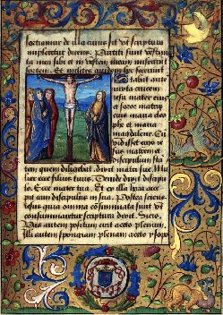
FIGURE IV
(Passion selon saint Jean - Jean et les trois Marie sous la croix - - The Della Porta Hours Tours & Bourges c.1478-80
Copenhagen - The Royal Library - Ms. GkS 1610 4°)
III
II s'était soumis en véritable fils de Saint-François ; mais on sent à quelques passages de l'Opus Tertium, adressé au pape Clément IV dix ans plus tard, combien la nature avait frémi à cette dure obligation de se taire et de ne rien faire connaître de ses écrits. Il s'épancha auprès du pontife dont la bienveillance ne se démentit pas ; mais il fallait qu'il en eût bien gros sur le cœur pour entrer dans tout le détail de ses anciennes blessures, et pour prendre à partie les hommes les plus considérés de son siècle. La tentation d'éluder l'interdiction du chapitre des Franciscains lui était venue lorsque le futur pape Clément IV, encore archevêque de Narbonne ou cardinal, lui avait demandé communication de ses ouvrages. Mais il aurait fallu recourir à la ruse, probablement pour avoir l'autorisation du pape ou du général de l'ordre, et il avoue qu'il n'a pas osé, car il aurait eu besoin d'un copiste fidèle, et
« l'indiscrétion ordinaire des copistes de Paris lui faisait peur [Opus Tertium, cap. II Introd]. »
La secousse qu'il avait éprouvée ne l'avait pas détourné de sa voie. Il ne paraît pas qu'il ait suspendu longtemps ses travaux. Si, pendant toute sa vie, il fut deux ans sans travailler, ce fut apparemment à l'époque de son noviciat. Dans la retraite il se fit un centre d'étude, où les recherches, les expériences et les méditations scientifiques, relevèrent promptement l'énergie de son âme. Dans son ordre, on n'avait pas eu l'intention de comprimer l'essor de cette vive intelligence dont on comprenait les côtés admirables ; on lui donna une compensation à des rigueurs nécessaires, en lui laissant un champ libre dans les sciences d'observation et dans les travaux; mécaniques. On l'aida même à y réussir. C'était là son meilleur terrain : c'était là qu'il avait eu ses succès ; on voulait bien seconder son esprit créateur, mais non exaller le novateur ni applaudir au philosophe téméraire qui, dans ses déclamations fougueuses contre Aristote et Albert le Grand, visait à bouleverser toute une partie de l'enseignement de l'Université. Il eut alors des disciples, qu'il instruisait avec zèle dans les mathémathiques et dans l'astronomie, et qu'il employait à ses expériences et à la confection de ses instruments. L'un des plus jeunes, Jean de Paris, fit sa consolation. C'est sur lui qu'il compta dans la suite pour expliquer ses intentions et la portée de ses découvertes au pape Clément IV. Les relations avec les savants ne lui étaient pas interdites ; il s'enthousiasmait avec eux des révélations nouvelles apportées dans l'optique, dans les lois de la marche de la lumière. Il avait en particulière admiration Pierre de Maharncourt (en Picardie) [cf. note 34 des Etudes Baconiennes], qui savait confectionner de puissants miroirs concaves pour brûler à distance; et il trouvait que deux ou trois savants comme lui seraient plus utiles à saint Louis
« pour combattre les Infidèles que la moitié ou même la totalité de son armée, car,avec des miroirs concaves d'un large rayon, un habile expérimentateur serait capable de détruire toute une armée et un camp ennemi [Opus Tertium, cap. XXXIV Introd.]. »
II se reportait au souvenir d'Archimède brûlant des vaisseaux ennemis dans le port de Syracuse. Quoique l'on fût pauvre dans les couvents de Saint-François, où l'on vivait d'aumônes, on ne lui marchanda point la libre disposition des sommes qu'il pouvait recueillir pour l'achat des livres rares, des instruments d'un grand prix et pour la réussite de ses expériences. On ne l'empêchait pas de frapper à la porte de ses parents, de ses amis, des prélats et des grands pour avoir les sommes nécessaires. Il était souvent aux prises avec des difficultés pécuniaires dont il était d'autant plus affecté qu'elles le retardaient dans la réalisation de ses espérances. Il traça plus tard au pape Clément IV un tableau douloureux de sa détresse et de ses efforts pour recueillir de l'argent,
« II s'était adressé à son frère, qu'il avait quitté riche, mais que les guerres d'Henri III avaient ruiné avec toute sa famille et obligé plusieurs fois de payer une rançon ; il n'avait pu même en recevoir de
nouvelles. Les prélats et les grands, il ne fallait pas y penser : vous connaissez leurs visages, mais vous ne connaissez pas leurs cœurs, écrivait-il au pontife. Ses amis n'avaient pu accéder à ses demandes ; plusieurs étaient pauvres ou hors d'état de lui venir en aide. Il yen eut cependant qui empruntèrent de l'argent pour lui, en grevant de dettes leur patrimoine, et en s'exposant à la misère [Opus Tertium, cap. III Introd.].»Il avait pu,à force de persévérance,réaliser en vingt ans, deux mille livres, somme considérable pour un religieux mendiant de cette époque ; mais on comprendra combien il avait à faire, si l'on songe que certains instruments de mathématique, dont il avait besoin, coûtaient jusqu'à deux et trois cents livres. Cette retraite dura dix ans, toute consacrée à la poursuite des vérités qu'il avait entrevues, à l'examen plus attentif [« Sed laboravi per annos deceni,quantumcumque potui vacare, et discussi omnia ut potui, redigens in scriptum a tempore mandati vestri...» Opus Tertium, cap. XI Introd.] de ses découvertes et des phénomènes qui agrandissaient ses horizons, confirmaient ses résultats ; il s'y appliqua à la confection plus finie et plus variée de ses instruments : précieux héritage qu'il laissa à la postérité. Apres les préparations et les études précédentes, ce fut un temps de moisson pour la science, son intelligence, comprimée d'un côté, au moment où elle avait acquis tout ce qu'elle pouvait acquérir, gagna en justesse et en précision dans le calme des méditations scientifiques.
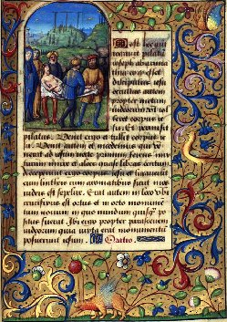
FIGURE V
(Passion selon saint Jean - Déposition -- The Della Porta Hours Tours & Bourges c.1478-80
Copenhagen - The Royal Library - Ms. GkS 1610 4°)
IV
Dix ans s'étaient passés lorsqu'on apprit que Clément IV, ancien archevêque de Narbonne, était monté sur le trône pontifical. Roger Bacon, plein de joie et d'espérance à cette nouvelle, se rappela au souvenir du nouveau pape en lui envoyant le chevalier Bonecor, chargé de l'informer par lettre et de vive voix de sa situation et de ses travaux. Clément IV fit l'accueil le plus paternel à cet envoyé du savant. Dans si réponse, toute affectueuse, il le pressa de lui transmettre au plus tôt son ouvrage; il lui confia, sans doute par l'entremise du chevalier Bonecor, une mission importante à remplir en France [Il disait au pape dans l'Opus Tertium : « Dixi quod negotium quoddam vestrum debuit tractari in Francia per me. » Cap. XVII.— Il lui disait encore qu'il avait dépensé pour cela plus de soixante livres parisis], et il le tira de la solitude profonde où il le savait relégué. Mais on sent qu'il y avait là bien des questions délicates, et que le pontife lui-même évitait de blesser les susceptibilités des supérieurs ordinaires du moine franciscain. Voici comment il s'exprimait :
« Nous avons reçu avec plaisir la lettre de Votre Piété, et nous avons noté soigneusement les explications que nous a données de vive voix et avec autant Je fidélité que de prudence, notre cher fils, le chevalier Bonecor. Afin de mieux voir quelle est votre pensée, nous vous ordonnons et enjoignons par rescrit apostolique de nous adresser au plus tôt votre ouvrage, malgré les ordres contraires de n'importe quel prélat, et malgré toutes les constitutions de votre ordre, qui pourraient s'y opposer. Nous vous avions autrefois prié de le communiquer à notre cher fils Raymond de Laon, lorsque nous étions moins élevé en dignité. Nous voulons l'avoir bien écrit et vous nous aurez connaître par une lettre les moyens qu'il vous semble à propos d'employer pour conjurer les périls que vous signalez comme si menaçants. Hâtez-vous le plus possible, mais en gardant un profond secret, » — Donné à Viterbe le X des calendes... la IV année de notre pontificat.
C'était en 1266 [Wadding. Annales Minorum, t. IV, anno 1266, p. 265.]. On voit que Clément IV ne l'avait jamais perdu de vue, qu'il avait deviné l'importance des procédés du savant et du ses inventions, et qu'il était prêt à les favoriser, sous toute réserve de l'intégrité des doctrines religieuses. Bacon se mit à l'oeuvre ; il était comme rendu à la vie. On a l'expression de ses sentiments et de ses espérances au commencement de l'Opus Tertium, qu'il adressa au pape en même temps que son Grand Ouvrage (Opus Majus). Il dit, après l'exorde :
« Comme Cicéron, à son retour de l'exil, remerciait humblement le sénat romain, ainsi en me rappelant l'exil de dix années que j'ai subi, le silence qui a été imposé à ma bouche et à ma plume, en voyant un grand pontife me tirer de l'oubli et, en quelque sorte, du tombeau, et me demander mes pensées et mes ouvrages, transporté de reconnaissance, après avoir baisé les pieds de Votre Sainteté; j'élevais mon style dans mon second écrit jusqu'à Votre Grandeur et je m'écriais.... »
II songeait
« que les théologiens de Paris, l'évêque et tous les docteurs avaient condamné et proscrit, quarante ans auparavant les livres de sciences naturelles et la métaphysique d'Aristote, et que cependant chacun les considérait de son temps comme très orthodoxes [Opus Tertium, cap. IX Introd]...»
C'était dire qu'il attendait un retour aussi favorable à ses idées. C'était dans l'Opus Tertium qu'il entrait dans les confidences intimes, qu'il retraçait les phases saillantes de sa vie, les luttes qu'il avait eu à soutenir, et qu'il parlait le pins en détail de ses instruments, de ses expériences et de son invariable attachement à tous les enseignements de l'Église. C'était un complément plein d'abandon de son Grand Ouvrage (Opus Majus), où il expose, on abrégé, ses vues sur les diverses branches des sciences, ses découvertes physiques et mécaniques, et aussi ses erreurs d'astrologie. Tout ce qu'il a conçu de plus remarquable, de plus vraiment scientifique, et tout ce qu'il a soutenu de plus insensé, se retrouve au moins indiqué dans l'Opus Majus. Il avait partagé ses matières en huit catégories, qu'il rappelle dans l'Opus Tertium
[Voici les parties principales de l'Opus Majus, telles qu'il les a marquées dans l'Opus Tertium : I. De quatuor universalibus causis totius ignorantiae humanae. — II. De sapientia perfecta. — III. De utilitate Grammatice. — IV. De potestate mathematice et mundo. — V. De stellis et pronosticis. — VI. De modis particularibus et causis videndi. — VII. De multiplicatione specierum. — VIII. De scientia experimentali... Il y avait encore une IX° partie (De philosophia morali) qui est restée en manuscrit.];
mais il n'avait pas suivi son plan avec beaucoup d'ordre, écrivant les choses principales à mesure qu'elles se présentaient sous sa plume, comme un homme qui ne se soucie ni des classifications d'Aristote, ni des divisions et des subdivisions de saint Thomas. Quoique ses supérieurs ne l'eussent pas empêché de faire pour lui-même des livres, dont ils auraient pu apprécier un jour l'importance, il n'avait pas même pris de notes sur ses principales découvn'tes ; c'est grâce au pape que la postérité les a connues,
« Étant encore dans le siècle, lui disait-il, je n'ai rien écrit sur la philosophie... Assurément si j'avais été libre de communiquer quelque ouvrage, j'en aurais composé beaucoup pour mon frère scolastique et pour mes autres amis intimes. Mais quand j'ai eu perdu tout espoir d'en faire lire aux autres, je ne me suis pas soucié d'en composer. Lorsque je me suis mis à la disposition de Votre Grandeur (Gloriae), c'était donc, soyez-en persuadé, pour des ouvrages à faire et non pour (lui transmettre) des travaux déjà faits. Car si j'ai déjà, comme en passant, et sur les instances de mes amis, recueilli quelques chapitres sur différents sujets, ils ne valent pas la peine d'être remarqués ni d'être offerts à Votre Sagesse [« Et certe si potuissem libere communicasse, ego pro fratro meo scolari et aliis amicis meis carissimis multa composuissem. Sed quando desperavi de communicatione, neglexi componere. Unde quando Vestrae Gloriae obtuli me paratum, certissime sciatis quod hoc fuit pro scnptis faciendis, nondum factis...» Opus Tertium, Manus. Tib., fol. 3.]....
Comme l'Opus Majus avait une certaine étendue, il en avait fait une sorte de résumé dans l'Opus Minus, afin que le pape cédât plus volontiers au désir d'en prendre lui-même connaissance. Il y entrait, au commencement, dans des confidences du même genre que celles de l'Opus Tertium. Il joignit à son envoi quelques-uns de ses instruments. Ce fut son disciple Jean de Paris qui fut chargé de tout expliquer au pontife, de l'aire ressortir la justesse de ses conclusions mathématiques et l'admirable fonctionnement de ses lunettes, de ses miroirs concaves, de ses vases transparents pour décomposer la lumière du soleil, etc. Ce jeune savant était lui-même l'orgueil de Bacon. Il s'applaudissait de l'avoir, dans l'espace de cinq ou six ans, instruit dans les langues, dans les mathématiques et dans la perspective, les trois choses où ses écrits avaient le plus besoin d'explication. Il le préférait à tous les savants de Paris, et il avait voulu montrer au pape, en le lui envoyant, ce que peut le travail secondé par un bon enseignement. Après cet éloge de Jean de Paris, l'exaltation de l'inventeur ne trouvant plus d'obstacle, il se faisait fort d'enseigner en trois jours l'hébreu à un homme docile et attentif, qui suivrait sa méthode. Il avait ça et là dans l'Opus Tertium de ces rêves et de ces illusions gigantesques. Son orthodoxie de conscience ne pouvait être mise en doute. Il tenait à l'exprimer hautement : il entrait dans des considérations très-explicites sur la manière d'interpréter les dogmes chrétiens et sur la soumission due à l'Église. On dirait, en le lisant, un disciple de saint Bonaventure ou saint Bonaventure lui-même. Non seulement il fait asseoir la philosophie sur Aristote, expliqué par des commentateurs éclairés et dans des écoles fortement organisées sous l'autorité des papes et des rois ; mais il pense encore que la philosophie est nécessaire pour bien comprendre l'enseignement de l'Église. De la sorte, Aristote était comme un grand docteur catholique. Pour la place que la philosophie devait prendre, en face des vérités chrétiennes, il exigeait une soumission absolue. Il ne voulait pas que l'on posât d'abord les fondements philosophiques, et qu'ensuite on les appliquât à interpréter les dogmes chrétiens ; il voulait qus l'on commençât par exposer les vérités du christianisme, et qu'ensuite on recherchât les explications philosophiques que ces vérités pouvaient comporter [Opus Tertium, cap. XXIV]..., La philosophie devait toujours subordonner ses raisonnements au texte sacré. C'était, en un mot, la plus rigoureuse orthodoxie scolastique.— Mais plus loin, dans l'Opus Tertium, il revenait à ses prédilections pour les mathématiques (ch. 38 à 55), et il demandait qu'on les appliquât à toutes les sciences : astronomie, optique, géographie, musique, théologie. C'était bien contredire un peu ses déclarations précédentes. Le pape fut émerveillé des expériences,des instruments de Jean de Paris,et des conclusions scientifiques doni il montrait l'exactitude : on dit qu'il l'éleva aux honneurs, attestant ainsi son estime pour le disciple et pour le maître. Il était plus difficile de récompenser directement celui-ci; car on ne pouvait lui donner raison qu'en l'obligeant à se rétracter sur beaucoup de points qui tenaient à un système ; et cette nature ardente, exaltée par de merveilleux succès, n'était pas de celles qui plient sans dilliculté. On eut pour lui des ménagements ; on lui donna du temps pour s'expliquer Mais il fallut se rendre à Rome et se disculper sur ses théories d'astrologie, qu'il essayait d'étayer sur l'Écriture Sainte. Le pape Clément IV étant mort en 1268, les négociations prirent un caractère moins bienveillant, et les accusations retombèrent sur lui avec plus de force. Quelques années plus tard, le général des Franciscains, Jérôme d'Ascoly (Ausculanum), qui était un de ses censeurs les plus sévères, se rendit à Paris en qualité de légat du Saint-Siège, y réunit un chapitre nombreux, condamna sa doctrine, interdit à ses frères de la suivre, le fit jeter lui-même on prison, et écrivit au pape, qui était alors Nicolas III (1278), de ne pas permettre que la cause fût déférée à son tribunal et de confirmer la sentence prononcée [Wadding-, Annales Fratrum. Minorum. — Rogerii Baconi, anno 1278 et seq] Quoique Bacon eût écrit sur l'inanité de la magie (De nullitate Magiae), toutes ses affirmations précédentes subsistaient, et il donnait en plein dans l'astrologie, source de bien des extravagances. Dans la suite, il essaya encore une fois d'en appeler au souverain pontife, à ce même Jérôme d'Ascoly, son supérieur, qui avait pris le nom de Nicolas IV; mais il n'y gagna qu'une captivité plus étroite, et ce fut à la sollicitation de quelques hauts personnages qu'il put revenir en Angleterre, où il mourut l'année suivante (1294), à Oxford, âge d'environ 80 ans. D'autres pensent qu'il en avait 90. On rapporte qu'il disait à son lit de mort :
« Je me repens de m'être donné tant de peine dans l'intérêt de la science. »
On ne peut pas dire que ce cri de douleur doive peser sur son siècle comme un reproche, car il y eut dans sa vie tant d'alternatives de lumière et d'ombre, de vérité et d'erreur, de résignation et de tristesse fiévreuse, qu'il faut l'admirer et le plaindre tout à la fois. L'interdit jeté sur son livre l'empêcha de se répandre et d'exercer de l'influence. Il ne circula point sous main, ni dans les monastères ni dans les universités : on n'y bravait point les ordres du Saint-Siège. On ne le rencontre point sur les catalogues des bibliothèques dressés au XIIIe et au XIVe siècles,dans les célèbres abbayes [Voir plusieurs de ces catalogues dans le Cabinet des Manuscrits de la Bibliothèque nationale, par M. Léopold Delisle, t II. — Il y a bien dans l'ancienne bibliothèque de l'abbaye de Corbie un manuscrit du XIVe siècle intitulé De la philosophie de Bacon. Mais ce sont des notes sur les trois livres de la physique d'Aristote, rédigées probablement par un de ses élèves et sans marque de l'esprit original du maître.]. Il resta manuscrit dans celles de Rome, d'Oxford, de Cambridge, de Londres et dans quelques autres, où l'on vint le tirer de l'oubli, principalement au siècle dernier. La publication qui en fut faite à Londres, en 1733 (in-fol.), eut du retentissement en Europe, et servit de thème à de nouvelles déclamations contre Rome et le moyen âge. Le savant fut représenté comme une victime des persécutions de l'ignorance ; on ferma les yeux sur ses torts, et ils étaient graves; on lui attribua plus d'inventions qu'il n'en avait fait, et, au lieu de savoir gré à ses frères de l'avoir secondé dans les travaux et les recherches où il excellait, dans l'exploitation de sa veine de génie, on ne vit que de basses jalousies s'attachant à étoufier les créations de la science. On n'a pas même remarqué que c'est aux encouragements du pape Clément IV que l'on dut la composition de ce livre curieux. On ne perdit rien à l'oublier, même au XIIIe et au XIVe siècle. Les principes qu'il avait établis géométriquement sur la marche de la lumière, ses expériences, ses instruments et, en particulier, ses lunettes, étaient tombées dans le domaine public. Les esprits inventifs perfectionnaient les instruments, ajoutaient quelque chose aux expériences,et les mathématiciens trouvaient une conclusion nouvelle. On n'avait plus rien à emprunter au physicien de l'époque précédente. Tandis que Bacon disait que, de son temps, personne n'avait écrit sur la Perspective [« Nullus vero de authoribus nec de magistris antiquis aut modernis scripsit de his. » Opus Tertium, cap. XI], que l'on n'en avait donné des leçons que deux fois et dans la ville d'Oxford [Ibid], et qu'il n'y avait pas trois personnes qui en connussent la valeur, on ne tarda pas à l'enseigner après lui, à en rédiger des cours plus étendus que le sien. Alcyon en fit un au XIIIe ou au XIVe siècle ; on le publia à Bâle en 1572, à la suite du traité d'Optique d'Alhazen (Opticae Thesaurus). Les Dominicains, si peu empressés d'étudier les mathématiques, attribuaient un traité d'Optique à Albert le Grand ; ils le conservaient en manuscrit, mais probablement il est l'oeuvre d'un autre Frère-Prêcheur [En tête de la grande édition des livres d'Albert le Grand (Lyon, 1651) se trouve un catalogue supplémentaire de ses ouvrages manuscrits ou peu connus, et c'est là que figure un traité de la perspective. Mais Albert montre dans son cours des sciences naturelles, Paros Naturalia (De Sensu et Sensato), qu'il n'était guère au courant des progrès de l'optique.]
Essayons de reconnaître quelle part d'invention personnelle revient à Roger Bacon, quelles furent ses principales erreurs scientifiques et ses principales erreurs religieuses.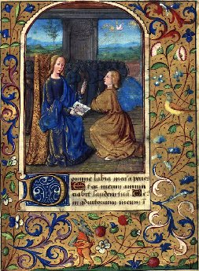
FIGURE VI
(OFFICIUM B.M.V. AD MATUTINUM - l'Annonciation - The Della Porta Hours Tours & Bourges c.1478-80
Copenhagen - The Royal Library - Ms. GkS 1610 4°)
V
Les mathématiques avaient été son guide et sa lumière pour découvrir les lois de la nature, et en particulier pour surprendre les secrets si variés de la marche des rayons lumineux à travers l'eau, l'air et les objets transparents. C'est en se basant sur elles qu'il était sorti de la routine en physique, élargissant ses horizons et confectionnant ses admirables instruments. Il les plaçait comme à la base de toutes les connaissances, et ce point de départ pour arriver à la certitude scientifique, contribuait singulièrement a l'éloigner d'Aristote, dont il semblait ne plus tenir compte en dehors du terrain religieux et philosophique. Il répétait, d'après Albumasar,
« que, dans les mathématiques, nous pouvons arriver à la vérité entière et sans mélange d'erreur,
parce qu'il faut y obtenir la démonstration par la cause propre et nécessaire [« In mathematica possumus devenire ad plenam veritatem sine errore, quoniam in ea convenit habere demonstrationem per causam propriam et necessariam ». Opus majus, p. 62. Londini, 1733, in-fol]. » —« Les mathématiques, disait-il ailleurs, précèdent naturellement les autres sciences [« Mathematica est prior aliis scicntiis et naturaliter eas praecedit. » (Dans son Specula Mathematica, imprimé à Francfort en 1614, presque au commencement.)]. »
Ce n'est pas qu'il fût entraîné à scruter les mathématiques pour elles-mêmes, à les éclairer de nouveaux aperçus. On ne remarque pas qu'il ait découvert quelques-uns de ces théorèmes féconds qui élargissent les points de vue ou signalent des mines inconnues à exploiter, quoiqu'il ait composé un livre de Géométrie. Mais dans son Specula Mathematica, dans son traité de la Perspective et dans celui des Miroirs, imprimés ensemble à Francfort en 1614, et plus ou moins résumés dans l'Opus Majus, il révéla ce qu'on pouvait attendre de la géométrie appliquée à la physique et à l'astronomie, surtout à l'optique. Ce fut là qu'il creusa une mine prodigieusement féconde pour l'avenir ; mais on l'avait ouverte avant lui, et il ne fit que l'agrandir. La conviction de Bacon sur l'importance et le rôle des mathémathiques allait si loin, qu'il pensait que Dieu avait appliqué les lois mathématiques partout dans l'organisation du monde et dans les mouvements des cieux, et que, pour bien connaître les choses d'ici-bas et les choses célestes, il fallait connaître les mathématiques [« Impossibile est res hujus mundi sciri nisi sciatur mathematica. » Opus Majus, p. 65. Edit. Londini. — « Cœlestia sciuntur per mathematicam. » Ibid., p. 66)]. C'était, en d'autres termes, ce qu'avait dit Platon, « que Dieu en créant le monde avait fait de la géométrie. » [il est remarquable d'observer que les découvertes modernes en physique n'ont fait que confirmer ces intuitions : faute, en effet, de la valeur exacte des constantes universelles, l'univers dans sa forme présente est impensable]
Poursuivant son raisonnement, il pensait que les créatures de l'univers, les plus élevées comme les plus infimes, étant l'œuvre de Dieu, ainsi que l'Ecriture Sainte, celle-ci donnait la clé de de toute science, et il en prenait un exemple dans l'arc-en-ciel [« Omnis creatura in se vel in suo simili, vel in universali vel in particulari a summis cœlorum usque ad terminos eorum, ponitur in Scriptura, ut sicut Deus fecit creaturas et Scripturam, sic voluit ipsas res factas ponere in Scriptura ad intellectum ipsius tam sensus naturalis quam spiritualis...Quapropter totius philosophiae potestas in sacris litteris continetur. — Et hoc patet ad praesens in Fride. » Opus Majus, cap. VIII, p. 29].
II déduisait la formation de ses couleurs de principes géométriques découlant de l'explication du texte sacré. Ce point de vue était large ; il lui valut ses plus importantes découvertes et ses meilleurs résultats dans la confection de ses instruments, C'était l'application de la géométrie à la physique et à l'astronomie, qui lui était apparue comme une conséquence nécessaire de l'ordre établi dans l'ensemble et dans tous les détails de la création. Les grands génies des temps modernes devaient puiser là leurs plus admirables conceptions. Kepler s'y attacha, et persuadé que le texte de l'Écriture : Dieu a tout fait avec nombre, poids et mesure, devait être pris à la lettre, il chercha pendant quatorze ans à le vérifier dans le cours dos planètes, et, à la fin, formula les lois immortelles appelées lois de Kepler. Newton ne voulut pas non plus sortir des principes rigoureux des mathématiques pour établir la loi de la chute des corps. Quand Bacon croyait avoir fait une observation importante, il s'efforçait de s'appuyer sur Euclide pour la démontrer rigoureusement. C'était parfois une étape en avant marquée sur le chemin de la science, et parfois il s'abusait en déduisant mal ses conséquences, ou en ignorant des phénomènes, des lois, dont il fallait tenir compte. Partant de l'axiome« qu'une perpendiculaire est la plus courte des lignes menées sur une autre, »
il pensait en déduire l'explication de la grande vitesse des corps tombant vers la terre,
« La perpendiculaire étant la plus courte, disait-il, la force qui suit sa direction, doit agir avec plus d'énergie.C'est pourquoi une pierre qui tombe perpendiculairement, blesse davantage. Si quelqu'un tombe perpendiculairement, il se fait beaucoup plus de mal. Si l'on poussait, en dehors de la perpendiculaire un homme qui tombe, pourvu qu'il ne soit pas trop éloigné de la terre, il ne se ferait pas de mal, tandis qu'il serait assommé, s'il tombait dans la direction de la perpendiculaire [Rogeri Baconis, Specula Mathematica, Distinctio III]. »
On s'aperçoit combien ses observations avaient été attentives : il entrevoyait, vaguement la chute accélérée des corps ; il le dit en termes plus explicites à propos de la balance ; et pourtant il est loin d'avoir deviné la loi de Newton. Il était plus logique dans l'application qu'il faisait de la perpendiculaire au rayon du soleil. Après avoir dit
« que le rayon du soleil, qui est perpendiculaire, a plus de force et de vertu, »
il déduit la grande chaleur que l'on ressent à l'équateur de la direction perpendiculaire des rayons du soleil. Pour la balance, il ne se rend pas compte du centre de gravité. Il rappelle, d'après Jourdan (de Némorin), que lorsque les deux plateaux sont en équilibre, et qu'on ne les maintient pas à égale distance du point d'appui, l'un tombe et ne retourne pas à la position primitive. Et il ajoute:
« Plus il descend, plus il acquiert de pesanteur, et il ne peut ainsi que descendre do plus en plus. »
II semble, pour ainsi dire, reconnaître que la pesanteur est une force qui s'accumule.
Il avait abouti à des résultats rigoureux en appliquant la géométrie aux miroirs concaves. Son attention à déterminer l'axe des différentes sections de la sphère, lui avait permis de préciser le point où convergeraient les rayons lumineux tombant sur les surfaces de ces miroirs; il savait ainsi où placer les objets qu'il voulait brûler par l'action du soleil. Les principes étaient connus : il n'était qu'ingénieux à les appliquer dans la fabrication de ses petits miroirs d'acier. Les Arabes avaient fait des traités sur les Miroirs Ardents (De specula ardente) ; et Pierre de Maharncourt en fabricait d'une dimension qui étonnait Bacon lui-même. Distinguant avec l'exactitude géométrique les miroirs uniformes des miroirs composés de plusieurs sphères concaves, il donnait cette théorie :« La combustion ne se fait point par tous les rayons qui tombent sur un miroir, mais par ceux-là seulement qui tombent sur la circonférence d'un seul cercle autour de l'axe du miroir, parce que tous les rayons qui tombent sur une circonférence, y tombent à des angles égaux, et c'est pourquoi ils se réfléchissent au même point sur l'axe ou le foyer, vu que les angles de réflexion sont égaux. Ceux qui tombent sur une autre surface, reviennent à un autre point ; ceux qui tombent sur une troisième surface, reviennent à un troisième point, et ainsi de suite pour les surfaces circulaires que l'on imaginerait autour de l'axe d'un miroir... Les rayons qui frappent une petite circonférence se relèvent de ceux qui en frappent une très grande, se relèvent faiblement : ils s'en vont au pôle de la sphère ou à l'extrémité de son axe [« Una combustio non fit per radios cadentes in speculum, sed per solos illos qui cadunt in circumferentiam unius circuli circa axem speculi .» Opus Majus, cap. VIII, p. 66.]. »
Le résultat des miroirs concaves ne tut guère qu'un résultat de curiosité, si ce n'est qu'ils attirèrent l'attention sur le point focal où se concentrent les rayons solaires. La détermination de ce foyer devait aider, il est vrai, à faire connaître la marche de la lumière dans les verres concaves et dans les lentilles convergentes et divergentes, et faire expliquer un jour la formation des images dans les instruments d'optique. Mais il fallait parcourir bien des étapes avant d'y arriver. Bacon parcourut l'une des plus grandes. D'abord il avait observé, avec sa pénétration d'anatomiste, la formation de l'œil et le mécanisme de la vision. Il expose les résultats de la science de son temps dans son traité de la Perspective, où il ne fait que résumer et éclaircir Euclide, Alkind, Tidée, Ptolémée, et principalement Alhazen. Il avertit de consulter, pour plus amples détails, son traité de Productione et Multiplicatione Specierum ; car autrement on ne comprendrait rien à la Perspective. Il entre dans de minutieuses particularités sur la pupille, la cornée et la configuration intérieure de l'œil. Il prétend que les yeux enfoncés dans l'orbite sont plus perçants et voient de plus loin que ceux qui sont à fleur de tête,
« car ils sont, dit-il, plus rapprochés du nerf optique, où réside la puissance visuelle comme dans sa source. »
II décrit l'entrecroisement du nerf optique avec la précision d'un moderne.
« Les deux nerfs, dit-il, venant de l'œil droit et de l'œil gauche, se rencontrent dans le crâne et ensuite se séparent de telle sorte que celui qui vient de l'œil droit se dirige vers l'œil gauche et vice-versâ, et que tous deux entrent dans la cavité des os de la tôte et s'y épanouissent [« Et nervus qui venit a dextra parte, vadit ad sinistrum oculurn, et qui a sinistro, vadit ad dextrum, ut recta sit extensio nervorum ab origine sua ad oculos. » Tractatus de Perspectiva,]. »
Cet arrangement du Créateur fait apercevoir les objets dans leur direction véritable. Examinant ensuite quelles sont les choses que nous connaissons par la vue, comment nous les connaissons; comment nous sommes certains de leur réalité, comment nous nous trompons dans la connaissance des objets perçus directement, il cherche à savoir les différences de la vision dans les ténèbres et au grand jour, et il avoue naïvement qu'il lui semble que l'œil a par lui-même beaucoup des éléments propres à la lumière. Son exposé de la science optique des anciens est aussi clair que possible. Cette connaissance de l'œil et de la vision n'est guère qu'un préambule à ses découvertes. Il emploie les verres concaves pour grossir ou rapetisser les objets à nos regards, et il aboutit à un effet pratique d'une immense portée. Il confectionne des lunettes, les unes à l'usage des vieillards et des vues faibles, les autres pour voir à distance. Sans expliquer longuement tout ce qu'il avait fait d'expériences, d'ingénieuses combinaisons, lui le mécanicien avisé, raisonnant toujours en géomètre et s'efforçant constamment de perfectionner, il entre dans les détails d'une certaine variété d'instruments d'optique. Ses lunettes n'étaient d'abord qu'un verre bombé comme un verre de montre ; il le dit dans l'Opus Majus (p. 352).
« Si l'on regarde des lettres ou d'autres petites choses à travers du cristal, du verre ou une autre matière diaphane, et qu'on prenne pour cela une petite portion de sphère tournée vers l'œil dans le sens de sa convexité, celui-ci verra bien mieux les lettres et elles lui sembleront plus grandes... C'est pourquoi cet instrument est utile aux vieillards et à ceux qui ont la vue faible ; car les lettres les plus petites peuvent apparaître avec une grosseur suffisante [« Si homo aspiciat literas et alias res minutas per medium crystalli vel vitri vel alterius perspicui suppositi literis, et sit portio minor sphaerae, cujus convexitas sit versus oculum et oculus sit in acre, longe melius videbit literas et apparebunt ei majores — et ideo hoc instrumentum est utile senibus et habentibus oculos debiles. Nam literam quantumcumque parvam possunt videre in sufficienti magnitudine. » — Opus Majus, p. 352.]. »
A la suite de cette description des lunettes ordinaires en vient une autre sur des espèces de longue-vue et de microscopes. On voit qu'il s'agissait de lentilles, dont il avait déterminé la configuration, et qu'il fallait placer au foyer dans l'instrument d'optique.
« Nous pouvons, dit-il, façonner ces matières transparentes et les disposer de telle sorte par rapport à notre œil et aux objets, que nous puissions lire les lettres les plus fines à une distance incroyable, et compter les grains de sable et de poussière, à cause de la grandeur de l'angle sous lequel nous les apercevrions, et que nous distinguerions à peine de grands objets placés près de nous à cause de l'exiguité de l'angle sous lequel nous les regarderions [« Possumus sic figurare perspicua et taliter ea ordinare respectu nostri visus et rerum .. ut ex incredibili distantia legeremus literas minutissimas et pulveres ac arenas numeraremus propter magnitudinem anguli sub quo videremus, et rnaxima corpora de prope vix videremus propter parvitatem anguli sub quo videreimus. » Opus Majus, p. 357.]. »
Sous ces déclarations brèves et raisonnées, l'on sent les essais admirables qu'il avait faits, et combien il était peu éloigné de la composition définitive des télescopes et des microscopes. C'étaient ces ouvrages là et ses théories sur l'optique qui l'avaient le plus émerveillé et qui avaient le plus absorbé ses puissantes facultés. Il en considérait bien l'invention comme sienne, au moins dans ce qu'elle avait de principal, et en les envoyant au pontife Clément IV, pour aider à sa justification, il semblait, en quelque sorte, lui dire que c'était là surtout les nouveautés dangereuses qu'on lui reprochait. Sa sentence de condamnation l'accusait d'avoir enseigné novitatos suspectas, des nouveautés dangereuses. Mais il faut avouer que les Arabes, et en particulier Alhazen, dont il invoquait parfois l'autorité, lui avaient singulièrement frayé le chemin. On voit à quelles remarquables conclusions celui-ci était parvenu dans son traité d'Optique (Opticae Thesaurus), en appliquant les lois de la géométrie aux phénomènes de la vision, et quelles révélations les verres concaves lui avaient apportées pour grossir ou rapetisser les objets à nos regards. Après avoir longuement décrit la composition do l'œil, les trois sortes d'humeurs répandues sur ses quatre membranes et avoir figuré le nerf optique, en décrivant sa fonction, il étudie dans une série de chapitres, tout parsemés de figures géométriques, les effets de la vision dans ses trois modes, savoir : la vision directe, la vision réfléchie et la vision réfractée [« Visio fit trifaram. recte, reflexe et refracte. » — Opticae Thesaurus Alhaseni Arabis, lib. IV, p. 102, Basileae, 1572,in-fol.]. Pour la lumière réfléchie, il énonce le principe de l'angle d'incidence égal à celui de réflexion, et arrivant à la réfraction des rayons lumineux, il s'y arrête aves complaisance.
« Quand la lumière tombe perpendiculairement, dit-il, sur des milieux diaphanes et superposés l'un à l'autre, elle les pénétre sans déviation. Quand elle y tombe d'une manière oblique, elle éprouve une déviation. »
II s'occupe dans un livre spécial, et dans une série de chapitres, des différents effets qui en résultent. C'est là qu'il se livre aux expériences les plus remarquables pour connaître la grandeur de l'écartcment des angles de réfraction. Il a un instrument pour s'en rendre compte ; et c'est un verre concave, que l'on présente ordinairement à l'œil dans le sens de sa convexité. Les images vues à travers cette surface de verre apparaissent grossies, soit dans l'eau, soit dans l'air. Les différents cas qu'il signale sont formulés en principes géométriques dont les démonstrations reposent sur des figures. Il a observé beaucoup de faits ; mais il n'a pas classé ses résultats avec assez de précision, et ne les a pas rapportés à deux ou trois conclusions principales qui les renferment tous. C'est une accumulation d'exemples, qui sembleraient constituer des lois particulières, tandis qu'il aurait dû, par une synthèse habile, les grouper en faisceaux pour en déduire les lois générales. Le verre concave est pour lui un auxiliaire de démonstration, et, chose curieuse, il range ces cas du verre grossissant dans les tromperies de la vision,
« Ce sont, dit-il, de ces illusions qui arrivent toujours ou du moins en très grande partie, et elles suffisent au besoin que nous avons d'être trompés [« Omnia quae accidunt visui propter refractionem sunt deceptiones illse quae semper accidunt, aut in majori parte et sufficiunt in hoc quo indigemus. » Opticae Thesaurus, vers la fin.]. »
II a une série de chapitres sur les illusions auxquelles la vue peut être sujette a cause de la réfraction de la lumière [Ibid; lib. VIII. « De deceptionibus quarum causa est refractio. »].
Ses théories, dans leurs longs tâtonnements et ses réflexions sur les résultats obtenus, n'indiquent pas qu'il ait utilisé les verres concaves autrement que pour des expériences scientifiques, ni qu'il ait pressenti les grandes conséquences qui en devaient résulter. Bacon s'empara de ces démonstrations et de ces découvertes ; il s'y attacha passionnément et il les transforma. L'idée lui étant donnée, il ne fut pas vraiment créateur, mais il fit un pas immense en avant. C'était une sorte d'ébauche théorique que lui avait laissée Alhazen ; il en fit un instrument usuel, propre à être mis entre toutes les mains, et il stimulait la perspicacité des savants et des mécaniciens à imaginer d'autres combinaisons. Mais on ne saurait dire qu'il ait eu des lunettes spéciales pour examiner les astres, ou qu'il ait songé à faire de véritables télescopes, car, après toutes ses observations, il ne voyait dans les cieux rien de plus qu'Alfragane, Albumasar, Albatègne. C'est à eux qu'il s'en remet pour compter les étoiles, et pour déterminer leur grandeur. Tous d'ailleurs en sont restés aux calculs de Ptolémée.« II y a, dit-il, mille vingt-deux étoiles fixes, dont ]e nombre peut être déterminé avec assurance à l'aide des instruments.... Alfragane a suivi la même méthode pour les observer.... Mais les mille vingt-deux sont classées en six degrés de grandeur , d'après Ptolémée (Almageste, lib. VIII) , Thébit, Alfragane et d'autres.... Quinze sont de première grandeur; quaranle-cinq de seconde; deux cent
huit de troisième ; quatre cent soixante-quatorze de quatrième ; deux cent dix-sept de cinquième ; soixante-deux de sixième. En outre, il y a des étoiles en nombre infini ; on ne saurait les compter à l'aide des instruments , et cependant elles peuvent être aperçues [« Sunt stellae aliase infinitae quarum quantitas non potest sciri per instrumenta et tamen sunt visu notabiles. » Opus Majus, p. 148.]...»II n'y a rien, dans cette énumération, qui ne puisse être constaté à l'œil nu ; les instruments dont parle Bacon, et dont se servaient les Arabes, n'avaient guère d'autre effet que de concentrer la vue sur une étoile qu'on voulait considérer; mais ils ne faisaient rien découvrir de caché à nos regards. Bacon n'a pas même l'idée de chercher quelque chose d'inconnu dans les profondeurs du ciel, ni de faire apparaître les astres sous un diamètre plus grand qu'ils n'apparaissaient aux anciens. Ses lunettes étaient, sans doute, impuissantes à les grossir. Il se contente de remarquer
« combien il importe de connaître la perspective et les instruments astronomiques, car ceux-ci ne fonctionnent que d'après les principes de la perspective [« Oportet haberi homines qui bene, imo optime scirent perspectivam et instrumenta ejus, quia instrumenta astronomiae non vadunt nisi per visionem secundum legem istius scientiae. » Opus Tertium. Manusc. Cott. fol. 6.]. »
Ceux dont il se servait n'étaient simplement que ceux des Arabes, où l'on n'employait aucune espèce de verres grossissants. Albatègne avait décrit l'alhildade, ou lunette astronomique, servant à mesurer le disque du soleil, de la lune et des planètes, a en comparer les diamètres aux diverses époques de leurs révolutions. Il signale les deux ouvertures arrondies pratiquées à ses extrémités et par lesquelles l'œil les considère, mais il n'y avait point de verres ; c'étaient de simples trous, que l'astre remplissait presque tout entier [Albategnius, « De Numeris Stellarum et Motibus. » A la fin, il y a une description « De Compositione Alhildadae. » Bononiae, 1545,in-8°.]. Albatègne, il est vrai, vivait à la fin du IXe siècle et au commencement du Xe ; mais Thébit et Geber, qui le suivirent d'un siècle environ, ne perfectionnèrent point l'alhildade. L'astrolabe, tant de fois perfectionné, et d'un usage si ordinaire pour déterminer la hauteur des étoiles et éclairer la route des navigateurs, n'avait point non plus de verres objectifs. Explorant dans tous les sens la marche des rayons lumineux, à travers les milieux diaphanes, il avait compris les lois de certains phénomènes célestes, et les expliquait avec une précision, qui sent déjà la science moderne. Voici comment il rend compte de la déviation que semblent éprouver les étoiles à mesure qu'elles s'éloignent de noire zénith. «Si l'on note, dit-il, aux environs des équinoxes, à l'aide d'instruments propres à observer les astres, la position d'une étoile à son lever et que l'on examine ensuite la position de cette même étoile dans la ligne méridienne, on trouvera qu'elle est sensiblement plus éloignée du pôle boréal du monde quand elle esl au méridien que quand elle est à son lever. L'œil voit donc de différentes manières dans des temps différents. — Quand l'étoile est dans la ligne méridienne c'est-à-dire au zénith au-dessus de l'observateur, les rayons arrivent dans l'œil perpendiculairement, et alors n'étant pas réfractés, ils sont vus en ligne droite dans leur point véritable. Quand les rayons, au contraire, nous arrivent sous des angles obliques, au lever de l'astre, il se réfractent ; la vision s'opère par des lignes brisées et l'œil se trompe sur le point véritable qu'occupe l'étoile. — (Radii franguntur et ideo visus videt per lincas tractas et errat in loco Stellae). — Et j'ai vu cela avec des instruments, et c'est une chose certaine [« Ego consideravi in instrumentis hoc idem et certum est. » Opus Majus, p. 79]. »
On peut juger par là de la précision avec laquelle on procédait en astronomie et de la perfection relative des instruments d'observation. Par des considérations analogues, il trouvait pourquoi les astres paraissent plus gros à travers les brouillards que par un ciel serein, et également plus gros à l'horizon qu'au milieu du ciel.
« Les astres, dit-il, apparaissent plus gros à travers les brouillards et les vapeurs de l'été et de l'automne, ainsi que chacun le sait. C'est qu'alors l'œil est dans un milieu plus subtil et l'objet dans un milieu plus dense, et la concavité de ce milieu est tournée vers l'œil ; et par conséquent l'image de l'objet en est plus rapprochée et se perçoit sous un angle plus écarté : ce qui le montre grossi et plus près du spectateur. »
— On ne voit pas comment l'œil du spectateur est dans un milieu plus subtil et l'astre dans un milieu plus dense ; et le principe qu'il invoque n'est pas fondé. Son raisonnement pèche par la base. Il poursuit avec plus de justesse :
« ... Quand il y a des vapeurs, les astres semblent avoir une grandeur inaccoutumée ; cela provient donc de ces vapeurs. Les rayons des étoiles à leur lever et à leur coucher, nous arrivent sous des lignes obliques et par là se brisent à la surface de l'air .. Mais quand l'étoile est vers le milieu du ciel, les rayons tombent perpendiculaires et ne se brisent pas comme lorsque l'étoile est à son lever... L'écartement de l'angle de réfraction (majoritas anguli fractionis) et son plus grand éloignement de la perpendiculaire fait apparaître l'objet plus grand et plus rapproché... »
La plupart de ces raisonnements avaient déjà été faits par Alhazen deux siècles et demi auparavant. Dans son Trésor de l'Optique, il apportait plusieurs causes de cette grosseur apparente des astres à l'horizon,
« D'abord, disait-il, c'est que l'angle sous lequel on aperçoit une étoile à l'horizon est plus grand que lorsqu'elle est au-dessus de notre tête ; les rayons lumineux nous arrivent obliquement et éprouvent une déviation, tandis qu'au milieu du ciel, ils ne sont pas réfractés par l'air et nous arrivent directement. Ensuite, c'est que nous jugeons les astres plus éloignés de nous quand ils brillent à l'horizon que quand ils sont au-dessus de nos têtes ; c'est une erreur habituelle de notre part, et alors croyant qu'ils sont plus loin de nous à l'horizon, nous leur attribuons des dimensions plus grandes. »
— C'était à cette illusion prétendue qu'Alhazen rapportait le principal effet ; mais Bacon ne le suivait point dans cette méprise.
« II y a encore, ajoutait Alhazen, une autre cause de la grosseur apparente des astres : ce sont les vapeurs qui s'élèvent de la terre. L'image de l'étoile vient se réfracter à la surface de ces brouillards épais, et subit une déviation, car l'air est plus subtil que ce brouillard, et alors elle, apparaît grossie [« Si fuerit vapor grossus... forma refringitur apud superficiem vaporia ad contrariam partem perpendicularis. » Alhazeni, Opticas Thesaurus, lib. VIII.].»
On voit combien Roger Bacon avait puisé de lumière sur ces phénomènes célestes dans l'ouvrage très étendu d'A-lhazen, et comment il en avait dégagé l'or de l'alliage, sans se préserver lui-même de toute illusion. — II avait formulé certains principes contestables ou mal assis,à l'aide desquels il s'efforçait de tirer des conséquences fautives. Par exemple, il se demande pourquoi un bâton plongé dans l'eau nous apparaît brisé, et il raisonne ainsi :
« Quand l'œil est dans le même milieu que le bâton, il le voit directement (per visum rectum) et tel qu'il est. Mais quand l'œil est dans un milieu plus subtil par rapport à la partie inférieure du bâton qui est dans l'eau, c'est alors qu'a lieu le principe des milieux denses dont la convexité est tournée vers la vue, et il faut que l'objet vu dans l'eau apparaisse plus rapproché de l'œil qu'il ne l'est en effet... et qu'il apparaisse courbe et anguleux, comme s'il était brisé dans l'eau [Opus Majus, p. 350]. »
Et il représente l'illusion par une figure géométrique. Son idée était que les rayons lumineux subissaient ici une déviation analogue à celle qu'ils éprouvent par l'action des verres convexes, et en cela il avait raison. Mais pourquoi parlait-il de courbure ? Le bâton ne semble pas courbé, mais brisé. II avait bien plus heureusement volé de ses propres ailes pour arriver à reconnaître la formation de l'arc-en-ciel. Il s'en rendait compte par la rétraction des rayons solaires dans les nuages. Après avoir signalé l'erreur d'Averroès, qui l'attribuait en partie aux influences de la lune, et rappelé qu'Avicenne, le prince et le chef de la philosophie, déclarait n'y rien comprendre (fateatur se naturam Iridis ignorasse), il dit
« que les rayons solaires se réunissent en nombre infini par des réflexions multiples et produisent l'arc-en-ciel [« Per varias reflexiones et fractiones congregantur radii infiniti et congregatio radiorum est causa resolutionis aquarum... et adeo iris generatur per reflexiones multiplices. » Opus Majus, p. 29.]. »
II s'efforce ensuite de montrer comment tout cela répond aux détails donnés par l'Écriture Sainte. Il ne va pas jusqu'à constater la décomposition de la lumière du soleil en sept couleurs différentes, ni à montrer comment ces couleurs sont superposées selon leur degré de réfraction ; mais on voit qu'il avait déjà bien soulevé le voile du mystère.
« Quand un homme, dit-il, dans un beau jour d'été, au moment où il s'éveille, tourne ses regards subitement vers une ouverture par où pénètre un rayon de soleil, il aperçoit des couleurs...La même chose a lieu quand on regarde les rayons du soleil à travers un vase rempli d'eau ; et il y a encore bien d'autres moyens naturels ou artificiels de faire apparaître les couleurs [« Si homo in sestate, quando surgit a somno.., subito aspiciat ad foramen per quod intrat radius solis, videbit colores... et iterum idem accidit per vas vitreum plenum aquae radiis solis et sic per infinitos modos contingit apparere colores... » Opus Majus, p. 449.]. »
S'il ne parle pas du prisme triangulaire de cristal, comme de l'un des plus puissants instruments pour décomposer le rayon solaire, il en indique au moins une imitation imparfaite dans le verre d'eau et il engage à multiplier les expériences. Le principe de l'angle d'incidence égal à l'angle de réflexion l'égarait d'une façon singulière sur la lumière de la lune. Il s'attache à démontrer qu'elle n'est pas réfléchie par le soleil. Cependant à la manière dont il envisage la question, son erreur est moins complète qu'il ne le semble d'abord. Il entend que la lumière de la lune n'est pas réfléchie comme celle qui se produit dans un miroir poli, exposé au soleil, et il a raison. Sa preuve est un simple corollaire de la loi d'incidence et de réflexion.
« L'angle d'incidence, dit-il, étant égal à l'angle de réflexion, la lumière lunaire (si elle était réfléchie par le soleil) ne se verrait qu'à certains endroits déterminés, tandis qu'elle se répand sur toute la surface de notre globe aussi bien que celle du soleil. Cette lumière qui nous vient de la lune n'est donc pas réfléchie. » —
II prétendait en cela redresser une erreur commune aux savants d'alors,
« qui croyaient, disait-il, que la lumière qui nous vient de la lune et des étoiles est la lumière du soleil réfléchie par la surface des astres : ce qui est impossible à cause de l'égalité des angles d'incidence et de réflexion. »
II ne s'agissait pas d'envisager la question à ce point de vue absolu. Il le pressentait, et il ajouta des observations qui le rapprochaient de la vérité scientifique,
« Averroès, dit-il, se sert de cette démonstration (démonstration fondée sur l'égalité des angles d'incidence et de réflexion, telle qu'il l'a donnée plus haut), — et il établit lui-même que cette lumière de la lune n'est pas la lumière réfléchie du soleil, mais une lumière propre et inhérente à la lune, de telle sorte néanmoins qu'elle est produite par la puissance de la matière que lui envoie le soleil par sa vertu. Celle-ci change et transforme l'astre et y produit la lumière ; et l'astre ayant une lumière naturelle en lui, comme le soleil a sa lumière créée, peut la produire de toutes parts autour de lui, à la manière du soleil. Alors on doit reconnaître que la lumière du soleil est réfléchie par la surface de la lune, mais qu'elle ne vient pas sur la terre ; elle s'en va dans une autre direction de l'univers, suivant l'égalité des angles d'incidence et de réflexion [Rogerii Baconis Opus Majus, p. 78]. » —
Ainsi il admettait pour la lune une lumière diffuse, empruntée aux rayons du soleil, tout en s'évertuant à réfuter ce qui n'est point en cause. Les découvertes sur la marche des rayons lumineux et sur la vision avaient donc été très fécondes en résultats, surtout parce qu'elles avaient amené la confection des lunettes, et il les avait poussées dans toutes les directions. Il avait été quelquefois à côté de la vérité : d'autres fois il ne l'avait qu'entrevue, car un homme ne peut pas s'ouvrir seul un chemin nouveau sur un terrain si difficile, sans se heurter à bien des difficultés ; mais il avait fait preuve d'une rare perspicacité pour appliquer la géométrie à la physique, et pour formuler des principes qui devaient être de brillants flambeaux.
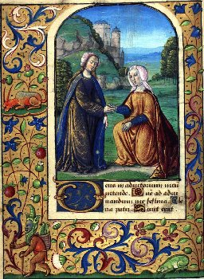
FIGURE VII
(OFFICIUM B.M.V. AD MATUTINUM - Visitation de la sainte Vierge - The Della Porta Hours Tours & Bourges c.1478-80
Copenhagen - The Royal Library - Ms. GkS 1610 4°)
VI
Dans l'astronomie proprement dite, quoiqu'il fût un habile observateur, il n'ouvrit pas d'horizon nouveau, n'ayant pas la clé de l'énigme sur les révolutions des planètes et les mouvements des cieux. Il s'en tenait aux longues et consciencieuses recherches des Arabes. Comme eux, il était aux abois pour expliquer surtout la marche de Mercure, de Saturne et de Jupiter ; il aurait voulu la dire capricieuse et irrégalière, à cause de leurs mouvements d'avance et de recul, à cause du ralentissement et de l'accélération de leur vitesse, et à cause de leurs conjonctions, qui n'arrivaient pas dans des périodes bien déterminées de temps.
« Les mouvements de Mercure, dit-il, sont les plus compliqués de tous les mouvements des planètes : c'est le sentiment de Ptolémée, d'Albatègne, de Thébit, d'Arzachel, et probablement aussi d'Alfragane [« sunt mirabiliores et difficiliores omnibus motibus planetarum. » Opus Majus, p. 162.].»
Cet aveu atteste, du moins, qu'on avait scrupuleusement examiné les phénomènes, et qu'on n'était pas satisfait des explications. C'était dire aux plus habiles d'en chercher d'autres ; mais il fallut attendre longtemps l'idée neuve qui transforma l'astronomie. Bacon exposait, sans les critiquer, les systèmes que sa loyauté trouvait peu satisfaisants. Pour déterminer l'époque de la conjonction de Jupiter et de Saturne, c'est-à-dire de leur rencontre apparente sur un même point du ciel, il admettait, d'après Albumasar et les autres, trois sortes de conjonctions de ces planètes : la grande qui a lieu tous les vingt ans ; une plus grande, tous les deux cent quarante ans environ, et une très grande, après trente-deux révolutions de Saturne, tous les neuf cent soixante ans environ. On comprend comment ils étaient dans l'impossibilité de calculer exactement le retour de ces astres au même point du ciel, eux qui ne soupçonnaient pas les ellipses de leurs orbites, ni la translation de la terre autour du soleil ; mais on voit à quelle haute antiquité ils remontaient pour s'appuyer sur les observations antérieures, puisqu'ils assignaient neuf cent soixante ans a l'intervalle compris entre deux des très grandes conjonctions de Jupiter et de Saturne. Chose étonnante ! Bacon retournait en arrière et s'aveuglait totalement sur une question très bien élucidée par les Arabes, sur la forme sphérique de la terre. Il savait, comme Géber et Albatègne, que les divers lieux du globe sont autant éloignés de l'équateur que l'étoile polaire est élevée pour eux au dessus de l'horizon, et que leurs degrés de latitude doivent se mesurer par les degrés d'élévation de cette étoile [« Elevatio autem poli super horizonta in quolibet climate est latitudo ejus aequinoctiali et distantia zenithi capitis ab aequinoctiali idem cum latitudine et elevatione poli. » Opus Majus, p. 138.]. Mais il ne s'apercevait pas que la corrélation entre les degrés de la voûte céleste et les degrés de latitude de la terre, prouve la rotondité de celle-ci. Il essayait de démontrer qu'elle est plate, en s'appuyant sur un raisonnement géométrique qui péchait par la base.
« Si la terre était ronde, dit-il, les lignes tracées à sa surface du centre du ciel ne seraient pas égales; celle qui tomberait perpendiculairement sur la sphère terrestre serait plus petite que les autres, et le ciel ne serait pas partout à égale distance de notre globe : ce qui est cependant inadmissible [Opus Majus, p. 95.]. »
II n'envisageait pas comme infinie la distance à laquelle nous sommes du ciel étoilé, et auprès de laquelle tous les points de notre globe sont censés en droite ligne. Par suite de l'immensité de la hauteur des deux, l'horizon terrestre semble couper juste par le milieu la voûte azurée du firmament ; la rondeur du globe est nulle pour le regard. Ceci ne l'avait pas empêché de donner de précieux détails cosmographiques sur les différents lieux de la terre, mais Albatègne, Géber et d'autres en avaient parlé avant lui, et il n'a guère fait que les répéter. On lui attribue l'honneur d'avoir proposé au pape Clément IV la réforme du calendrier, qui fut décidée par Grégoire XIII. Il est vrai qu'en 1265 il essaya de persuader le pontife de l'adopter;
il demandait qu'on ajoutât aux années, telles qu'on les comptait dans l'ère de Jules César, un jour tous les cent trente ans : ce qui ne s'éloignait guère du chiffre fixé trois siècles plus tard. Mais Albatègne avait déjà signalé cette rectification à faire depuis le temps de Ptolémée. Il dit :
« Abrachar (sous le règne de Nabonassar, sept cent trente-quatre ans avant Jésus-Christ, avait fixé la longueur de l'année) et Ptolémée avait ajouté environ un jour tous les trois cents ans au calcul d'Abrachar. Puis nous, à notre tour, nous ajoutons à peu près quatre jours un quart pour les six cent vingt quatre ans qui se sont écoulés depuis Ptolémée, outre l'addition qui avait été faite par Abrachar [« Ptolemaeus super Abrachar, in annis fera 300, unam fere diem adjungit. Nos quoque super Ptolemaeum in fere 624 annis, quatuor fere dies et quartam praeter illam quam ipse super Abrachar adjunxit adjunximus » Albategnus, De Motibus Stellarum, Cap. 51]. »
C'était à peu près un jour supplémentaire ajouté tous les cent quarante-six ans. Bacon avait apporté une nouvelle précision aux calculs d'Albatègne ; mais il n'avait que suivi ses traces. Pour la distance de la terre au ciel étoile, au soleil, à la lune, aux planètes, il adoptait simplement l'opinion des astronomes arabes, surtout d'Alfragane et d'Albatègne. Il dit, d'après Alfragane, que la terre est éloignée des étoiles de vingt millions de fois son propre rayon, que le diamètre de la voûte céleste est de cent trente millions sept cent quinze mille milles [Opus Majus, p. 141] ; que la lune est à environ soixante-quatre fois un sixième la longueur du rayon terrestre. Cette dernière mesure est à peu près la seule qui ait approché de la vérité. Les astronomes d'aujourd'hui l'évaluent à soixante fois et un quart le rayon de la terre, au moment où l'astre est le plus près de nous, et à environ un neuvième de plus lorsqu'il en est le plus éloigné. Du reste, c'était déjà, pour ainsi dire, l'évaluation de Ptolémée. Les chiffres apportés pour déterminer la longueur du diamètre de la voûte céleste, sont pure naïveté : l'on se représentait cette voûte comme finie. Quoiqu'il fût donc en possession de toute la science arabe et qu'il y ajoutât quelques légères rectifications, il ne l'avait point dépassée ; au contraire, il l'eût étouffée par un côté capital, si l'on eût admis son opinion de l'aplatissement de la terre. Toutefois, en étudiant l'action de la lune, il avait reconnu qu'elle influe particulièrement sur la marée Albumasar l'avait déjà remarqué et disait :
« Le flux et le reflux marchent comme la lune marche elle-même dans le ciel. » (Fluxus et refluxus currunt sicut luno, varicatur in partibus cœli.)
Bacon, admettant cette observation, disait positivement que la lune attire à elle l'élément liquide [« Radii lunae attrabunt vapores ad aerem. » Opus Majus, p. 85.]. La météorologie avait fait l'objet d'inutiles recherches ; on avait composé des traités au xni0 siècle, comme on le voit dans les Œuvres d'Albert le Grand. On avait disserté sur le tonnerre, sur les éclairs, les vents, les nuages, avec une ignorance complète, que rien ne dissipa. Aikind, qui passait pour un observateur éclairé, a consigné là-dessus les idées singulières que l'on avait au IXe siècle [Bibliothèque nationale, Manuscrit latin n° 9335, p. 371. (xiv° siècle).]. Bacon ne les avait pas rectifiées. Il eut, il est vrai, des notions suffisantes sur la pesanteur de l'air pour imaginer des ballons, et il parle de machines qui semblent mises en mouvement par la vapeur. Dans le traité des Œuvres secrètes de l'Art et de la Nature, il dit :
« On pourrait construire des machines propres à faire marcher les plus grands navires plus rapidement que ne le ferait toute une garnison de rameurs ; on n'aurait besoin que d'un pilote pour les diriger. On pourrait aussi faire marcher les voitures avec une vitesse incroyaole sans le secours d'aucun animal. Enfin il ne serait pas impossible de faire des instruments qui, au moyen d'un
appareil à ailes, permettraient de voler dans Pair à la manière des oiseaux [« De secretis Operibus Naturae et Artis. »]. »Mais il ne put donner suite à ces combinaisons, dont il avait tenté au moins quelques essais.
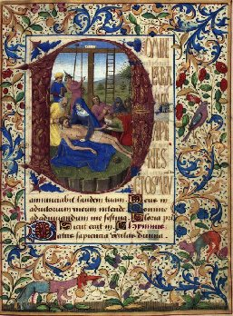
FIGURE VIII
(HORE DE CRUCE AD MATUTINUM - Lamentation sous la Croix - The Della Porta Hours Tours & Bourges c.1478-80
Copenhagen - The Royal Library - Ms. GkS 1610 4°)
VII
On a peine à comprendre qu'un esprit aussi pénétrant et qui devançait son siècle avec tant de supériorité scientifique, se soit jeté avec conviction dans les rêveries de l'alchimie. Cependant il y avait là une idée spécieuse qui l'avait séduit. Il se disait que l'on pouvait imiter les opérations mystérieuses par lesquelles la nature a fait passer les métaux, l'or, l'argent, aux époques de la création, pour les rendre ce qu'ils sont dans ses entrailles. Ces fourneaux souterrains, dont les soupiraux s'ouvrent par les volcans, lui paraissaient avoir tenu en fusion et transformé ces richesses par une extrême chaleur. Ne pourrait-on pas retrouver certaines de ces combinaisons accomplies dans les feux volcaniques du globe, et arriver à des résultats semblables ? Il ne le croyait pas impossible, et il indiquait sérieusement les moyens d'y parvenir. N'avons-nous pas vu de nos jours les verriers faire sortir de leurs fours des mélanges liquéfiés de plomb, de zinc, de sable fin, de divers minerais, etc., pour produire des imitations de pierres précieuses, auxquelles l'œil le plus exercé se laisse parfois tromper ? Avec des matières vitrifiables on contrefait l'éméraude, l'améthyste, le topaze, etc..., au point qu'ils ne diffèrent pour ainsi dire des véritables pierres précieuses que par une moindre dureté. Ne pourrait-on pas admettre que si l'opération se faisait par une chaleur plus intense et avec des mélanges mieux combinés, l'on reproduirait à peu près les modèles dans toute leur perfection ? Il ne faut donc pas s'étonner que les fondeurs, les orfèvres et les alchimistes du moyen âge aient pu espérer de surprendre quelques secrets merveilleux de la nature au fond de leurs creusets. [l'auteur de cet article touche du doigt, sans pouvoir l'approfondir le sujet de l'alchimie positive tel que nous l'avons posé en conjecture] Dans un traité d'alchimie, qui renferme un embryon de la chimie moderne [Bibliothèque nationale. Manuscrit latin n° 4007 (xv° siècle). Traités Alchimiques de Roger Bacon. — Ce traité d'Alchimie est imprimé dans le Theatrun Chzmicum, t. II. Argentorati, 1613, in-12, p. 409. — Rogerii Bachonis de Alchimia libellus.], Bacon pose, comme des axiomes indiscutables, que le soufre et le vif-argent (mercure) sont les principes générateurs de tous les métaux et que, par un mélange habilement proportionné et suivi de fusions répétées, l'on en obtiendrait de l'or, de l'argent, du cuivre, de l'étain... Il n'était point fixé sur les corps simples et les corps composés. Voici quel était le résumé de sa théorie :
« Je vous recommande, disait-il au lecteur dans sa préface, de bien approfondir avant tout ces sept chapitres, qui traitent de la transformation des métaux, d'en bien méditer le commencement, le milieu et la fin, et vous y trouverez une science profonde, qui vous remplira l'esprit. »
Après avoir cité les définitions diverses de l'alchimie, il donne la sienne en ces termes :
« L'alchimie enseigne à faire et à produire une certaine recette, appelée élixir, qui; étant jetée sur les métaux ou corps imparfaits, les amène à leur perfection dans un instant. »
Puis il expose son système :
«. Il faut remarquer que les principes des minerais dans les mines sont le vif-argent et le soufre. C'est d'eux que proviennent tous les métaux et tous les minéraux, qui sont nombreux et divers. Je dis que la nature se propose toujours et s'efforce d'arriver à la formation parfaite de l'or. Mais il survient des accidents de tout genre, qui transforment les métaux, comme on le voit évidemment dans une quantité d'ouvrages des philosophes. Suivant que le vif-argent et le soufre sont purs ou impurs, il en résulte des métaux purs et impurs, à savoir : l'or, l'argent, rétain, le plomb, le cuivre et le fer... L'or est un corps parfait, composé de vif-argent pur, solide, brillant, rouge, et de soufre pur, solide, rouge, hors d'état de brûler, et il n'a point de défaut. L'argent est un corps pur, presque parfait, composé de vif-argent pur, presque solide, brillant et blanc, et de soufre du même genre. II lui manque un peu de fixité, de couleur et de poids. L'étain est un corps pur et imparfait,formé de vif-argent pur, en partie solide et en partie non solidifié, brillant, blanc au dehors et rouge à l'intérieur, et de soufre, qui est dans les mômes conditions que le vif-argent. Il ne lui manque que d'être bien cuit et bien combiné. »
II continue à montrer une progression décroissante de corps imparfaits dans le plomb, le cuivre et le fer, dont il attribue toujours la formation à un mélange de vif-argent et de soufre, avec des combinaisons moins heureuses que pour l'or et pour l'argent. Il ne sort pas de ce système pour tous les métaux, et alors il s'efforce de rechercher quelle peut être la combinaison assez parfaite de l'un et de l'autre, qui donnera des résultats excellents. Continuant à remonter aux opérations primitives de la nature, et à se rattacher aux tendances qu'elle lui paraissait avoir de former un élément unique en créant les corps solides, il dit qu'il faudrait extraire le vif-argent et le soufre des matières végétales et des matières animales. Il ne doute pas qu'on y arrive à la longue par la cuisson ; mais il se dispense de recourir à cette cuisson, puisque le vif-argent et le soufre se rencontrent d'eux-mêmes dans la nature. Le vif-argent et le soufre étant donnés, il croit donc possible de faire de l'or et de l'argent, x II faut prendre du vif-argent et du soufre, tous deux brillants, blancs et rouges, les mélanger en proportion égale, les soumettre au feu pour leur donner une telle pureté qu'ils deviennent un million de fois plus forts et plus parfaits que les corps simples, cuits par une chaleur ordinaire. — Et il recommande l'habileté (Esta igitur prudens). Il ne recule pas devant les moyens à prendre. Il n'a pas moins de quatre chapitres à y consacrer : l'un, sur la manière de procéder, sur le feu à modérer et à entretenir ; un autre, sur le vase ou la fournaise convenable ; le troisième, sur les couleurs accidentelles qui se produisent dans le cours de l'opération ; le quatrième, sur la manière de verser le remède dont la matière en fusion aurait besoin. [il s'agit des têtes de chapitre du Miroir d'alchimie] L'exemple qu'il va chercher, pour se guider, est celui du travail qu'il suppose avoir été accompli dans les entrailles de la terre, au sein des fournaises volcaniques. Mais que de suppositions insensées dans ce qu'il prend pour des faits avérés ! Il prétend que l'on voit quelquefois dans la terre des sources d'eau qui, à force d'être chauffées, se changent en vif-argent, et que, pareillement, des terres glaises, par des effets semblables de chaleur, se transforment en soufre ; puis que, par la cuisson longtemps entretenue, se produisent de même tous les métaux. Quelle folie, ajoute-t-il, de vouloir faire ces choses par d'autres moyens inextricables ! .. Dans les montagnes à minéraux, l'intérieur est fermé et environné de pierres, car si la chaleur s'échappait, les métaux ne pourraient se former, et alors on a besoin d'un four construit comme une montagne, non pour la grandeur, mais pour la chaleur continue... Ne méprisez pas la cendre, car Dieu la rendra liquéfiée, dit un auteur [Theatrum chemicum, t. II, p. 409 - il s'agit du Dialogue du Mercure, de l'alchimiste et de la Nature, extrait de la Nouvelle Lumière Chymique d'Alexandre Sethon. On voit bien que l'auteur de cet article n'a aucune notion de la pensée hermétique et que les idées élémentaires - de ce domaine particulier de l'alchimie - lui échappent]... On pourrait se demander s'il essaya de mettre en pratique ces singulières théories. Mais on ne voit pas qu'il se soit passionné à la recherche des combinaisons de métaux. Tout au plus pourrait-on lui faire honneur d'avoir contribué à l'invention des canons. Il signale la poudre comme une composition curieuse de son temps,
« Nous pouvons, dil-il, avec le salpêtre et d'autres substances, composer artificiellement un feu susceptible d'être lancé à toute distance. On peut aussi imiter parfaitement la lumière de l'éclair et le bruit du tonnerre : il faut prendre du salpêtre et du soufre [De secretis operibus artis et natturae, cap. vi.]. »
Mais tout cela était déjà connu de son temps ; il l'avoue dans l'Opus Majus, où il rappelle l'expérience du salpêtre, qui brise avec bruit un morceau de parchemin dans lequel il est enveloppé,
« Cette expérience, ajoute-t-il, est comme un jeu d'enfants dans beaucoup de pays. »
II ne parle pas de tubes de fer inventés pour lancer ce feu, qu'il savait susceptible d'être envoyé à de grandes distances. Mais on sait que l'emploi des canons fit sensation dans les luttes de l'Angleterre contre la France au siècle suivant. Pour cette invention, de même que. pour beaucoup d'autres, on marcha par degrés, et bien des esprits ingénieux y apportèrent leur part de perfectionnement. Lui qui avait souvent une idée heureuse pour exploiter ou faire ressortir les expériences, dont il avait été frappé, put imaginer un instrument qui révélât mieux les effets de la poudre et les moyens de s'en servir. Ce qu'il déclare nettement, c'est que l'emploi des bombes et leur force terrible pour détruire tout ce qu'elles rencontrent autour d'elles n'étaient plus une nouveauté, et il avait fait à cet égard toutes sortes d'expériences.
« En prenant, dit-il, une petite quantité de cette matière (la poudre), comme une pincée, on produit un formidable bruit, une lumière éblouissante, et cela ^'obtient de bien des manières. On pourrait par là détruire des villes et des armées, à peu près à l'exemple de Gédéon, qui, en brisant des vases d'argile et des flambeaux, en fit sortir un feu qui détruisit avec fracas une armée innombrable de Madianites ; et il n'avait avec lui que trois cents hommes [Nam soni velut tonitrus et coruscationes possunt fieri in aere, immo majore horrore quarn illa quae fiunt per naturam. Nam modica materia adaptata, scilicet ad quantitatem unius pollicis, sonum facit horribilem et coruscationem ostendit vehementem, et hoc fit multis modis, quibus civitas aut exercitus destruatur ad modum artificii Gedeonis, qui lagunculis fractis et lampadibus, igne exsiliente cum fragore inestimabili infinitum Madianitarum destruxit exercitum cum trecentis hominibus...Ibid. cap VI]. »
II parait croire en citant l'exploit de Gédéon que des espèces de bombes avaient été employées dans l'antiquité et qu'elles éclataient par l'action de la poudre ; alors ces bombes étaient en usage avant lui. S'il imagina des moyens de les diriger et de lancer des projectiles par des tubes de fer, il n'ajouta que des perfectionnements aux procédés anciens. Ce qui est indubitable, c'est qu'il occupa beaucoup l'attention publique de ces expériences extraordinaires, et qu'il provoqua les esprits inventifs à chercher le secret de maîtriser la poudre. S'il passait pour être en rapport avec le démon, rien ne contribuait plus à le faire croire que ces imitations du tonnerre, des éclairs, et ces explosions de bombes. Du reste, la vertu secrète qu'il attribuait au soufre et au vif-argent pour produire tous les métaux, lui paraissait d'autant plus vraisemblable, qu'il croyait le tonnerre et l'éclair imités par la poudre. Si l'on avait à ses yeux, pour ainsi dire, saisi une des conceptions du Créateur en combinant du soufre et du salpêtre et en reproduisant l'éclair et le bruit du tonnerre, pourquoi n'arriverait-on pas à d'autres résultats merveilleux en combinant du soufre et du vif-argent. On peut rire des alchimistes, mais on leur doit l'invention de la poudre. De même c'est aux manipulations du vif-argent, tant vantées par Bacon, que l'on doit la fabrication des glaces dont Venise fit plus tard un commerce si important.
Dans son traité d'alchimie il a des développements pratiques et raisonnables, tels que ceux qu'il consacre au sel. Il n'adopta pas toutes les extravagances dont cette science était la source, et dont s'alarmèrent les esprits soucieux de prévenir les superstitions et d'étouffer dans leurs germes les doctrines de magie. Les monastères sentirent longtemps la nécessité de s'en garantir. On peut voir par les décisions prises dans les chapitres généraux des Frères-Prêcheurs, comment cette peur de l'alchimie et de la magie se réveilla au moment de la condamnation de Roger Bacon en 1272, et comment elle était encore vive au siècle suivant.« Nous défendons expressément et de toutes nos forces, disait le chapitre provincial de Narbonne, en 1272, qu'aucun des frères recherche ou conserve des écrits sur l'alchimie, la magie ou tout autre art inconvenant. Que ceux qui en ont les fassent brûler au plutôt, et que personne à l'avenir ne traite ou ne parle de cet art, sinon, qu'il soit condamné à jeûner au pain et à l'eau le mercredi et le vendredi de chaque semaine, jusqu'à ce qu'il en ait été dispensé par le prieur provincial [Bibliothèque nationale, Manuscrit latin n° 5487, fol. 136. Acta capit. prov. Narbonnse celeb. anno 1272. — Ibid., Cadure. (Cahors), 1273, fol. 148]. »
Ces défenses, renouvelées en 1287, au chapitre général de Bordeaux ; en 1289 à celui de Trêves ; en 1323, à celui de Barcelone [Ibid. Nouvelles Acquisitions latines, n° 1233, p. 366. Acta capit. gener.Barcinonae, anno 1323. Martène, Thés. t. IV, col. 1819, anno 1287, et col. 1831, anno 1289.], indiquent à quelles tendances fâcheuses se laissaient entraîner les amateurs de sciences. Cela prouve une fois de plus que les supérieurs de l'ordre des Franciscains n'avaient obéi qu'à la prudence, en défendant à Roger Bacon de communiquer à qui que ce fût des ouvrages sortis de sa plume.Cependant, ce qu'il y a d'absurde dans son traité d'alchimie paraît être surtout ses risibles conceptions sur la transformation des métaux.
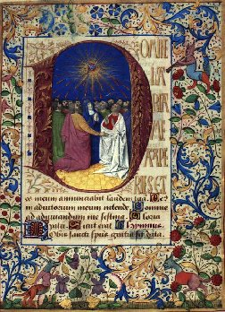
FIGURE IX
(HORE DE SANCTO SPIRITU AD MATUTINUM - Pentecôte - The Della Porta Hours Tours & Bourges c.1478-80
Copenhagen - The Royal Library - Ms. GkS 1610 4°)
VIII
II s'égarait bien davantage dans l'astrologie. [là encore, l'auteur élimine a priori l'astrologie par une pétition de principe. Seules des études statistiques peuvent montrer si les postulats de l'astrologie sont valables ou pas. Dans ce site, et dans deux ouvrages, nous avons fait voir qu'il existait des anomalies de distribution échappant au hasard, ce qui ne veut nullement dire que l'astrologie « existe » mais qu'à coup sûr, des études complémentaires paraissent importantes à pratiquer] Son insistance à y revenir fut déplorable. Quoiqu'il en rabattît beaucoup des théories qui avaient cours chez les Arabes, il croyait pouvoir ériger en science positive et mathématique le système de ceux qui annonçaient l'avenir d'après l'observation des astres, et malgré les condamnations du chapitre des Franciscains, il garda ses convictions jusqu'à la vieillesse. Rien ne paraît lui avoir ouvert les yeux à cet égard. Il avait constaté qu'après une période déterminée les éclipses et différentes comètes revenaient toujours dans le même ordre ; les tables astronomiques indiquant par avance le retour des phénomènes célestes observés dans le passé, le portaient à dire qu'il suffisait de rechercher l'arrangement des astres aux époques antérieures, pour en conclure quelle serait la marche des événements ici-bas [«... consimilem dispositionem cœli quaerere in praeterito et invenire consimiles effectua et sic de future et omnia cognoscerentur. » Opus Tertium, Manus. Cott. fol. 68.]. On a vu qu'il avait cédé aux instances de ses amis et des ses frères, pour suspendre la confection de ces tables astronomiques auxquelles il avait consacré beaucoup de temps, mais qu'il se plaignait d'avoir été victime de leur ignorance et de leur ineptie [« Non potui consummare propter stultitiam eorum cum quibus habui facere. » Opus Tertium], attestant par ces plaintes combien les absurdités de l'astrologie étaient ancrées dans son esprit. Si Jérôme d'Ascoly, devenu souverain pontife, traita avec rigueur ce vieillard honore de l'estime des savants, des princes et des cours, c'est qu'il le trouvait incorrigible sur ce point. Bacon restait persuadé que la disposition des corps célestes avait une influence immédiate sur ce qui nous arrive, et, quoiqu'il n'allât pas jusqu'à leur attribuer les effets dépendant de notre volonté, il en faisait provenir les résultats physiques les plus singuliers [« Si ulterius descendamus, possumus causas rerum inferiorum magis prope investigare per cœlestia. » Ibid., Manus. Cott, fol. 181.]. Le soleil ou la vertu du ciel a, selon lui, de graves conséquences dans la génération de l'homme et des animaux. Après avoir cité, d'après Ovide, une prédiction de la naissance virginale du Christ, figurée par la grande conjonction de Saturne et de Jupiter, laquelle arriva la vingt-deuxième année du règne d'Auguste, il dit
« que, même pour les monstres, c'est la disposition des signes célestes qui détermine la forme de leur corps, et que si un agneau naît avec une tête de taureau, c'est la constellation du taureau qui a prédominé
[Voici comment il voit dans les constellations que le Christ devait naître d'une vierge : « La Vierge commençait à faire monter son visage en Orient, lorsque la grande conjonction de Saturne et de Jupiter eut lieu, et jamais Mercure ne domine dans les constellations comme dans la Vierge. »
C'est à cette influence de Mercure qu'il attribuait particulièrement la naissance virginale du Christ. — II cite ces vers présumés d'Ovide sur la Grande Conjonction :Una quidem talis fatali tempore nuper
Caesaris Augusti fuit anno bis duodeno
A regni novitate sui, quae significavit
Post annum sextum nasci debere prophetam
Absque maris coitu de virgine, cujus habetur
Typus, uti plus Mercurii vis multiplicatur,
Cujus erit concors complesio prima futur»
Sectae.
(Ovidius, De Conjunctione Majore, citation de l'Opus Majus, p. 116.)Ailleurs il dit : « Oportet quod continuana et perficiens generationem sit sol seu virtus cœli. Et non solum est cœlum causa in recte generatis se in peccatis naturae et monstris. Avicenna dicit... ut quando filius hominis habuit caput arietis et agnus habuit caput tauri... virtus in eo induxit formam... secundum figuras cœlestes quae accidunt unicuique... » Opus Majus, p.181.]. »
Ces idées superstitieuses étaient assez répandues parmi le peuple, et, quand elles étaient accréditées par un homme aussi instruit que Bacon, elles trouvaient singulièrement faveur : elles eurent une vogue dont il reste encore quelque chose. Dire la planète de quelqu'un, c'était dire ce qui lui arriverait d'heureux ou de fâcheux, et il circule des livres populaires où ces prédictions se trouvent expliquées. Elles figuraient jadis dans les tables astronomiques appelées Almanachs. Malgré ces opinions étranges, qu'il s'efforçait de faire adopter, il se croyait pleinement à l'abri de la magie. Il s'élevait contre les extravagances dont elle était la source,
« La vérité seule, disait-il, nous apprend à examiner toutes les folies des mages, non pour les soutenir, mais pour les éviter, comme la logique nous enseigne à éviter l'art des sophistes [Opus Majus, p. 448]. »
Il avait l'intime conviction de ne blesser en rien le sens des Écritures ni l'orthodoxie catholique en adoptant l'astrologie dans une mesure très superstitieuse. La naïveté avec laquelle il rappelait comment étaient disposées les constellations au moment de la naissance du Sauveur, prouve qu'il regardait cette influence des astres sur le corps humain comme pleinement vérifiée dans la personne de l'Homme-Dieu. Il s'imaginait rester dans le domaine des faits lorsqu'il était complètement dans la rêverie. Il était de l'avis d'Albumasar, qui, dans son traité d'astrologie, fait cette profession de foi :
« Nous sommes convaincu, avec les anciens, que tout ce qui arrive dans le monde provient de la force du mouvement des signes célestes et des planètes sur nous [« At nos diximus quod antiqui dixerunt, quod omnis res quae accidit in hoc mundo, fit ex fortitudine motus signorum et planetarum super nos. » bibliot. nat. Manuscrit latin n° 16204, p. 42, vol. 2. Albumasar, XIIIe siècle.].»
Le général de son ordre et le souverain pontife ne firent que combattre en lui de telles idées : il est aussi déraisonnable que mensonger de prétendre qu'il fut persécuté à cause de son génie et de ses découvertes. C'était une parfaite ineptie de Voltaire que de dire dans son Dictionnaire philosophique :
« Roger Bacon fut persécuté et condamné à la prison par des ignorants. C'est un grand préjugé en sa faveur, je l'avoue.... Parmi les choses qui rendent ce Bacon recommandable, il faut premièrement compter sa prison, et ensuite la noble hardiesse avec laquelle il dit que tous les livres d'Aristote n'étaient bons qu'à brûler. — Transportez ce Bacon au temps où nous vivons, il serait, sans doute, un très grand homme.... C'était de l'or encroûté dans toutes les ordures du moyen âge. » [cf. les emprisonnements de Roger Bacon -]
On ne peut insulter avec plus d'ignorance et d'effronterie tous ces savants du moyen âge auxquels Bacon emprunta de précieuses lumières, et auxquels il ne fut pas supérieur en tout point. Lui-même les considérait comme des esprits éminents,et sans eux il n'eût pas fait, dans les mathématiques, dans la physique et l'astronomie, ces premiers pas qui développèrent sa force intellectuelle et le firent arriver à tant d'heureux résultats. Et il y avait aussi dans l'or de Bacon beaucoup d'alliage dont il faut tenir compte, avant de juger sévèrement ceux qui étaient chargés de prévenir ses écarts.
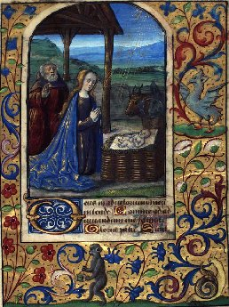
FIGURE X
(AD PRIMAM de B.M.V. - Nativité - The Della Porta Hours Tours & Bourges c.1478-80
Copenhagen - The Royal Library - Ms. GkS 1610 4°)
IX
Son siècle rendit hommage à son savoir et à son génie inventif, en lui décernant le surnom de docteur merveilleux, doctor mirabilis. Ces titres de gloire que le moyen âge avait marqués au front de ses nommes illustres, en distinguèrent un petit nombre, qui furent des personnalités à part : tels saint Thomas, le docteur angéliquee ; saint Bonaventure, le docteur séraphque ; Albert le Grand ; Jean Taulère, le docteur illuminé..., etc. On le classa parmi ceux qui ont jeté la plus vive lumière autour d'eux. Ses frères de l'ordre de saint François furent loin de fermer les yeux sur sa science théologique et sur sa piété, puisqu'ils le firent monter dans les chaires les plus renommées de Paris ; et ce furent eux, sans doute, qui recueillirent ses sermons et les transcrivirent à côté de ceux de saint Thomas, de Pierre de Tarentaise (Innocent V), de Jean de Beauvais, etc., dans les manuscrits où ils se voient encore [ Bibliothèque nationale, Manuscrit latin n° 15956. Il y a quatre discours : 1° In Sabbato Pasche, fol. 226, v. Frater Rogerius ex Ordine Minorum. — 2° In Recsurrectione. — 3° Sur la Résurrection de Jesus-Christ figurant la nôtre. — 4° Sur le texte : Protexisti me a convenuu malignantium. fol. 39 et passim]. Ce n'est pas qu'il faille le placer bien haut comme orateur ; mais il avait cette vaste érudition, cette connaissance de l'Écriture et des Pères qui servait à défrayer l'éloquence de tant de prédicateurs. Son genre ne différait pas beaucoup de celui de saint Thomas. Peut-être y remarque-t-on moins de ces recherches d'antithèses ou de figures, de ces distinctions du professeur développant une thèse et la creusant par des côtés presque puérils, quoique tout cela s'y retrouve encore fréquemment. Une attention pratique à nourrir l'âme si croyante de ses auditeurs, le faisait tirer des textes de l'Évangile et de l'objet de la fête des considérations simples et claires. Ses divisions et ses subdivisions n'entraînent pas de longs développements, et ne prêtent guère à l'animation oratoire ; il les remplit de comparaisons familières tirées de l'histoire naturelle, des coutumes les plus simples, et sans aucun souci littéraire ; et il appuie ses conclusions surdos raisonnements concis. Sa phrase est souvent tissée de textes de l'Écriture, et il amène aussi bien à son but ceux de l'Ancien que ceux du Nouveau Testament : l'un et l'autre lui étaient également familiers, comme à saint Bernard et à saint Thomas d'Aquin. Un de ses principaux soins était d'enchâsser dans sa phrase tous ceux qui pouvaient lui convenir, et il y excellait ; mais point d'élan, point d'entrain, point de peinture de mœurs, point de celte chaleur de l'âme qui va saisir l'âme de l'auditeur et la remuer. C'est l'intelligence qui parle et s'efforce de prouver la justesse de ses considérations. Les Pères, dans des causeries improvisées qu'on appelle homélies, retraçaient parfois sous de vives couleurs les vices de leur époque, les flagellaient avec véhémence, s'égaraient dans des digressions tantôt fades, tantôt piquantes, et faisaient avec naïveté des réflexions soudaines, inspirées par leur vertu. Mais ici l'abandon, la causerie, n'existent pas : c'est la leçon qui a pour but d'expliquer, de disserter froidement et avec méthode. Il est vrai que ces discours de Roger Bacon nous sont parvenus hachés et résumés, comme ceux de saint Thomas, ne retenant rien de l'ampleur de ses pensées, ni de la chaleur qu'il pouvait leur communiquer dans une bonne veine d'inspiration. Ce sont des lambeaux de sa prédication, lambeaux précieux assurément, qui attestent l'estime que l'on faisait de son talent, et en même temps nous assurent qu'au milieu des recherches et des préoccupations scientifiques il ne perdait pas de vue la piété ni les devoirs du religieux franciscain. Rien n'y fait sentir le hardi chercheur qui est à la piste des voies nouvelles et des procédés nouveaux dans le domaine de la science. Sa soumission a l'enseignement révélé est aussi complète que celle du dernier moine de son couvent. Parlant sur ces paroles de David : Protexisti me a conventu malignantium,
« Vous m'avez protégé contre l'assemblée des méchants, »
il semble qu'il devait être tenté de se répandre en paroles amères contre ses détracteurs ; mais aucune allusion ne fait soupçonner qu'il ait eu à souffrir de la malignité des hommes. Il parle de Ja charité, de la foi, de l'espérance, des vertus qui doivent régner parmi les chrétiens [On pourra juger de son genre par ces extraits du sermon sur la Résurrection :
« Licet diu (apostoli) fuissent in societate Domini, tamen rudes erant et ignorantes, et ideo post resurrectionem Deus aperuit illis sensum ut intelligerent Scripturas... Carissimi fratres, consuetudo est quod magister puerorum, cum vult: docere pueros litteras, ponit eis librum inter manus et facit eis legere et sic promovet eos in scientia, sic facit apostolus, qui est magister et doctor gentium. Representat nobis librum vite, in quo addiscamus quid sit agendum et quomodo vivere debeamus, et hoc facit in verbis propo. sitis : Quomodo Christus surrexit a, mortuis, ita.,etc. Vult quod respiciamus ad Christum, qui est liber vite et debemus respicere ad Christi mortem et ad ejus resurrectionem. Primo tangit Dominicam resurrectionem nostram esse ; 2° hortatur nos ad ejus imitationem ibi... Itaque nos in novitate vite amhulemus. Videte quod proponit nobis Dominicain rcsurrectioneni apostolus... tanquam materiam letitie gaudii. Unde cantat Ecclesia : « Haec dies quam fecit Dominus, exultemus et Iaetemur in ea ; et de apostolis dicitur : Gavisi sunt discipuli, viso Domino. Debemus gaudere de resurrectione Domini non gaudio mundano sed spirituali. Et videte quod resurrectio Christi fuit nobis materia gaudii propter quatuor : 1° quia fuit nobis exhibita tanquam solatium nostre peregrinationis ; 2° tanquam initium nostre vivificationis ; 3° tanquam documentum nostre informaUonis ; 4° tanquam argumentum nostre glorificationis. 1° Tanquam solatium nostre peregrinationis ; quia natura nostra, quo mortua fuit et, projecta, vivificata est in capite nostio Christo. Omnia membra gaudere debent de bono capitis, sic nos omnes gaudere debemus de resurrectione Salvatoris, quia Christas surrexit propter nostrum solatium. Propter miseriam inopum et gemitum pauperum, nunc exurgam, ut solatium habeant, eicit Dominus. 2° Iterum fuit nobis resurrectio Christi meritum nostre justificationis...Resurrexit propter justificationem nostram. Sicut per mortem Christi aperta est janua paradysi, sic per Christi resurrectionem facta est nostra justificatio. 3° Fuit exemplum nostre informationis, quia debemus regulare vitam nostram secundum resurrectionem Christi. 4° Fuit argumentum nostre glorificationis... (namque) omnia membra sequuntur caput. Christus est caput ecclesie, nos vero membra. Si ergo Christus resurrexit, nos ergo resurgemus.
II — ... Est multiplex novitas... novitas erroris... alia curiositatis... alia singularitatis... Est novitas qua quidam a studiis antiquorum patrum et a veritate Evangelii discordant: iste sunt profane novitates... Apostolus (ait) bonum depositum custodi. — Est novitas curiositatis. Multi volunt nova dicere et quaerunt... volunt admvenire nova .. et dicentes se esse sapientes stulti facti sunt.
1° Est novitas singulantatus... (Quidam) volunt vivere, nec induere, nec se morigerere, sicut alu... volunt viden et cognosci.Vultis scire quomodo anima debet renovari... Quadruplici modo renovantur res corpoiales per ablutionem, per confucationem, per adustionem, per depositionem. 1" per ablutionem Cor tuum sordidatum est peccatis et cunsuetudinibus pravis, debes uti ablutione... ablutione lacrymarum, cornpunctionis et contritionis... Exitus aquarum deduxerunt oculti met quia, etc. 2° Debemus renovare corda nostra sicut renovantur aliqua per confricationem, ut gladius, calcaria, cum sunt rubiginata .. Ensis rubiginatus adhaeret forello... Quando homo est bene armatus, gladius non potest penetrare nisi vestem, similiter si es aimatus lorica penitentie et patientie, nulla adversitas affliget te. 3° Debemus renovae corda nostra sicut renovantur aliqua per adustionem ai ignis, quando renovamur, est ignis cantatis sive amoris, amor facit corda nova ; propter hoc mandatum de caritate Domini novum est...Carbo mortuus niger est, et turpis ad videndum et frigidus et non facit nisi intrigidare , sic qui sunt sine caritate sicut carbo novus. 4° Renovantur per depositionem. Sicut falcones et aves nobiles in muta sua, projicient pennas veteres et assumunt novas, renovantur et fiunt agiles ad volandum, sic nos cor nostrum debemus ponere in muta.].A propos de la nouveauté de vie que nous devons avoir pour imiter le Sauveur ressuscité, il remarque différentes sortes de nouveautés : la nouveauté d'erreur, la nouveauté de curiosité,la nouveauté de singularité. Il a pour toutes une égale aversion, et reste l'humble enfant de saint François. S'il essaya de se relever de l'interdit dont l'avait frappé son général franciscain à cause de ses opinions d'astrologie, et s'il en appela au pape Clément IV. son ancien protecteur, afin de justifier auprès de lui ses théories scientifiques, il en avait le droit, et ne commettait qu'une imprudence bien pardonnable chez un homme convaincu, comme il l'était, de l'importance de plusieurs de ses découvertes et de la justesse de ses démonstrations mathématiques. Que pouvaient faire ses supérieurs, qui estimaient son talent, s'alarmaient de ses erreurs, et redoutaient la nature ardente de l'inventeur ? Ils le mirent en état de suivre sa veine la plus heureuse, de concentrer sa force intellectuelle sur les travaux où il excellait, c'est-à-dire sur les applications de la géométrie à l'optique, et sur les instruments qui ont révélé tant de merveilles de la vision. Ils le forcèrent à mûrir longtemps ses conceptions, à renouveler ses expériences, à étudier sous bien des faces diverses la marche des rayons lumineux dans les milieux plus ou moins denses, dans les verres concaves et les lentilles. C'était bien autrement utile à la science que de le maintenir et de l'aiguillonner sur le terrain brûlant des controverses philosophiques et théologiques, où il se trompait si évidemment, et où il ne voulait pas lâcher prise contre les Albert le Grand et les plus redoutables scolastiques. A beaucoup d'égards, en lui imposant l'obligation de ne pas écrire pour le public, et en secondant ses méditations et ses expériences solitaires, ils tirèrent de lui le meilleur parti qu'on en ait pu tirer. Il n'importait pas qu'il composât beaucoup d'ouvrages, mais qu'il observât beaucoup la nature, puisque sa perspicacité en surprenait les secrets et qu'il se plaisait aux expériences. On désirerait sans doute qu'il se fût expliqué plus longuement sur ses essais, sur ses découvertes, sur ses divers instruments ; mais rien n'a été perdu pour son siècle, ni pour l'industrie à venir. Il en dit assez pour prouver que sa part d'invention fut considérable ; mais on a vu qu'il devait beaucoup aux Arabes et même à ses contemporains. M. de Humboldt disait que
« Roger Bacon était la plus grande apparition du moyen âge.»
Cela peut être vrai du mathématicien, de l'observateur de la nature, lisant dans ses mystères et dans ses lois ce que nul avant lui n'y avait lu, marchant appuyé sur la géométrie pour formuler ses conclusions, et s'aidant d'instruments nouveaux pour accroître sa puissance d'investigation. Mais il y a des ombres au tableau, et il est bien loin de cette rectitude d'intelligence qui dirigeait saint Thomas, même dans les questions les moins en rapport avec ses études habituelles. Il est de la race des Kepler, des Newton, des Galilée, pour la hadiesse des conceptions, et pour ce flair du génie qui lui faisait pressentir des lois mathématiques dans les phénomènes de la nature; de plus il était mécanicien, et il fut forcé par les tribulations de sa vie et par les défenses de l'autorité de développer son talent de mécanicien, au lieu de se jeter dans la mêlée des discussions philosophiques. C'était beaucoup pour le succès de ses recherches et de ses méditations. S'il emprunta beaucoup d'idées fondamentales aux Arabes sur les secours que les mathématiques et en particulier la géométrie peuvent donner à l'étude de la physique, de l'optique, de l'astronomie, il contribua bien plus qu'eux à faire entrer dans cette voie les méthodes modernes, car il y avait trouvé d'incomparables lumières. Ce sont des titres de gloire impérissables, et la science doit une immense reconnaissance à ce pauvre moine de Saint-François
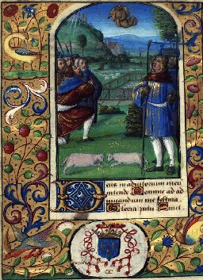
FIGURE X
(AD TERTIAM de B.M.V. - Annonciation aux Bergers - The Della Porta Hours Tours & Bourges c.1478-80
Copenhagen - The Royal Library - Ms. GkS 1610 4°)[Il serait difficile de dresser une liste exacte des ouvrages de Roger Bacon. On sait, par ses aveux, qu'il n'avait composé que quelques opuscules avant d'envoyer son Opus Majus (le Grand Ouvrage) au pape Clément IV, vers 1266, et que ses supérieurs l'empêchant de communiquer des livres qu'il aurait faits, il s'abstenait d'écrire. Parmi les opuscules déjà sortis de sa plume étaient : celui des Œuvres secrètes de l'Art et de la Nature (De Secretis Operibus Artis et Naturae), et celui de l'Inanité de la Magie (De Nullitate Magiae). Plus tard il put, sans doute, rédiger encore quelques traités en s'autorisant de la permission du pape, comme il fit pour l'Opus Minus (le Petit Ouvrage) et pour l'Opus Tertium (le Troisième Ouvrage) (L'Opus Tertium est manuscrit à la bibliothèque de Douai. M. Cousin
en a donné des extraits et il en a traduit plusieurs dans le Journal des Savants, année 1848. — II y a celui de la Bibliotheca Cottoniana, également manuscrit.), qu'il lui avait dédiés. Peut-être aussi ne lui fut-il pas défendu d'écrire sur des sujets où l'on n'avait pas à craindre qu'il exposât ses erreurs, tels que la géométrie, la grammaire, les miroirs ardents. Mais il est à croire que certains ouvrages purent paraître sous son nom, pour avoir plus d'autorité, quoiqu'il y fût étranger. L'éditeur de l'Opus Majus a énuméré, dans sa préface, les principaux ouvrages qu'on lui attribue et dont plusieurs sont restés manuscrits dans les bibliothèques d'Oxford, de Cambridge, de Douai, de Rome, etc. Pitsée, et après lui Wadding, les avait déjà énumérés dans Les Ecrivains des Frères-Mineurs, Outre ceux qui ont été cités, c'est-à-dire, outre le Specula Mathematica, le traité de la Perspective, celui des Œuvres de l'Art et de la Nature, celui des Miroirs ardents, de l'Alchimie, on remarque les suivants : Grammatica Graeca, lib. I. Manusc. Cantabrig.; De Geometria, lib. I ; Introductio in Astrologiam ; Paraboles de Quadratura ; Contra necromanticos ; De radiis solaribus ; Practica Magiae ; De
coloribus per artem fiendis ; De logica ; De forma resultante ex specula ; De philosophia morali ; Astronomia ; Serrnonum seu Concionum super Psallerium, ; De coelo et mundo, lib. II ; Computus naturalis ; De locis stellarum.].
L'abbé C. NARBEY.
[Pierre Duhem, Le système du monde, L'astronomie latine au Moyen Age, Hermann, 1958 ]

FIGURE XI
("Sphaera mundi..." - Atlas coelestis. Spaera Mundi, Ioh. Gabriele Doppelmaiero, 1742 )
Profondément bouleversée sous l'épiscopat de Guillaume d'Auvergne, dispersée en 1229, l'Université de Paris n'avait pas tardé à reprendre sa vie laborieuse et ardente. Qu'enseignait-on dans cette Université et, particulièrement, à la Faculté des Arts, vers la fin du pontificat de Guillaume et pendant les premières années qui suivirent sa mort ? Qu'y connaissait-on, en particulier, des choses de l'Astronomie ? Pour répondre à ces questions, nous ne disposons pas de renseignements bien nombreux ; mais, du moins, possédons-nous, semble-t-il, un monument particulièrement insigne de l'enseignement qui se donnait, à la Faculté des Arts de Paris, vers l'an 1280. Un manuscrit conservé à la Bibliothèque municipale d'Amiens [Bibliothèque municipale d'Amiens, ms. n°406. — Nous devons à l'obligeance de M. A. G. Little d'avoir pu consulter une reproduction photographique de ce manuscrit; que notre savant collège d'Oxford nous permette de lui exprimer ici toute notre reconnaissance.] nous présente successivement deux séries de questions sur la Physique d'Aristote, des questions sur le traité De plantis attribué au même auteur, enfin trois séries de questions sur la Métaphysique. Au XIVe siècle, d'une écriture fine et serrée où abondent les abréviations et les ligatures, un copiste a transcrit, sur les doubles colonnes de cent trente-trois feuillets de grand format, cette ample collection de questions ; auparavant, il avait eu soin d'en dresser la table, qui suffit elle-même à remplir cinq feuillets. Primitivement, ce manuscrit appartenait à l'abbaye de Saint-Pierre de Curbie [MONTFAUCON, Bibliotheca Bibliothecarum, t. II, p. 1405]. Lors de la Révolution, il fut transporé à la Bibliothèque de la ville d'Amiens où il est demeuré depuis ce temps. Victor Cousin en a donné une description [Victor Cousin, Description d'un manuscrit inédit de Roger Bacon qui se trouve dans la Bibliothèque d'Amiens (Journal des Savants, année 1848, pp 459-472] dans laquelle il a inséré d'importants extraits de la table des matières. Emile Charles, qui n'en a pu faire qu'un examen très sommaire, en a également dit quelques mots [Emile CHARLES, Roger Bacon, sa vie, ses ouvrages, ses doctrines. (Thèse de Paris) Bordeaux, 1861, pp. 65-66].
L'auteur des deux séries de questions sur la Physique d'Aristote est très certainement Roger Bacon. En effet, en tête de la première série de questions sur la Physique, le copiste a inscrit ce titre [Ms cit., fol.. 6. r°] dans la marge supérieure — Cité d'après V. Cousin (loc. cit., p. 463) ; ce titre s'est trouvé hors du champ de la reproduction photographique que nous avons consultée.] :« Questiones primi physicorum Rogeri bachini ».
La seconde série de questions sur la Physique commence en ces termes [Ms. cit.. fol. 29, col. a. — V. Cousin, (loc. cit., p. 463) a !u : e magistro dicto Bacon.] :
« Incipiunt questiones supra librum phisicorum a magistro dicto bacum ».
Dans cette seconde série,
« la division par livres [Victor Cousin, loc. cit., p. 463] est accompagnée d'une autre par pièces, peciae ou petiae, division tout extérieure qui partage le manuscrit par cahiers de quatre feuillets ».
Or dans la première marge supérieure de certains de ces cahiers, nous trouvons des indications telles que celles-ci [Ms. cit., fol. 33, au-dessus de la col. a; fol. 41, au-dessus de la col. a; fol. 45, ; au-dessus de la col. a ; fol. 49, au-dessus de la col. a ; fol. 53, au-dessus du la col. a.] :
2 pecia supra primum librum phisicorum a magistro Ro. b.
4 pecia supra tertium phisicorum a magistro R. b.
5 pecia supra quartum phisicorum a magistro R. b.
6 pecia supra quartum phisicorum a magistro R. b.
7 pecia supra quartum phisicorum a magistro R. b.Ces multiples indications nous assurent que les deux séries de questions sur la Physique sont de maître Roger Bacon. Que les questions sur le De plantis soient du même auteur, nul ne l'a mis en doute. La première série de questions sur la Métaphysique d'Aristote, où le XIe livre de cet ouvrage est, d'ailleurs, seul considéré, ne porte pas de nom d'auteur ; elle n'a d'autre titre que celui-ci [Ms. cit., fol. 74, col.b] : De XIe libro. Mais la similitude des pensées et des expressions ne nous permet pas de douter qu'elle n'ait pour auteur celui qui a composé les deux séries de questions sur la Physique et aussi la seconde série de questions sur la Métaphysique. Or, au sujet de l'auteur de cette série-ci, les indications abondent. Voici, d'abord, le titre [Ms. cit., fol. 78, r°, dans la marge supérieure] :
« Ave maria gratia plena dominus tecum benedicta tu in mulieribus et gloriosissimus et dulcissimus fructus ventris tui. Incipiunt questiones supra primum metaphisice a magistro R. bacco. 1 pecia ».
Puis, nous relevons ces mentions [Ms. cit , dans les marges supérieures des foll. 82 r0, 87 r°, 91 r°. 95 r°, 99 r°, 103 r0. 107 r0, 111 r°.] :
2 pecia supra secundum metaphisice a magistro R. b.
3 pecia supra secundum metaphisice a magistro R. b.
Supra quintum librum metaphisice. —
4 pecia metaphisice a magistro R. b. Supra quintum librum metaphisice. —
5 pecia metaphisice a magistro R. b. Supra sextum librum metaphisice. —
6 pecia metaphisice a magistro R, b. Supra septimum librum metaphysice. —
7 pecia metaphisice a magistro R. b. Supra lihrum octavum metaphysice. —
8 pecia metaphisice a magistro R. b. Supra nonum librum metaphysice. —
9 pecia metaphysice a magistro R. b.Voilà donc l'affirmation, maintes fois répétée, que l'ouvrage est de maître Roger Bacon. Nous n'avons plus la même assurance pour la troisième série de questions sur la Métaphysique. Ces questions, qui portent seulement sur les trois premiers livres du traite d'Aristote, n'ont d'autre titre que celui-ci [Ms. cit., fol. 176, col. c] :
Hic incipiunt questiones supra primum metaphisice Aristotilis.

FIGURE XII
("Systema solare et planetarium.. ." - Atlas coelestis. Systema solare et planetarium, Ioh. Gabriele Doppelmaiero, 1742)
Sont-elles de Bacon ? Cela est vraisemblable; mais non certain. La première série de questions sur la Physique commente seulement les cinq premiers livres d'Aristote [Les questions sur le premier livre commencent au fol. 6, col. a , sur le second, au fol. 8, col. c ; sur le troisième, au fol. 16, col. b ; sur le quatrième, au fol. 19, col. d ; sur le cinquième, au fol. 24, col c.]. La seconde série des questions sur la Physique embrasse tous les livres
[Le premier livre commence au fol. 20, col. a ; le second livre, au fol. 34, col. a ; le troisième livre, au fol. 4°, col. b ; le quatrième livre, au fol. 43, col. a ; le cinquième livre, au fol. 53, col. d ; le sixième livre, au fol. 56, col. b. A partir dut fol. 57,col. a, la seconde série de questions sur la Physique se trouve interrompue par les questions sur le traité De plantis. Les questions sur le
sixième livre se poursuivent à partir du fol. 64, col. a, et tiennent tout le fol. 64. La col. a du fol. 65 commence au milieu d'une question relative au septième livre. Le huitième livre commence au fol. 67, col. c, et prend fin au fol. 74, col. a.]du traité de Stagirite; mais elle présente une lacune ; ce qui a trait au septième livre commence au milieu d'une question dont le début fait défaut [Ms. cit., fol, 65, col. a.] ; cette lacune est d'autant plus regrettable que cette question est celle où Bacon exposait sa théorie du mouvement des projectiles ; ce qui en reste suffit, heureusement, à nous faire connaître la pensée de l'auteur; nous le verrons plus tard. L'examen de la table des matières montre que cette lacune ne s'est pas produite après l'oeuvre du copiste auquel nous devons le manuscrit d'Amiens ; certainement, elle existait déjà dans le texte dont il a fait usage. La première série de questions sur la Métaphysique ne comprend, nous l'avons dit, que le XIe livre [Elles commencent au fol. 74, col. b. pour se poursuivre jusqu'au fol. 77, col. b ; le verso du fol. 77 est blanc.]. La seconde série
[Le premier livre commence au fol. 78. col. a ; en dépit du titre : Supra secundum metaphysice qui se lit en haut du fol. 87, col. a, il se poursuit jusqu'au fol. 87, col. d, où commence le cinquième livre ; le sixième livre commence au fol. 97, col. a ; en dépit du titre : supra septimum metaphysice, qui se lit en haut du fol. 103, col. a, le sixième livre continue jusqu'à la col. c. du fol. 106 où ces mots : hic incipit octavus liber metaphisice annoncent le commencement du septième livre : fol. 108, col, c, les mots : circa nonum librum metaphisice annoncent le huitième livre ; fol. 113, col. a, les mots : queritur circa Xm inaugurent les questions sur le neuvième livre qui se poursuivent jusqu'au fol. 113, col. d. Les questions de Bacon sur la Métaphysique d'Aristote sont alors interrompues par un commentaire sur le Liber de causis, un traité de Logique d'un certain Magister P. H, et un traité De visu. Dans la marge supérieure du fol. 166, r°, se trouvait une indication que le relieur a coupée et dont on ne devine plus que le mol : incipit La col. a de ce folio commence en citant les premiers mots du Xl° livre de la Métaphysique. Les questions sur ce XIe livre se poursuivent jusqu'au bas du fol. 176, col. b. Dans la marge, au-dessus de la col c, on lit : Expliciunt questiones supra mdecimum prime philosophie, amen. ]
passe en revue le premier livre, les livres V, VI, VII, VIII et IX, enfin le onzième livre du traité d'Aristote sur la Philosophie première. Partout où, dans le manuscrit d'Amiens, nous trouvons le nom ou les initiales de Roger Bacon, le titre de Maître les précède ; en aucun cas, ce manuscrit ne donne à Bacon le titre de Frère, ce que ne manquent jamais de faire les manuscrits de l'Opus majus, de l'Opus tertium, des Communia naturalium. N'en faut-il pas conclure que l'auteur de ces nombreuses questions n'était que maître ès arts séculier, qu'il n'avait pas encore revêtu la bure de Saint François ? Cette conclusion, qu'Emile Charles avait très formellement proposée [EMILE CHARLES, Op. laud., p. 21 et p. 78.], peut être appuyée d'autres considérations. Certaines théories, discutées dans les questions sur la Physique, par exemple, se trouvent également traitées dans quelqu'un des grands ouvrages de Bacon ; ainsi en est-il, par exemple, de l'impossibilité du vide, qui est examinée en chacune des deux séries de questions sur la Physique, en l'Opus tertium, aux Communia naturalium. Or, si l'on reconnaît sans peine [Pierre DUHEM, Roger Bacon et l'horreur du vide (Roger Bacon. Essays Contributed by Various Writers on the Occasion of the Commemoration of
thé Seventh Centenary of his Birth, Collected and Edited by A. G. LITTLE, Oxford, 1914, pp. 241-284).] qu'une même pensée a dirigé les diverses expositions, on reconnaît non moins aisément que dans l'Opus majus, dans l'Opus tertium, aux Communia naturalium, cette pensée a une maturité qu'elle n'avait pas lorsque furent rédigées les questions sur la Physique ; par là, de nouveau, nous sommes amenés à faire de ces questions une œuvre de jeunesse de Roger Bacon. Des considérations du même genre nous montreraient, d'ailleurs, que les deux séries de questions sur la Physique ont dû, dans le temps, se succéder suivant l'ordre que leur attribue le manuscrit d'Amiens. Bien souvent, de la première série de questions à la seconde, la doctrine de Bacon s'est affermie et précisée. C'est ce que nous aurons occasion de noter, en particulier, lorsqu'il nous arrivera, dans cet ouvrage, d'examiner l'enseignement de Bacon touchant l'impossibilité du vide. Nous pouvons également affirmer que la seconde série de questions sur la Métaphysique est antérieure à la seconde série de questions sur la Physique ; entre le temps où Bacon a discuté ces questions-là et l'époque où il a examiné celles-ci, il s'est instruit en Astronomie, comme nous le verrons dans un moment. Victor Cousin disait [VICTOR COUSIN, loc. cit., p. 463.], au sujet de la seconde série de questions sur la Physique :« C'est vraisemblablement une autre rédaction, faite par quelque élève, du même enseignement ».
Ce que nous venons de dire montre que cette supposition ne saurait être exacte ; en ces deux séries de questions, nous devons voir deux enseignements distincts, donnés au cours de deux années scolaires différentes. La supposition de Victor Cousin est cependant juste en un point ; très certainement, les textes que conserve le manuscrit d'Amiens nous gardent la pensée, mais non la langue même de Roger Bacon ; ce sont rédactions d'élèves faites d'après un enseignement oral. Le style de Bacon abonde en formules imaginées, très caractéristiques, qu'on retrouve dans tous ses ouvrages et qui permettent aisément d'en reconnaître les fragments anonymes. Or, ces marques personnelles du verbe de Bacon, nous les chercherions en vain dans ces nombreuses questions. En revanche, nous y relèverions en grand nombre des solécismes grossiers et des barbarismes énormes, dont beaucoup ne peuvent être mis sur le compte du copiste, et qu'il est impossible d'attribuer à Bacon. La rédaction est, le plus souvent, très concise ; elle emploie volontiers un style qu'on appellerait, aujourd'hui, télégraphique ; ce besoin d'économiser les mots. le désordre qui se remarque dans l'ordonnance de certaines questions, tout sent la note prise au cours, sous la dictée rapide du professeur, bien plus que l'oeuvre achevée à loisir par le maître. Nous croyons donc qu'on peut regarder le manuscrit d'Amiens comme un recueil de rédactions faites par des élèves, d'après l'enseignement de Bacon, alors que celui-ci, simple maître ès arts, commentait Aristote. Mais en quelle université cet enseignement a-t-il été donné ? Est-ce à Oxford ou à Paris ?
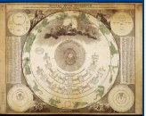
FIGURE XIII
("Systema mundi Tychonicum" - Atlas coelestis. Systema solare et planetarium,
Ioh. Gabriele Doppelmaiero, 1742)Il serait peut être imprudent de répondre à cette interrogation d'une manière entièrement générale ; mais il semble qu'on puisse y répondre sans aucune témérité au sujet de la seconde série des questions sur la Physique et déclarer que ces questions ont été dis-cutées à Paris. En effet, en un certain endroit [Magistri dicti Bacuun Questiones supra librum physicorum ; lib. IV, (prima quaestio de vacuo). Ms. cit , fol. 47 col. d.], Bacon imagine qu'il plonge sa main dans l'eau : « Ut si palma mea tangat Secanam ».
Ce n'est pas la Seine, c'est la Tamise qu'il eût nommée à ses élèves s'il eût enseigné à Oxford. Or en quel temps Roger Bacon, muni du titre de maître ès arts, a-t-il pu discuter la Physique et la Métaphysique d'Aristote devant les étudiants parisiens ?Écoutons à ce sujet, dit É. Charles [É. CHARLES, Op. laud., pp. 10-11. —Cf. : A. G. LITTI.E, On Roger Bacon's Life and Works (Roger Bacon. Essays..., Oxford, 1914. Introduction, pp. 4-5).], Roger lui-même. Il est à Paris avant 1248, il y est encore en 1250. Il y entend d'abord l'Évêque Guillaume dissertera deux reprises sur la nature de l'intellect agent, en présence de toute l'Université réunie [ROGERI BACONIS Opus tertium, cap. XXIII (Fa. Rogeri BACON, Opera inedita, éd. Brewer, Londres, 1839, p. 74).]. Or Guillaume meurt en 1248. Il y connaît aussi un certain Maître Pierre. « C'est de lui que je tiens toutes mes connaissances », s'écrie-t-il, en 1267, « et il y a de cela vingt ans », ce qui nous reporte à l'année 1247
[« Sed nullum vidi qui sciat illas aestus nisi virum a quo haec didici transactis aunis viginti » [ROGERI BACONIS Opus minus (ROGERI BACON, Opera inedita, éd. Brewer, p 359)]. En marge de ce passage. Emile Charles lit : Magistrum Petrum ; mais Brewer lit : Rob. Lincolniensem. Dans la préface de son édition (p. XXXVII), Brewer affirme « qu'on ne saurait trouver trace de Pierre de Maharn-curia dans l'exemplaire mutilé de l'Opus minus » [cf. note 34 du Miroir d'Alchimie sur Pierre de Maricourt] qu'il publie. On ne peut donc faire état de ce texte en faveur de la thèse soutenue par Emile Charles ; heureusement, les autres textes suffisent à mettre celle thèse hors de doute.].
Enfin le statut du légat Pierre de Courçon, de 1215, arrête qu'on ne parviendra pas à la maîtrise avant trente-cinq ans, et huit années au moins d'études. Cette dernière condition ne fut pas appliquée à la rigueur, et on n'en peut conclure que Bacon ait dû rester huit ans en France. La première eût force de loi ; Saint Thomas seul s'en affranchit en 1256 ; mais ou sait quels orageux débats il eut a affronter, et quelle résistance lui opposa l'Université. Or Bacon n'eut l'âge qu'en 1249 ; nous sommes donc certains qu'il ne rentra pas à Oxford en 1240. Du reste, en 1250, il est encore en France ; il l'atteste lui-même ; il vient de raconter la révolte des Pastoureaux, de ces vagabonds fanatisés par un moine hardi qui, en 1250, troublèrent la France et firent trembler, dit-il, jusqu'à la régente Blanche de Castille, pour la plus grande confusion du clergé et de l'Eglise,
« J'ai vu leur chef, ajoute-t-il [Fratris ROGERI BACON Opus majus, pars IV; éd. Jebb, p. 254; éd. Bridges, vol. I, p. 401,], » et j'ai remarqué qu'il portait dans sa main quelque talisman sacré » et, pour ainsi dire, des reliques ».
Ailleurs, il affirme [ROGERI BACON Op. laud., pars IV; éd. Jebb., p. 191 ; éd. Bridges, vol. I, p. 305.] avoir conféré avec Guillaume de Rubruquis à son retour de la Terre-Sainte, ce qui reporterait encore plus loin son départ de France, Guillaume n'ayant pu revenir de son ambassade chez les Tartares avant l'année 1254. Nous pouvons donc affirmer que Roger Bacon était à Paris au voisinage de l'an 1250 ; c'est à ce moment que, simple maître ès arts, il a dû examiner, au sujet de diverses œuvres d'Aristote, les questions conservées par le manuscrit d'Amiens. Partant, ce manuscrit est, comme nous l'avons dit, une source précieuse et abondante de renseignements sur l'état des études, dans la Faculté des Arts de Paris, au milieu du XIIIe siècle. A cette source, nous aurons bien souvent occasion de puiser. Pour le moment, nous lui demanderons ce qu'à leurs élèves, les maîtres de la rue du Fouarre découvraient de la science astronomique ; et nous verrons que ce qu'ils on disaient se réduisait à fort peu de chose. Dans ces questions, Bacon traite à deux reprises du mouvement des astres ; en premier lieu, lorsqu'au cours de sa seconde série de questions sur la Métaphysique, il en vient à commenter le XIe livre ; en second lieu, dans sa seconde série de questions sur la Physique, lorsqu'il discute le VIIIe livre. C'est dans cet ordre que nous résumerons ces deux exposés, car c'est assurément l'ordre chronologique dans lequel ils se sont succédés. La seconde série de questions sur la Métaphysique consacre douze questions consécutives aux mouvement des cieux. Voici comment ces questions sont libellées dans le manuscrit d'Amiens [Ms. cit., fol. 171, col d, à fol. 173, col. a.] :
Quaeritur PRIMO cujus artificis sit considerare de motibus corporum caelestium.
SECUNDO quaeritur utrum sint plures orbes.
TERTIO quaeritur utrum sint plures orbes secundum numerum et secundum speciem.
QUARTO ouspritur utrum orbes sint continni.
QUINTO quaeritur utrum stellae, qiuae sunt in illiso orbibus sicut partes, moveantur.
SEXTO quaeritur utrum onmes orbes et stellae eoum ab eodem movente moveantur.
SEPTIMO quaeritur utrum omnes planetae et erraticae; cum suis orbibus ab eodem motore moveantur. OCTAVO quaeritur utrum secundum numerum mobilium multiplicetur numerus moventium.
NONO quaeritur utrum quaelibet caelestia, silicet tam orbes quam stellae, moveantur pluribus motibus.
DECIMO quaeritur utrum orbes inferiores moverantur motilius contrariis motui orbis primi.
UNDECIMO quaeritur utrum orbes caelestes in movendo differant in velocitate et tarditate.
DUODECIMO quaeritur utrum motus orbium et planetarum superiorum, ut Saturni, velocior sit motibus inferiorum, ut Lunae.A qui appartient-il de traiter des mouvements célestes ? Est-ce au métaphysicien, au mathématicien ou au physicien ? Telle est la première question que se pose Bacon. Voici la réponse [Ms. cit., fol. 171, col. d.] :
« Il faut remarquer, à ce sujet, que, des orbes célestes et de leurs mouvements, il convient de parler à trois points de vue différents. D'une première manière, on les peut considérer en tant qu'êtres et sous le rapport qui est entre eux et la substance permanente, c'est-à-dire la Cause première; de cette manière, c'est au métaphysicien qu'il appartient de les considérer. On peut, en second lieu, les considérer en raison de leur nature quantitative, c'est-à-dire sous le rapport de leurs grandeurs ; ainsi considérés, ils ressortissent au mathématicien. On peut, en troisième lieu, les considérer en raison de leur nature qualitative, c'est-à-dire on raison de leur influence sur les choses inférieures ; ils relèvent alors de la considération du physicien. »
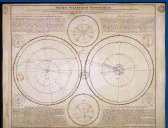
FIGURE XIV
("Theoria planetarum primariorum" - Atlas coelestis. Theoria planetarum primariorum,
Ioh. Gabriele Doppelmaiero, 1742)
Pendant la seconde moitié du treizième siècle, un grand débat va mettre aux prises les physiciens, c'est-à-dire ceux qui, au nom de la Physique péripatéticienne, tiennent pour l'Astronomie des sphères homocentriques, et les mathématiciens, c'est-à-dire ceux qui, au nom de l'observation, défendent l'Astronomie de l'Almageste ; à ce débat, Bacon, vingt ans plus tard, prendra le plus vif intérêt ; à l'époque où il discute ses questions sur la Métaphysique, il ne paraît même pas soupçonner la possibilité de cette opposition entre physiciens et mathématiciens ; la distinction qu'il établit, dans l'étude du ciel, entre le domaine du mathématicien et le domaine du physicien correspond à la distinction que nous faisons aujourd'hui entre l'Astronomie et l'Astrologie. De l'action exercée par les astres sur les choses sublunaires, notre auteur ne doute aucunement ; il attribue même à cette action, dans toute sa Physique, un rôle particulièrement important ; nous aurons, à plusieurs reprises, occasion d'en faire la remarque. Dès maintenant, nous le voyons faire un fréquent appel aux raisons astrologiques. S'il soutient [Ms. cit., loc. cit.], par exemple, en réponse à la seconde question, que les orbes célestes sont multiples, ce n'est pas la multiplicité des mouvements des astres, mais la multiplicité de leurs effets ici-bas qui lui sert à corroborer son dire. C'est encore cette diversité des influences répandues et des opérations produites dans le inonde inférieur qui sert, au cours de la troisième question, à établir [Ms. cit., fol. 172, col. a.] qu'il n'y a pas seulement, entre les orbes, distinction numérique, mais aussi diversité spécifique. Les orbes célestes sont-ils continus entre eux ? Telle est la quatrième question. Pour y répondre, notre maître ès arts distingue diverses sortes de continuités ; selon qu'il s'agit de l'une ou de l'autre d'entre elles, la réponse est affirmative ou négative.« En troisième lieu, dit-il [Ms. cit., loc. cit.], il y a la continuité du mouvement ; mais cette continuité est de deux sortes, parce que le mouvement est aussi de deux sortes. Il y a, d'abord, un mouvement qui est commun a tous les orbes ; c'est le mouvement du firmament, qui est la huitième sphère ; par suite du mouvement de cette sphère, les sept orbes inférieurs sont mus, pour ainsi dire, d'un commun mouvement ; de cette façon, ils sont continus, puisqu'ils ont un commun mouvement. II y a, en second lieu, le mouvement propre des orbes ; c'est le mouvement qu'a chaque orbe, par soi et d'une manière propre; ce mouvement est distinct des autres mouvements propres ; à l'égard de ce mouvement, les orbes ne sont plus continus. »
Nous voyons que Bacon compte seulement huit sphères célestes, les sept sphères des astres errants et la huitième sphère, où résident les étoiles fixes ; c'est la huitième sphère qui, à tout le Ciel, communique le mouvement diurne. Nous voilà désormais avertis que les questions sur la Métaphysique ne feront aucune allusion au mouvement de précession des équinoxes ni à la neuvième sphère dont il requiert l'existence. Cette indication se trouvera, d'ailleurs, confirmée par la réponse à la cinquième question : Les étoiles, qui sont contenues dans l'orbe et en font, en quelque sorte, partie, se meuvent-elles ?
« II faut remarquer à ce sujet, dit Bacon [Ms. cit., fol. 172, col. b.], qu'il y a des étoiles fixes, qui sont fixées dans la huitième sphère ou premier orbe ; ces étoiles se meuvent d'un seul et même mouvement qui est le mouvement du firmament. Il y a aussi des astres errants ; ce sont les sept astres qui sont fixés dans les orbes inférieurs ; on les nomme errants parce qu'ils se meuvent de deux mouvements ; ils sont également dits planètes. Pourtant, tous les astres, tant fixes qu'errants, sont en mouvement. »
Notre auteur admet, d'ailleurs, que
« toute étoile est fixée, dans son orbe, est de même nature que cette orbe », et « se meut du mouvement de cet orbe ».
Bacon sait-il, du moins, que les astronomes ont regardé le mouvement propre de tout astre errant comme la résultante de plusieurs mouvements ? Assurément, il ne s'en doute pas ou ne s'en soucie pas. Nous le reconnaîtrons en lisant la réponse qu il fait à la sixième question : Tous les orbes ou toutes leurs étoiles sont-ils mais par
un même moteur. Voici cette réponse [Ms. cit., loc. cit.] :« II y a deux sortes de moteurs. Il y a, d'abord, un moteur commun, qui n'est pas approprié à chaque orbe, qui commande toute la révolution ; c'est la Cause première. Si l'on parle de ce moteur-là, tous les orbes et toutes les étoiles sont mues par le même moteur ; il est le moteur commun, qui commande à la révolution et à l'entraînement; en effet, par suite du mouvement du premier orbe, tous les orbes inférieurs sont entraînés et prennent part à la première révolution. II y a ensuite le moteur propre, le moteur approprié à chaque orbe, le moteur exécutif ; c'est une intelligence ; à ce moteur correspond le mouvement propre qui est contraire au mouvement du premier mobile ; si l'on parle de ce moteur-là, chaque orbe inférieur a, pour moteur, une intelligence qui lui est députée. Partant le moteur du premier orbe se meut d'Orient en Occident [ Le texte, par une erreur évidente, dit : Unde orbis primi molor in partem orientatem ab occidente.], tandis que les orbes inférieurs se meuvent en sens contraire. »
A ces affirmations, la réponse à la septième question donne une nouvelle précision [Ms. cit., fol. 172, col. c.] :
« Le mouvement des orbes inférieurs est double. Il comprend d'abord, comme nous l'avons vu, un mouvement commun ; de cette façon-là, tous les orbes sont mus parle même moteur. Il y a, en second lieu, un mouvement propre ; celui-ci, les orbes le tiennent des intelligences et moteurs spéciaux. Partant, de même qu'il y a sept orbes, il y a sept intelligences. »
« De cette manière, dit encore notre auteur [Ms. cit., loc. cit.], en répondant à la huitième question, de même qu'il y a huit orbes, il y a huit moteurs. »
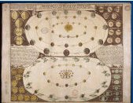
FIGURE XV
("Phaenomena in planetis primaris" - Atlas coelestis. Phaenomena in planetis primariis,
Ioh. Gabriele Doppelmaiero, 1742)Dans ce XIe livre de la Métaphysique, que Bacon est en train de commenter, Aristote expose le système des sphères homocentriques tel que les travaux d'Eudoxe et de Calippe, tel que ses propres raisonnements l'ont constitue. À chaque astre errant, ce système attribue des orbes multiples ; et comme chaque orbe a pour moteur une intelligence séparée, on se trouve conduit à compter un grand nombre de telles intelligences. Bacon ne tient aucun compte de cette énumération. S'il néglige, d'ailleurs, l'œuvre astronomique d'Eudoxe, de Calippe et d'Aristote, ce n'est pas pour s'embarrasser de celle de Ptolémée, qu'il ne paraît pas connaître. Il réduit tout l'ensemble des mouvements célestes à une excessive simplicité ; il n'y considère que le mouvement diurne, d'Orient en Occident, commun à toutes les sphères, et un mouvement d'Occident en Orient propre à chacun des sept orbes inférieurs, porteurs des astres errants. Les raisonnements développés par Aristote au second livre du traité Du Ciel semblent se contenter de cette Astronomie simplifiée ; or, pour commenter le XIe livre de la Métaphysique, Bacon parait avoir surtout lu le traité Du Ciel ; de cet écrit, nous allons trouver des réminiscences en lisant la neuvième question [Ms. cit.,loc. cit.]: Chacun des corps célestes, orbe ou astre, se meut-il de plusieurs mouvements ? L'une des raisons qui suggèrent la réponse affirmative nous rappelle ce que nous ont appris déjà les précédentes questions :
« A plusieurs moteurs correspondent plusieurs mouvements ; or chacun des sept orbes inférieurs a plusieurs moteurs, savoir le moteur commun et un moteur propre, comme on l'a vu ; il aura donc plusieurs mouvements. »
Aussitôt après cette raison, vient la « solution » que voici :
« A cette question, il nous faut répondre que le premier orbe se meut d'un seul mouvement uniforme ; cela provient de la proximité de son moteur, au sein duquel ne se trouve aucune diversité ; en outre, comme cet orbe contient un grand nombre d'étoi-les, il faut qu'il s'assimile à son moteur par un mouvement unique ; il faut donc qu'il n'y ait ici qu'un seul mouvement. Mais chacun des sept orbes inférieurs se meut de plusieurs mouvements, et cela à cause de sa distance au premier moteur ; il s'assimile A ce moteur, par plusieurs mouvements, autant qu'il le peut faire, car une si grande distance ne lui permet pas d'y parvenir à l'aide d'un seul mouvement ; en outre, comme, en chacun de ces orbes, il y a une étoile unique, il y a plusieurs mouvements. »
Ces raisons de convenance sont exactement empruntées au traité Du Ciel d'Aristote [ARISTOTELIS De Caelo lib. II, cap. XII (ARISTOTELIS Opera, éd. Didot, t. II, pp. 401-402 ; éd. Bekker, vol. I, p. 291, col. b; p. 292; p. 293, col. a).]. Elles ont eu le don de plaire aux docteurs du Moyen Âge ; Bacon y revient [Ms. cit., fol. 172, col. a] dans la solution de la douzième question ; et nous verrons, au prochain chapitre, qu'Albert le Grand a pris plaisir à les développer. Peut-être telle locution employée par Bacon dans le passage que nous venons de citer donnerait-elle à penser que notre auteur attribue, à chaque orbe planétaire, plusieurs mouvements propres. La discussion des objections, qui vient aussitôt après, ne tarderait guère à nous détromper. Nous y lisons en effet [Ms. cit., loc. cit.] :
« Par son moteur propre [Au lieu de : proprium, le texte porte : primum.], chaque orbe inférieur est mû d'un mouvement naturel, et d'un autre mouvement par le moteur commun. Par ce mouvement commun, donc, qui provient de l'impulsion du firmament, chaque planète tourne, chaque jour, vers l'Occident et le Couchant ; mais par son mouvement propre, elle va, montant et descendant à travers les Signes, en suivant la disposition des Signes. »
La dixième question est ainsi formulée : Les orbes inférieurs se meuvent-ils d'un mouvement contraire à celui du premier orbe ? Bacon a-t-il déjà connaissance de la théorie d'Alpétragius et va-t-il nous on entretenir à propos de cette question? Voici ce qu'il écrit :
« Sachez, à ce sujet, que l'opinion des mathématiciens est la suivante : Les orbes inférieurs ne se meuvent que par suite du mouvement du premier orbe ; ils n'ont point de mouvements propres ; ils reçoivent l'impulsion qui provient du mouvement du premier mobile ; leurs mouvements sont retardés en raison de l'éloignement et de l'écart entre eux et ce premier orbe. Mais l'opinion d'Aristote le philosophe est que ces orbes se meuvent d'un double mouvement, comme nous l'avons vu, et le mouvement propre de chacun d'eux est en sens contraire du mouvement du premier orbe ; ils se meuvent, en outre, du mouvement commun, qui est le mouvement par lequel le premier orbe les
tire et entraîne tous. »Lorsque la bataille entre partisans du système d'Al Bitrogi et partisans du système de Ptolémée sera dans son plein, c'est à ces derniers qu'on réservera le titre de mathématiciens ; les premiers, comme Al Bitrogi lui-même, se diront physiciens et se réclameront volontiers de l'autorité du Philosophe. Bacon use des mêmes dénominations dans un sens tout opposé ; ce sens est exactement celui où, sur le même sujet, les entendait Chalcidius [Voir : Première partie, Ch. XI, § VII; t. II, p. 161.]. Notre maître ès arts s'est, sans doute, renseigné auprès du Commentateur du Timée bien plutôt qu'auprès d'Alpétragius ; il est vraisemblable qu'il a entendu parler, mais sous une forme extrêmement vague, de la doctrine de ce dernier. De ce qu'il en a ouï dire, le souvenir se retrouve, semble-t-il, au cours des deux dernières questions.
« Là où il y a plus grande influence du moteur, dit la discussion de la onzième question [Ms. cit., loc. cit.], il y a plus grande vitesse dans le mouvement, car le mouvement est déterminé par l'influence du moteur ; mais l'influence du premier moteur est plus grande dans le premier mobile qui est le plus rapproché de lui ; et, semblablement, elle est plus grande dans l'es mobiles les plus voisins, selon l'ordre de proximité. C'est pourquoi l'on demande, en douzième lieu, si le mouvement des orbes et planètes supérieures, tel Saturne, est plus rapide que le mouvement des astres inférieurs, de la Lune par exemple. II semble que oui. En effet, plus un mouvement est rapproché du moteur, plus il est rapide, car l'influence est plus grande de près que de loin ; mais le mouvement des corps supérieurs, de Saturne par exemple, est de cette sorte, car ce corps est plus voisin du premier orbe qui est immédiatement mû par le premier moteur; le mouvement de Saturne est donc le plus rapide, et il en est de même des autres, par ordre. Autre raison dans le même sens... La vertu motrice sera plus grande dans le plus grand orbe, qui est celui de Saturne, et il ensera de même des autres, par ordre. Dès lors, c'est le plus grand orbe qui se mouvra le plus vite. »
Cette dernière raison sent plus l'inspiration de Macrobe [Voir : Première partie, Ch. XI, § VII; t. II, pp. 164-165.] que celle d'Alpétragius ; et l'on peut même se demander si l'auteur latin n'a pas, plutôt que l'auteur arabe, suggéré tout ce qui vient d'être rapporté. Pour commenter la Métaphysique d'Aristote à la Faculté des Arts de Paris, Maître Roger Bacon emprunte peut-être une bonne part de sa Science astronomique aux auteurs que consultaient déjà les écolâtres de Chartres, à Chalcidius et à Macrobe. Aux raisons qui viennent d'être énumérées, notre auteur oppose
les réponses suivantes : Dans le mouvement diurne, tous les orbes ont même vitesse angulaire ; les orbes supérieurs, qui sont les plus grands, décrivent donc en effet, dans un même temps, des chemins plus longs que les orbes inférieurs. Par leurs mouvements propres, au contraire, les orbes planétaires ont une vitesse angulaire d'autant plus grande qu'ils se trouvent situés plus bas et sont plus petits.« Certains prétendent, cependant, que, par leur mouvement propre, toutes les planètes sont d'égale vitesse; mais les orbes inférieurs, à cause de leur petitesse, achèvent plus vite leur révolution. II faut remarquer ceci : De même que le souverain Ouvrier de toutes choses a décoré le premier orbe d'une multitude d'étoiles et d'un seul mouvement, de même a-t-il décoré les orbes inférieurs de plusieurs mouvements et d'un astre unique. En outre, l'ornement qu'il avait conféré aux orbes des planètes supérieures par la grande vitesse du mouvement commun, il l'a compensé, pour les orbes inférieurs, par la vitesse du mouvement propre. »
De nouveau, dans ce passage, nous reconnaissons des pensées issues du traité Du Ciel. Dans sa seconde série de questions sur la Physique d'Aristote, et à propos du huitième livre de cet ouvrage, Bacon trouve occasion de parler de nouveau d'Astronomie et de nous montrer que, depuis le temps où il commentait la Métaphysique, il a enrichi sa connaissance des mouvements célestes. Il semble, tout d'abord, qu'il ait relu la Métaphysique et qu'il ait prêté plus d'attention au chapitre où se trouve décrite l'Astronomie d'Eudoxe, de Calippe et d'Aristote. Il sait maintenant queles sphères homocentriques requièrent, pour les mouvoir, au moins cinquante intelligences [ Ms. cit., fol. 72, col. Il, à propos de celte question : quaeritur qualiter reducit omnes motos ad anum motorem.]. En outre, nous voyons que notre maître ès arts a pris une connaissance exacte du mouvement de précession des équinoxes. Il se plaît à en parler à plusieurs reprises. Il en parle, une première fois, à propos de cette question [Quaeritur de motore cœli conjuncto, cujusmodi est intelligentia, an moveatur. Ms. cit, fol. 72, col. b.] : L'intelligence qui meut un ciel est-elle, elle-même, mobile ? Il écrit à ce sujet :
« Aristote dit que les moteurs des orbes inférieurs se meuvent par accident, c'est-à-dire par suite du mouvement du premier mobile. Or la huitième sphère a, au-dessus d'elle, une autre sphère, la neuvième, qui se meut également ; il semble donc que l'intelligence motrice [de la huitième sphère] soit mue par accident. Que la huitième sphère soit ainsi mue par suite du mouvement d'une sphère plus élevée, c'est prouvé par les astronomes et par d'autres. Le firmament, en effet, par mouvement propre, se meut d'un degré en cent ans ; mais, d'autre part, en un jour naturel, il se meut autour de la Terre, d'Orient en Occident, et cela non par mouvement propre, mais par mouvement d'entraînement ; le ciel des étoiles fixes, en effet, est entraîné par le mouvement de la neuvième sphère, et il entraîne avec lui tous les autres orbes ; »

FIGURE XVI
(Représentation de six systèmes planétaires - Atlas coelestis. Phaenomena circa quantitatem dierum artificialiumet solarium perpetuomutabilem ex hypothesi copernicana deducta, Ioh. Gab. Doppelmaiero, 1742)c'est ce que nous aurons à expliquer plus à plein au second livre Du Ciel et du Monde. Plus loin, Bacon a affaire à l'opinion, si favorablement reçue par Guillaume d'Auvergne, qui, au-dessus de tous les orbes mobiles, requiert un ciel immobile. Parmi les raisons qu'il énonce eu faveur de cette opinion, il en est une qui nous semble bien digne d'intérêt, encore que présentée confusément ; elle reprend, en effet, une supposition que Proclus avait déjà faite [Voir : Première partie, Ch. V, § XVI, t. I, pp. 341-342.], que Campanus de Novare [sur Campanus et sa domification, cf. notre astrologie] soutiendra bientôt : Ce ciel immobile est nécessaire à titre de lieu de l'Univers, de terme auquel se puissent rapporter tous les mouvements. Voici ce qu'écrit Bacon à ce sujet [Ms. cit., fol. 72, col. d et fol. 73, col. a, à propos de cette question : Quaeritur an possit esse aliquod corpus cœleste quod semper quiescat.] :
« Nous percevons le mouvement des planètes à l'aide d'un corps céleste qui se trouve au-dessus des orbes planétaires. Semblablement, donc, puisque nous percevons le mouvement du firmamentou orbe des étoiles fixes, qui se meut d'un degré en cent ans, et cela par mouvement propre, ce mouvement sera perçu à l'aide d'un corps situé plus haut ; ce corps, c'est le neuvième ciel. Mais ce ciel est immobile, comme je le vais prouver. Qu'il soit immobile, cela est évident; s'il se meut, en effet, c'est d'Orient en Occident ou bien en sens contraire ; mais ni l'un ni l'autre n'est vrai ; car Aristote dit, au livre Du Ciel et du Monde, que l'orbe des étoiles fixes se meut en sens contraire des planètes, et, ici, il en dit autant; puis donc qu'il n'y a pas plusieurs orbes qui se meuvent d'Orient en Occident, et qu'excepté ceux des planètes, il n'en est pas qui se meuvent en sens contraire, il faut admettre que ce neuvième orbe est immobile. »
Voici ce que répond Bacon :
« Selon ce qui est touché dans la précédente raison et démontré en Astronomie, il faut supposer un neuvième ciel, et il faut admettre qu'il se meut ; sinon, il existerait en vain, bien que cer-tains le disent immobile...II se meut d'Orient en Orient [par l'Occident], et il entraîne avec lui tous les orbes inférieurs, leur imprimant une révolution en chaque jour naturel. Lorsqu'on veut prouver qu'il n'en est pas ainsi parce qu'Aristote dit que le firmament se meut d'Orient en Orient par l'Occident, répondons : Cela se doit entendre dans le bon sens ; Aristote ne veut pas que le firmament tourne ainsi par mouvement propre, mais par le mouvement du premier mobile, qui est le neuvième ciel; sinon, Aristote, ou, tout au moins, les auteurs de l'Astronomie enseigneraient une erreur. »
Bacon, d'ailleurs, ne croit pas à cet antagonisme entre Aristote et les astronomes, car il invoque [Ms. cit., fol. 73, col. a, à propos de cette question : Quaeritur utrum necesse.sit quod moveantur duplici motu.], à la fois, l'autorité de l'un et l'autorité des autres à l'appui de cette proposition :
« Tous les orbes inférieurs se meuvent d'un double mouvement, un mouvement propre et un mouvement d'entraînement ».
Nous venons d'exposer ce qu'il nous est donné de connaître de la science astronomique de Roger Bacon au temps où, simple maître ès arts, il enseignait à l'Université de Paris. Cette science nous est apparue bien chétive encore et bien pauvre ; mais, déjà, nous avons constaté qu'elle était en voie d'accroissement, que, d'une année à l'autre, le jeune maître s'instruisait plus complètement des mouvements du ciel. Laissons passer quelque vingt ans ; dans l'auteur de l'Opus majus et de l'Opus tertium, nous trouverons un des hommes les mieux informés des choses de l'Astronomie, les plus attentifs aux discussions qui mettent aux prises les savants de son temps. Mais alors, Bacon portera la bure de Saint François ; il aura vécu à Oxford et là, comme les frères mineurs d'Angleterre, plus qu'aucun d'entre eux, il se sera pleinement instruit en lisant les écrits de Robert Grosse-Teste, évêque de Lincoln.
Nous avons déjà entendu [Voir : Seconde partie, Ch. V, §5 ; ce tome, pp. 260-277] l'enseignement de Roger Bacon, alors que, simple maître es arts, il commentait, à l'Université de Paris, la Physique et la Métaphysique d'Aristote ; cet enseignement nous a semblé fort pauvre de connaissances astronomiques, presque aussi pauvre que celui d'Alexandre de Hales ou que celui de Saint Bonaventure. Le Bacon dont nous allons maintenant lire les œuvres a, des des choses du ciel, une science tout autrement profonde et étendue. C'est qu'il est allé à Oxford revêtir la bure des Mineurs, et que, dans leur couvent, il a trouvé les études en pleine floraison, grâce à l'influence de deux hommes dont, bien souvent, ses louanges uniront les noms : Robert Grosse-Tête, évoque de Lincoln, et frère Adam de Marsh. La lecture des opuscules de ces deux savants a révélé à Roger Bacon les principes de l'Astronomie ; elle l'a initié à cette science ou ses études ultérieures lui feront accomplir d'incessants et rapides progrès. Constamment occupé par la solution d'un certain nombre de problèmes, Roger Bacon se hâte de faire connaître au pape, lorsqu'il ne peut la rendre publique, la solution qu'il pense avoir trouvée de chacun de ces problèmes ; mais tout aussitôt, à son intelligence toujours désireuse de plus de clarté, de plus d'unité, cette solution semble imparfaite ; il la reprend alors pour la rendre plus complète, pour la mieux relier aux solutions des autres problèmes qui hantent sa pensée ; aussi, en chacun des écrits que son inlassable activité et son inépuisable fécondité précipitent les uns sur les autres, reprend-il, pour les retoucher, les perfectionner, les transformer, les exposés qu'il avait donnés dans ses écrits précédents. Pour suivre l'évolution de cette pensée toujours en travail et toujours en progrès, il nous faut examiner successivement, et dans l'ordre même où ils ont été produits, les divers ouvrages où elle est venue se fixer pour un bref moment. Roger Bacon est un fidèle disciple de Robert Grosse-Teste [et de Pierre de Maricourt, cf. note 34 du Miroir d'Alchimie] ; dans ses écris, il cite fréquemment le nom de ce maître, en l'accompagnant des éloges les plus flatteurs; on ne saurait donc s'étonner de reconnaître, dans la pensée de Bacon, la marque laissée par l'influence de l'Évêque de Lincoln. En fait, bon nombre des théories que Bacon développe avec le plus de complaisance, la théorie des marées, par exemple, ou la théorie de multiplicatione specierum, se trouvent en germe dans les Opuscules de Grosse-Teste [Voir à ce sujet : LUDWIG BAUR, Der Einfluss der Robert Grosseteste auf die Wissenschaftliche Richtung des Roger Bacon (Roger Bacon, Essays contributed by Various Writers on the Occasion of the Commemoration of the Seventh Centenary of his Birth. Collected and Edited by A. G. Little. Oxford, at the Clarendon Press, 1914, pp. 34-54).]. La réforme du calendrier avait vivement préoccupé Robert Grosse-Teste ; il avait, nous l'avons dit, composé un traité du calendrier, De compoto. De compoto est également le titre d'un ouvrage de Roger Bacon, le plus ancien que nous connaissions. Malheureusement, ce traité, conservé en manuscrit à la Royal Library du British Museum est, jusqu'ici, demeuré inédit ; seuls, le préambule et la table des chapitres ont, été reproduits par Emile Charles dans sa thèse sur Roger Bacon [EMILE CHARLES, Roger Bacon, sa vie, ses ouvrages, ses doctrines, d'après des textes inédits ; thèse de Paris. Bordeaux, 1861, pp. 336-337.]. En outre, Emile Charles a cité [ EMILE CHARLES, Op. laud., p. 78.] une phrase extraite du corps de l'ouvrage ; cette phrase est la suivante :
« De notre temps, c'est-à-dire quatre cent quatre-vingts ans après la découverte de Thébith et l'an de l'Incarnation 1263, nous adhérons à cette opinion ».
Cette phrase est précieuse ; d'abord, elle nous fait connaître l'année, 1263, où Bacon écrivit son traité De compoto ; puis elle nous apprend qu'à l'exemple de Robert Grosse-Teste, Bacon connaissait et adoptait la théorie de la précession des équinoxes proposée par Thâbit ben Kourrah. La réforme du calendrier ne cessera d'être l'objet de l'une des des plus vives préoccupations de Bacon. En son Opus majus [Fratris ROGERI BACON, Ordinis Minorum, Opus majus ad Clementem quartum, Pontificem, Romamun, ex MS. Codice Dublniensi, cum aliis quibusquam collato, nunc primum edidit S. Jebb., M. D., Londini. typis Gulielmi Bowyer, MDCCXXXIII. — The Opus majus of ROGER BACON edited with Introduction and Analytical Table by John Henry Bridges, London, Edimburgh and Oxford, 1900.], qui fut composé à Paris, au plus tard en 1267 [ ROGERI BACON Opus majus, éd. Jebb., praefatio; éd. Jebb., p. 177, en note ; éd. Bridges, p. 281. — EMILE CHARLES, Op. laud., p. 79.], et que nous allons analyser, il presse vivement le pape Clément IV d'accomplir cette urgente transformation ; il réitérera ses instances dans l'Opus tertium [FR. ROGERI BACON Opera quaedam hactenus inedita. Vol. 1 contained : I. Opus tertium. II. Opus minus. III. Compendium philosophiae. Edited by J. S. Brewer. London, 1859.] qu'il date lui-même de l'année 1267 [ROGERI BACON Opus tertium., cap. LXX; éd. Brewer, p. 289 et p. 290.]. Le problème de la réforme du calendrier ne peut être résolu si l'on ne connaît la loi de procession des équinoxes ; Roger Bacon se montre donc, comme Robert Grosse-Teste, vivement préoccupé de la théorie de ce mouvement ; mais, pas plus que son maître, il ne parait avoir arrêté son choix sur l'une des formes que cette théorie avait successivement revêtues. Parfois, nous le voyons admettre [ROGERI BACON Opus rnajus, éd. Jebb, p. 112; éd. Bridges, vol. I, p. 181.], avec Ptolémée, que la sphère des étoiles fixes accomplit une révolution complète en 36000 ans. Ailleurs [ROGERI BACON Opus majus, éd. Jebb, p. 173; éd. Bridges,, vol. I, p. 275], il suppose que l'équinoxe avance seulement d'un jour en cent-vingt ans ;
« c'est », ajoute-t-il, « l'opinion qui semble, de nos jours, la mieux prouvée ».
Il connaît, aussi, le mouvement oscillant que Thâbit ben Kourrah a proposé de substituer au mouvement de précession imaginé par Hipparque et Ptolémée ; en faveur du système de Thâbit, il donne [ ROGERI BACON Opus majus, éd. Jebb, p. 120 ; éd. Bridges, vol. 1, p. 192] même un argument dont nous reparlerons tout à l'heure. Il parait ignorer, d'ailleurs, que certains astronomes aient proposé d'admettre simultanément le mouvement de précession et le mouvement de trépidation. Par deux fois [ROGERI BACON Opus majus, éd. Jebb, p. 123 et p. 187 ; éd. Bridges, vol. 1, p. 195 et p. 298.], il cite les Tables de Tolède où, conformément aux doctrines de Thâbit et d'Al Zarkali, le mouvement de trépidation est le seul qui se compose avec le mouvement diurne pour déterminer le déplacement des étoiles ; mais, il ne semble pas connaître l'hypothèse admise par les Tables Alphonsines, qui font coexister le mouvement de trépidation avec le mouvement de précession admis par Hipparque et par Ptolémée. La sphère des étoiles fixes n'est donc animée que de deux mouvements, savoir le mouvement diurne et un autre mouvement très lent ; celui-ci est ou bien le mouvement de précession admis par Hipparque, Ptolémée et Albatégni, ou bien le mouvement de trépidation imaginé par Thâbit et Al Zarkali. Partant, au-dessus de la huitième sphère, qui porte les étoiles, Bacon n'a besoin d'admettre qu'une seule sphère mobile, la neuvième. A la vérité, il parle d'une dixième sphère [ROGERI BACON Opus majus, éd. Jebb, p. 144 ; éd. Bridges, vol. I, p. 229.]. Mais il nous rappelle [ROGERI BACON Opus majus, éd Jebb, pp. 112-113; éd. Bridges, vol. I, pp. 181-182] que
« les théologiens, aux Livres des Sentences et dans leurs traités sur les Livres des Sentences, s'inquiètent de savoir si les cieux sont continus ou discontinus, quel en est le nombre, surtout à cause du neuvième ciel et du dixième. ».
Lors donc que Bacon compte un dixième ciel, c'est assurément, à l'imitation de plusieurs commentateurs des Livres des Sentences, d'un ciel immobile qu'il entend parler. Comment convient-il de représenter le mouvement des planètes ? Faut-il recevoir les excentriques et les épicycles de l'Almageste ? Avec Averroès et Alpétragius, faut-il les rejeter et n'admettre que des sphères célestes homocentriques ? Bacon n'ignore pas le différend qui s'est élevé, à ce sujet, entre les philosophes et les mathématiciens ; il sait [ ROGERI BACON Opus majus, édit. Jebb, pp. 112-113 ; éd. Bridges, vol. 1, p., 181 , — Cf. : Opus tertium, cap. LIII, édit. Brewer, p. 200.] qu'en leurs commentaires aux Livres des Sentences, les théologiens ont coutume d'examiner s'il y a des excentriques et des épicycles ; mais il ne paraît pas qu'en cette dispute, il ait pris parti ; il semble bien plutôt qu'il se soit laissé porter tantôt vers l'une des solutions proposées, tantôt vers l'autre, au gré d'une fantaisie variable du jour au lendemain. Certains passages de l'Opus majus semblent dictés par une absolue confiance au système de Ptolémée. Nous l'entendons, par exemple, déclarer [ROGERI BACON Opus majus, édit. Jebb, p. 238 ; éd. Bridges, vol. I. p. 878.]
« que les actions des planètes varient beaucoup par l'effet des excentriques et des épicycles ».
Ces planètes agissent plus fortement lorsqu'elles sont à l'apogée que lorsqu'elles sont au périgée car, dans le premier cas, leur course diurne est plus étendue et plus rapide que dans le second.
« Lorsque la Lune est à l'apogée [ROGERI BACON Opus majus, édit. Jebb, p. 245 ; éd. Bridges. vol. 1, p. 388.], comme il arrive en la nouvelle-lune et en la pleine-lune, ses opérations sont plus puissantes, comme les marées et la chair des poissons permettent de le constater. ».
La considération des apogées des planètes joue, en Astrologie, un rôle essentiel [ROGERI BACON Opus majus, édit. Jebb, p. 240 ; éd. Bridges, vol. I, pp. 387-388.]. Ailleurs, il parle [ROGERI BACON Opus majus, édit. Jebb, p. 162 ; éd. Bridges, vol. I, p. 267.] de la théorie compliquée des mouvements de Mercure.
« Les mouvements de Mercure sont difficiles ; il tourne à la fois dans son épicycle, dans son excentrique et dans son équant...Ce sont les plus étonnants et les plus difficiles des mouvements planétaires, comme on le voit par ce qu'en dit Ptolémée, mieux encore par les sentences d'Albatégni, de Thébit, d'Archasel (AI Zarkali), et plus probablement par les dires d'Alfragan (Al Fergani) ».
Al errgani est, d'ailleurs, l'auteur auquel Bacon emprunte, à peu près textuellement, tout ce qu'il dit [ROGERI BACON Opus majus, édit. Jebb, pp. 143-144, éd. Bridges, vol. I, pp. 227-229] des dimensions des divers orbes. Comme Al Fergani, il attribue à chaque planète un orbe compris entre deux sphères concentriques au Monde ; l'une de ces sphères a pour rayon la distance de l'apogée de la planète au centre de l'Univers ; l'autre a pour rayon l'écart entre ce même centre et le périgée de la planète. Chaque orbe est immédiatement contigu à l'orbe de la planète précédente et à l'orbe de la planète suivante. A côté de ces passages de l'Opus majus où Roger Bacon s'exprime en disciple de Ptolémée et de ses commentateurs arabes, il en est qui semblent écrits par un partisan du système des sphères homocentriques. Il y a plus ; l'autorité de Ptolémée et celle de ses adversaires acharnés, Averroès et Al Bitrogi, sont invoquées dans un même passage
[ROGERI BACON 0pus majus, Pars sexta hujus persuasionis et etiam sexut pars Majoris Operis. De scientia experimentali; Capitulum de secunda prerogativa scientiae experimentalis ; exemplum 1 ; édit.. Jebb, p. 465 ; éd. Bridges, vol. Il, pp. 202-203. — Cf. : Epistola FRATRIS ROGERI BACONIS de secretis operibus artis et naturae et de nullitate magiae ; Cap. VI : De experimentis mirabilibus ; éd. Brevver, p. 537.],
et presque dans une même phrase ; il s'agit, il est vrai, d'un bien étrange projet :
« Les Mathématiques peuvent construire un astrolabe sphérique dans lequel se trouve décrit tout ce que l'homme a besoin de connaître des phénomènes célestes, où les cercles et les étoiles occupent des positions exactes tant en longitude qu'en latitude ; il suffit de suivre l'artifice indiqué par Ptolémée au huitième livre de l'Almageste ; je veux dire par un artifice semblable, et non tout à fait par ce procédé-là, car il y faut un peu plus de soin. Mais qu'un tel instrument se meuve par l'effet du mouvement diurne, voilà qui n'est plus au pouvoir de la Mathématique. Cependant, l'expérimentateur parfait peut rechercher les moyens de produire un tel mouvement; il est poussé vers cette recherche par une foule d'objets qui suivent le mouvement des corps célestes. Tels sont, en premier lieu, les trois éléments, qui sont animés d'un mouvement de rotation engendré par l'influence céleste, selon l'enseignement d'Alpharagius (Alpétragius), dans son livre des mouvements célestes, et d'Averroès au premier livre Du Ciel et du Monde. »
L'indécision entre les divers systèmes qui se partagent les esprits des doctes, l'acceptation successive ou simultanée de chacun d'eux nous paraissent caractériser, dans l'Opus majus, l'œuvre astronomique de Roger Bacon. Nous aurons un exemple de cette attitude hésitante qui, d'un problème posé, imagine des solutions variées, mais qui ne sait se fixer à aucune d'entre elles, en étudiant les réponses multiples que le célèbre Franciscain donne à cette question : L'homme peut-il vivre entre les tropiques et dans l'hémisphère austral ? La région comprise entre les tropiques est inhabitable par excès de chaleur ; tout lieu situé en cette région de la Terre voit, deux fois l'an, le Soleil passer à son zénith ; la chaleur produite par le Soleil est alors extrêmement forte, parce que les rayons réfléchis ont même direction que les rayons incidents. D'autre part, le cercle décrit annuellement par le Soleil étant excentrique à la Terre, il se trouve que l'hémisphère boréal jouit d'un climat beaucoup plus tempéré que l'hémisphère austral ; l'été de l'hémisphère boréal correspond, en effet, au temps où le Soleil est le plus éloigné de la Terre, et l'hiver au temps où il en est le plus rapproché ; au contraire, le Soleil est au périgée pendant l'été des régions australes et à l'apogée pendant l'hiver de ces régions.

FIGURE XVII
("Phaenomena motuum irregularium. .." - Atlas coelestis. Phaenomena motum irregularium, Ioh. Gabriele Doppelmaiero, 1742 )
Tel était l'enseignement que Ptolémée donnait en sa Géographie. D'autres, il est vrai, ne partageaient pas cet avis ; Avicenne, par exemple, affirmait que la zone comprise entre les tropiques jouissait d'un climat tempéré, et certains théologiens allaient jusqu'à prétendre que le Paradis terrestre se trouvait en cette région.
Robert Grosse-Teste partageait l'opinion de Ptolémée [Revendissimi Episcopi ROBERTI LINCONIENSIS Sphœrœ compendium, cap. IV.].« De cette élévation du Soleil, disait-il, il résulte que la région située au delà de l'équateur est inhabitable. Le Soleil, en effet, est de 5° plus proche de la Terre lorsqu'il se trouve à l'opposé de l'aux (au périgée) que lorsqu'il se trouve à l'aux. Lors donc que le Soleil parcourt les signes méridionaux du Zodiaque, il est beaucoup plus voisin de la Terre et, en même temps, il se trouve verticalement au-dessus des régions australes; ces deux causes réunies doublent la chaleur de l'été en ces régions. Au contraire, lorsque le Soleil traverse les signes septentrionaux du Zodiaque, il s'écarte du zénith des régions australes et, en même temps, il s'éloigne de la Terre ; d'où résulte une double cause de froid pour ces régions. Inversement, quand le Soleil approche du zénith qui se trouve au-dessus de notre tête, il s'éloigne de la Terre ; quand il s'écarte de notre zénith, il s'approche de la Terre. Il en résulte que l'hémisphère boréal jouit d'un climat tempéré, tandis que l'hémisphère austral a des saisons extrêmes. »
Ces considérations, empruntées à la Géographie de Ptolémée, fournissent à Robert de Lincoln une objection [ROBERTI LINCONIENSIS, Op. laud., cap. V.] contre le mouvement de précession des équinoxes tel qu'il est défini dans l'Almageste :
« Selon cette méthode de Ptolémée, il arriverait que l'aux (apogée) du Soleil, qui est actuellement dans les signes septentrionaux du Zodiaque, finirait par atteindre les signes méridionaux; alors, la région actuellement habitée deviendrait inhabitable. »
Aussitôt après cette remarque, que Bernard de Trille reproduira [Vide supra, pp. 379-380], Robert de Lincoln expose le système de Thâbit ben Kourrah ; il semble, bien qu'il n'en dise rien, qu'il préfère ce système à celui de Ptolémée, parce qu'il écarte cette prophétie menaçante pour les régions actuellement habitées. Cette pensée demeure implicite en l'écrit de Robert Grosse-Teste ; nous allons la voir explicitée par son disciple Roger Bacon. Avec Avicenne, Roger Bacon veut [ROGERI BACON Opus majus, Pars quarta hujus persuasionis, distinctio quarta, cap. IV ; éd. Jebb, p. 83 ; éd. Bridges, vol. I, pp. 136-137. —Cf. Opus tertium. cap. XXXVII; édit. Brewer, pp. 119-120.] que la zone comprise entre les tropiques jouisse d'un climat tempéré ;
« mais, ajoute-t-il, je ne comprends pas, jusqu'ici, que cette zone soit très tempérée ; aussi n'est-il pas assuré que le Paradis se trouve en cette région. En effet, si l'excentricité du cercle du Soleil est disposée comme le disent les mathématiciens, il est impossible qu'il se trouve au-dessous de l'équateur un climat purement tempéré ; car le point de l'excentrique qu'on nomme l'opposé de l'aux s'approche de la Terre, plus que Vaux ne s'en approche, d'une quantité égale au cinquième du rayon de l'excentrique ; lors donc que le Soleil vient à l'opposé de l'aux, il brûle la région de la Terre qui se trouve au-dessous de lui, de telle sorte que rien n'y puisse vivre ».
En revanche [ROGERI BACON Opas majus, édit. Jebb, p. 185 ; éd. Bridges, vol. I, P. 294.], cette ardeur du Soleil dans l'hémisphère austral doit y déterminer une plus grande rareté des mers qu'en l'hémisphère boréal ; il est vrai que la grande extension de la terre ferme en l'hémisphère austral demeurerait justifiée lors même qu'on n'attribuerait pas d'excentrique au Soleil, car Averroès nous enseigne, au premier livre Du Ciel et du Monde, qu'il se trouve, en cet hémisphère, de plus nobles étoiles ; l'influence de ces étoiles suffirait à maintenir les continents. L'opinion de Pline et d'Avicenne, qui placent des régions tempérées au sud de l'équinoxe, plaît fort à Roger Bacon, et il paraît vivement préoccupé des objections que les astronomes élèvent à l'encontre de cette opinion, au nom du système de Ptolémée ; il revient encore [ROGERI BACON Opus majus, édit. Jebb, pp. 192.393 ; éd. Bridges, vol. I, pp. 306-307] à l'examen de ces objections :
« Si le Soleil a un excentrique, il y aura, sur la Terre, du moins quant à la disposition du Ciel, des lieux qui seront inhabitables, par excès de chaleur, lorsque le Soleil se trouvera aux signes du Sagittaire et du Capricorne ; alors, en effet, le Soleil se trouve plus voisin de la Terre, ses trajectoires diurnes successives se confondent sensiblement les unes avec les autres, et les rayons solaires tombent à angle droit. Il y aura aussi des lieux qui seront inhabitables, par excès de froid, lorsque le Soleil se trouvera aux signes des Gémeaux et du Cancer, car le Soleil est alors éloigné et ses rayons tombent très obliquement. Toutefois, en ces premières régions même, il peut se trouver des pays habitables au moment où le Soleil est au périgée, grâce à certaines dispositions accidentelles de ces pays, telles que de hautes montagnes mettant obstacle à la chaleur du Soleil ou d'autres raisons analogues ; en particulier, les lieux souterrains pourront être habitables. D'autre part, dans les secondes régions, il peut se trouver certains pays qui soient plats du côté du Soleil, tandis qu'il se trouve derrière eux des montagnes très lisses et figurées comme des miroirs ardents ; malgré le froid, ces pays-là pourront être habitables alors que le Soleil est à l'apogée...Si nous attribuons au Soleil non pas un excentrique, mais undéférent concentrique avec un épicycle — Ptolémée dit, dansl'AImageste, que cela est possible — il devient facile d'expliquer que l'hémisphère austral soit habitable ; dans ce cas, en effet,le Soleil ne s'approche pas assez de la Terre pour brûler tout cequi se trouve sous le tropique austral, et il ne s'en éloigne pasassez pour la rendre inhabitable par excès de froid. Si nous n'admettons ni excentrique ni épicycle, ainsi que le proposent les physiciens (naturales), l'habitabilité des régions australes ne présente plus aucun inconvénient. »
Nous voyons Roger Bacon hésiter, dans ce passage, non seulement entre les diverses hypothèses proposées par l'Almageste, mais encore entre le système de Ptolémée et le système des sphères homocentriques. Ailleurs [ROGERI BACON Opus majus, éd. Jebb, p. 120 - éd. Bridges, vol. 1. p. 192.], nous le voyons reprendre l'objection de Robert Grosse-Teste contre le mouvement de précession des équinoxes admis par Hipparque et Ptolémée :
« L'aux du Soleil se déplacerait d'un mouvement semblable à celui des planètes, à. savoir selon l'ordre des signes du Zodiaque, et en sens contraire du mouvement diurne. Mais cela ne peut être, car les régions habitables, au-dessus desquelles se trouve l'aux (apogée), deviendraient inhabitables dans la suite des temps, alors que l'opposé de l'aux viendrait se placer au-dessus d'elles ; et au contraire, les contrées inhabitables deviendraient habitables ; cela est absurde. Il faut donc admettre que l'aux se meut, il est vrai, par suite du mouvement du ciel des étoiles fixes, mais que ce mouvement n'est point celui qui vient d'être imaginé. Ce mouvement est celui qu'ont admis les Indiens et Thébit ; il consiste en un mouvement alternatif de descente et d'ascension des pôles du ciel des étoiles fixes,
ou bien encore en deux petits mouvements circulaires que la tête du Bélier et la tête de la Balance du ciel des étoiles effectuent respectivement autour de la tête fixe du Bélier et de la tête fixe de la Balance, qui sont deux points du neuvième ciel. Par ce même mouvement, les têtes du Cancer et du Capricorne se meuvent alternativement en avant et en arrière, vers l'Orient, puis vers l'Occident, sur la circonférence de l'écliptique immobile. C'est ce qu'on voit dans le système imaginé par Thébit ; celui-ci, suivant les avis des Indiens, a complété, en cette partie, l'œuvre de Ptolémée. Tel est donc le mouvement que Thébit attribue à la huitième sphère. Azarchel, dans ses canons et dans ses tables, partage son avis, et aussi Albumasar, dans son livre Des grandes conjonctions ; tous les astronomes, aujourd'hui, en usent de même. Mais, de la sorte, ils attribuent à Vaux solaire un mouvement qui est alternativement direct et rétrograde ; il ne dépasse pas le signe des Gémeaux, en sorte qu'il ne fait pas le tour de la Terre et que l'opposé de Vaux ne se trouve jamais au-dessus des régions actuellement habitables. »

FIGURE XVIII
("Ephemerides motuum coelestium geometrica..." - Atlas coelestis. Ephemerides motum coelestium geometricae , Ioh. Gabriele Doppelmaiero, 1742 )
V. L'Opus minus DE ROGER BACON
Au cours de l'Opus majus, la pensée de Bacon nous est apparue singulièrement flottante ; ballotée entre les deux doctrines incompatibles qui se partagent, à ce moment, les préférences des astronomes et des physiciens, elle se laisse porter tantôt vers l'une et tantôt vers l'autre ; parfois même, par un étrange éclectisme, elle semble les accueillir toutes deux à la fois, en dépit des contradictions qui les opposent l'une à l'autre. Si l'Opus majus témoigne de l'hésitation où Bacon se trouvait entre le système de Ptolémée et le système d'Al Bitrogi, il ne nous montre aucune discussion systématique par laquelle le savant Franciscain ait tenté de faire un choix raisonné. A peine Bacon avait-il envoyé l'Opus majus à Clément IV qu'il reprenait la plume pour rédiger une seconde lettre, également adressée au pape, qui complétât la première ; cette seconde lettre fut l'Opus minus. L'Opus minus est, aujourd'hui, pcesque entièrement perdu ; on n'en possède d'une manière certaine qu'un fragment peu étendu qui a été publié, en 1859, par J. S. Brewer [ Fr. ROGERI BACON Opera quaedam hactenus inedita. Vol. 1 contained : Opus tertium. II. Opus minus. III. Compendium philosophiae. Edited by J. S. Brewer, London, 1859.] ; et ce fragment ne contient rien qui concerne les théories astronomiques. Cependant, l'Opus minus contenait des développements étendus sur l'Astronomie et, aussi, sur l'Astrologie ; c'est Bacon lui-même qui nous l'apprend dans un écrit composé ultérieurement, l'Opus tertium ; résumant, dans cet ouvrage, le contenu de l'Opus minus, il dit : [Bibliothèque Nationale, fonds latin, ms. n0 10264, fol. 221, v0. — Un fragment inédit de l'Opus tertium de ROGER BACON, précédé d'une étude sur ce fragment, par PIERRE DUHEM. Ad Claras Aquas (Quaracchi), 1909 ; p. 180.]
« En énumérant, [dans l'Opus minus], les diverses parties de l'Opus majus, j'ai inséré, dans la partie mathématique, beaucoup de choses touchant la connaissance des corps célestes ; elles y sont considérées soit en elles-mêmes, soit dans leurs rapports avec les choses inférieures qui sont engendrées par leurs vertus, selon les diverses régions et, en une même région, dans des temps dif-férents ; c'est un de mes écrits les plus importants (et hoc est unum de majoribus quae scripsi) ».
Il serait bien intéressant, pour notre objet, de connaître ce traité De caelestibus qui se trouvait inséré dans l'Opus minus et, en particulier, ce que Bacon y pouvait dire des systèmes astronomiques. Or, nous croyons avoir retrouvé le fragment de ce traité où les théories d'Alpétragius et de Ptolémée étaient comparées l'une à l'autre ; nous allons dire comment. A titre de couronnement de ses travaux, Bacon avait écrit, ou commencé d'écrire, un vaste ouvrage où il se proposait d'exposer les principes généraux de la Physique ; Communia naturalium est le titre que le savant Franciscain donnait à cet ouvrage. Divers manuscrits nous ont conservé un fragment très étendu de ce traité de Physique [Entre autres le ms. 3576 de la Bibliothèque Mazarine, qui est celui que nous avons consulté. — Depuis ce moment, les Communia naturalium ont été publiés par M. Robert Steele. La partie de cette publication qui nous intéresse ici est la suivante : Opera hactenus inédita ROGERI BACONI. Fasc. IV. Liber secandus communium naturalium FRATRIS ROGERI. De celestibus. Partes quinque edidit Robert Steele. Oxonii, MCMXIII.] ; peut-être même nous en gardent-ils tout ce que Bacon en avait rédigé. Pour composer cet ample exposé de la Physique, Bacon se servait, cela va de soi, de ses écrits antérieurs ; il en reprenait les diverses parties qu'il modifiait, résumait ou étendait jusqu'à ce qu'elles lui parussent aptes à prendre place en l'ouvrage qu'il avait conçu. C'est ainsi qu'en l'appareil du premier livre des Communia naturalium, nous reconnaissons maint fragment, plus ou moins retaillé de l'Opus majus. Les matériaux fournis par l'Opus tertium ont été, plus immédiatement encore, employés à la construction du nouvel édifice ; parfois, ils portent encore la marque de leur première origine en des phrases telles que celles-ci : « In hoc Opere tertio ». Avant que ne fût connue la partie de l'Opus tertium a laquelle ces fragments ont été empruntés, ces indices si nets avaient pu induire en erreur un érudit comme Emile Charles, et lui faire prendre les Communia naturalium pour un débris de l'Opus tertium. Ce procédé de composition des Communia naturalium, qui en fait une sorte de mosaïque de chapitres empruntés plus ou moins textuellement aux anciens écrits de Bacon, est particulièrement net en la partie qui termine l'ouvrage ou, pour parler plus exactement, qui termine ce que le manuscrit de la Bibliothèque Mazarine conserve de cet ouvrage ; nous voulons parler de la cinquième partie du second livre. Au début du premier chapitre de cette cinquième partie, l'auteur nous annonce [Bibliothèque Mazarine, ms. 3576, fol. 120, coll. a et b. — Éd. Steele, p. 414.] qu'il va traiter
« de la grandeur, de la hauteur et de l'épaisseur des corps célestes (de magnitudine et altitudine et spissitudine cœlestium) ».
Naturellement, il consacre son premier chapitre à exposer, d'après Al Fergani, ce qu'on sait de la grandeur de la Terre. Or ce premier chapitre commence par un extrait, textuellement reproduit, de l'Opus majus, et continue par une paraphrase, un peu plus détaillée que l'original, de ce même traité. Bacon nous annonçait, au début de ce premier chapitre, qu'il se proposait d'étudier la grandeur, la hauteur et l'épaisseur des corps célestes ; visiblement, son intention était d'exposer la théorie qu'il a donnée dans l'Opus majus d'après le traité d'Al Fergani. Mais cette théorie repose sur l'emploi du système des excentriques et des épicycles tel qu'il est développé dans l'Almageste...Il est donc naturel qu'avant d'aborder la mesure des dimensions des diverses sphères célestes, Bacon présente les principes de la doctrine de Ptolémée et examine la valeur des raisons qu'on peut invoquer
pour ou contre ces principes. C'est, en effet, l'objet des chapitres II à XVI de la cinquième partie du De caelestibus. Ces quinze chapitres exposent le débat pendant entre le système de Ptolémée et le système d'Al Bitrogi sous la forme la plus complète, la plus détaillée, la mieux renseignée qu'aucun docteur scolastique lui ait jamais donnée. Or cette discussion, que nous résumerons au prochain paragraphe, est textuellement extraite de l'Opus tertium. La cinquième partie de la dissertion De caelestibus, qui forme le livre II des Communia naturalium, nous a donc présenté, en premier lieu, un chapitre où la mesure de la Terre était traitée d'après l'Opus majus, puis quinze chapitres, textuellement tirés de l'Opus tertium, où le système de Ptolémée était exposé et discuté ; si Bacon était fidèle au plan qu'il a tracé en commençant cette dissertation, il devrait aborder maintenant la détermination des grandeurs des orbes célestes. A la place où nous nous attendions à rencontrer cette détermination, nous trouvons trois chapitres qui terminent le texte manuscrit conservé à la Bibliothèque Mazarine. Ces trois chapitres font double emploi avec les quinze chapitres qui les précèdent, et cela de la manière la plus flagrante. Ils contiennent, en effet, une exposition du système de Ptolémée, une comparaison de ce système avec le système d'Al Bitrogi, un résumé de la théorie du mouvement de la huitième sphère proposée par Thâbit ben Kourrah, toutes choses dont Bacon avait traité dans l'Opus tertium, toutes choses auxquelles il avait consacré les quinze chapitres déjà reproduits par les Communia naturalium. Si, d'ailleurs, ces sujets déjà examinés aux chapitres II à XVI sont repris par les chapitres XVII, XVIII et XIX, ce n'est pas que Bacon ait voulu compléter par ceux-ci ce qu'il avait déjà dit en ceux-là. Sans doute, le chapitre XIX donne, du système de la trépidation, une analyse plus circonstanciée que celle du chapitre VI ; mais le résumé du système de Ptolémée, que fournit le chapitre XVII, est notablement moins complet que l'exposition du même système donnée aux chapitres II à V. C'en serait assez déjà pour nous autoriser à croire que les trois derniers chapitres du texte manuscrit de la Bibliothèque Mazarine n'ont pas été rédigés par Bacon pour être mis à la place où ils se trouvent. Une autre circonstance accroît encore notre confiance en cette opinion. Au chapitre XVII, l'auteur s'excuse [Bibliothèque Mazarine, ms. n° 3.576, fol. 130, col. a. — Éd. Steele, p. 445] de ne pas reproduire la théorie d'Alpétragius ; il renvoie le lecteur à l'étude de l'ouvrage de cet astronome :« Objecta igitur per radices Averrois et Alpetragii solvi debent, et lectorem praesentium ad sentenciaseorum transmitto, et praecipae ad librum Alpetragii, propter copiam sermonis quem ego hic non, possem brevitate qua tunc competit explicare. Quod si hic fieret, oporteret librum ejus hic inseri, quod non decet ».
Or la dissertation qui a passé de l'Opus tertium aux Communia naturalium renferme un exposé assez détaillé dela doctrine d'Al Bitrogi ; cet exposé remplit les chapitres VII, VIII,IX et X de la cinquième partie du De caelestibus ; à lire le texteconservé par la Bibliothèque Mazarine, on croirait que l'auteuravait oublié ces quatre chapitres alors qu'il rédigeait le chapitre XVII. Il est visible donc que les trois derniers chapitres des Communia naturalium, tels que nous les présente le Codex Mazarineus, n'ont pas été rédigés par Bacon pour être insérés dans l'ouvrage où nous les rencontrons. Qu'ils soient, d'ailleurs, de Bacon, nous ne saurions le mettre en doute; nous y trouvons, de la manière la plus nette, les caractères, si aisément reconnaissables, du style de cet auteur. Nous sommes donc amenés à conclure que ces trois chapitres sont un débris de quelque ouvrage composé par Bacon avant les Communia naturalium, et que la similitude des sujets traités a pressé l'auteur ou le copiste d'accoler ce fragment à la dissertation extraite de l'Opus tertium. Ce fragment nous semble, d'ailleurs, plus ancien que la belle dissertation de l'Opus tertium, dont il paraît être comme un premier essai, encore incomplet. Dès lors, il semble assez naturel de croire qu'il provient du traité De caelestibus que Bacon, nous en avons l'assurance, avait inséré dans l'Opus minus
[M. A. G. Little pense que ce fragment n'appartenait pas à l'Opus minus, mais qu'il est un premier essai de rédaction de la discussion dont nous trouverons, en l'Opus tertium, la forme définitive. Cette hypothèse, aussi plausible que celle que nous avons émise, a, avec celle-ci, une conséquence commune ; elle place la rédaction de ce fragment, entre celle de l'Opus majus et celle de l'Opus tertium (BRITISH SOCIETY OF FBANCISCAN STUDIES Vol. IV. Part of the Opus Tertium of ROGER BACON including a Fragment now Printed for the First Time. Edited by A. G. LITTLE. Aberdeen : The University Press. 1912. Introduction, p. XXII). Cette conséquence est tout ce qui nous importe ici.].
Le XVIIe chapitre de la cinquième partie du traité De caelestibus que renferment les Communia naturalium est, nous l'avons dit, le premier chapitre du fragment que nous nous proposons d'étudier ; il commence en ces termes : [Ms. cit., fol. 130, coll. a et b. Éd. Steele, pp. 443-444.]
« Bien qu'il se présente ici une autre difficulté (et licet ista habeant difficultatem aliam), ceux qui visent à détruire les épicycles et les excentriques disent qu'il vaut mieux sauver l'ordre de la Nature et contredire au jugement des sens, qui se trouve souvent en défaut, surtout par l'effet de la grande distance ; il vaut mieux, disent-ils, faire défaut dans la solution de quelque sophisme difficile que de faire sciemment des suppositions contraires à la Nature. Car Aristote dit que les sages sont parfois en défaut lorqu'il leur faut résoudre certaines subtilités de Physique. Aussi Averroès, commentant le XIe livre de la Métaphysique, dit-il que l'Astronomie véritable se fonde sur des principes vrais qui détruisent les épicycles et les excentriques ; et toutefois, il confesse qu'il ne pourrait développer cette Astronomie ; mais il en touche les racines, afin de donner aux gens studieux qui viendront après lui occasion de poursuivre cette recherche. En outre, tous, les mathématiciens aussi bien que les physiciens, reconnaissent qu'il y a deux manières de sauver, les apparences ; l'une emploie les excentriques et les épicycles ; l'autre, un orbe unique qui se meut sur plusieurs sortes de pôles, deux, trois ou davantage, de telle façon que les mouvements des orbes ne soient pas des mouvements simples, mais des mouvements composés »
C'est ce qu'enseigne Averroès, à propos du XIe livre de la Métaphysique ; il prétend que, par ce moyen, il est possible de sauver les apparences ; car il dit qu'il est possible de sauver l'apparence la plus difficile à expliquer, savoir les variations du diamètre apparent de la Lune et des autres planètes vues de la Terre.
« Alpétragius, suivant Averroès, et peut être encouragé par les racines qu'Averroès avait plantées, les a développées et leur a fait produire des rameaux, des fleurs et de beaux fruits. Si donc les physiciens mathématiciens, suivant les voies de la Nature, s'efforcent de sauver les apparences tout aussi bien que les mathématiciens purs, ignorants de la Physique, et si, en même temps, ils sauvent constamment l'ordre et les principes de la Physique, tandis que les mathématiciens purs détruisent cet ordre et ces principes, il vaut mieux, semble-t-il, faire les mêmes suppositions que les physiciens, dussions-nous nous trouver en défaut lorsqu'il s'agit de résoudre certains sophismes auxquels le sens nous conduit bien plutôt que la raison ».
Bacon nous montre alors comment les mathématiciens, en imaginant des excentriques et des épicycles, contredisent aux principes de la Physique : Le mouvement de la substance céleste n'est plus un mouvement circulaire pur ; il est mêlé de mouvement rectiligne vers le haut ou vers le bas. Toute circulation de la substance céleste requérant une Terre fixe en son centre, il faudrait qu'il existât autant de Terres qu'il existe d'orbes excentriques. Pour que les orbes pussent se mouvoir dans le ciel, il faudrait qu'il y eût production d'espaces vides, ou compénétration de corps célestes les uns par les autres, ou condensation et dilatation de la substance céleste. Toutes ces raisons montrent que les suppositions des mathé-maticiens contredisent aux principes de la Physique péripatéticienne.
« La position des physiciens, poursuit Bacon [Ms. cit., fol. 130, coll. c et d. — Éd. Steele, p. 445.], est plus difficile ; elle a été négligée jusqu'au temps d'Averroès et d'Alpétragius ; aussi n'est-elle pas encore suffisamment aplanie ; il n'y a encore ni instruments ni canons ni tables construits en vue de contrôler la thèse des physiciens ; et il n'est pas étonnant [qu'ils ne soient pas encore parvenus à sauver toutes les apparences], alors qu'un des astronomes, Albatégni, à cause de la contradiction évidente qui règne entre les dires des divers philosophes, dit qu'il existe peut être quelque mouvement céleste qui, jusqu'ici, leur est demeuré caché à tous. »
II reste donc à résoudre les diverses objections, au moyen des principes posés par Averroès et par Alpétragius ; Je renvoie le lecteur du présent écrit aux avis de ces auteurs et, particulièrement, au livre d'Alpétragius ; la brièveté qui convient ici ne me permet pas d'expliquer l'avis d'Alpétragius ; il y faudrait un trop copieux discours ; le faire, ce serait insérer ici le livre entier de cet auteur, ce qui ne convient pas.
« Mais il est une chose qu'il faut avoir soin de bien connaître ; sans doute, les mathématiciens purs, d'une part, et, d'autre part, les mathématiciens qui savent la Physique, emploient des procédés différents en vue de sauver ce qui apparaît dans les corps célestes ; toutefois, bien que par des voies diverses, ils tendent tous à un même but, qui est de connaître les positions des planètes et des étoiles par rapport au Zodiaque ; ainsi, bien qu'ils soient en désaccord au sujet du chemin qu'il faut suivre, ils se proposent cependant, par ce chemin, de parvenir à la même fin et au même terme. »
Le premier chapitre du fragment que nous étudions nous a fait connaître l'opinion des physiciens mathématiciens, c'est-à-dire d'Averroès et d'Alpétragius ; l'opinion des mathématiciens purs, c'est-à-dire de Ptolémée et de ses disciples, fait l'objet du chapitre suivant, qui est le XVIIIe de cette partie des Communia naturalium. Nous n'analyserons pas ici l'exposé succinct du système de Ptolémée que Bacon nous donne, et nous nous bornerons à reproduire le passage suivant : [Ms. cit., fol. 130, col. d, et fol. 131, col. a. — Éd. Steele, p. 448.] Les mathématiciens purs
« n'ont cure de la contradiction qui existe entre le mouvement qu'ils supposent et la Nature. Ils n'ont pas l'intention de prétendre que les principes de la Physique soient faux ; mais comme ils ne savent faire concorder avec ces principes les apparences qui se manifestent au ciel, ils laissent de côté les vérités de la Physique ; non pas en vue de soutenir le contraire, mais simplement parce qu'ils ne comprennent pas comment ils pourraient sauvegarder l'ordre et les principes de la Physique et, en même temps, les phénomènes qui apparaissent dans les corps célestes. Comme d'ailleurs, on a fabriqué des instruments, construit des canons, composé des tables pour vérifier si les apparences célestes sont conformes à l'opinion de Ptolémée ; comme divers astronomes, tels qu'Albatégni,Thébith et Arzachel, ont ajouté aux observations de Ptolémée des observations nouvelles, en vue de déterminer le mouvement du ciel des étoiles fixes et des auges des planètes; comme ils ont exposé la théorie de Ptolémée et complété ce qui y faisait défaut, je veux, en un bref discours, résumer la position de Ptolémée et donner une succinte exposition de ce que les autres y ont ajouté. »
Aucune conclusion ne termine l'exposition que nous venons de résumer; et, semble-t-il, il est juste qu'il en soit ainsi ; l'auteur veut laisser son lecteur en suspens comme il y demeure lui-même. D'une part, Bacon est physicien ; comme tel, il admet que l'Astronomie doit reposer sur les principes de la saine Physique, et, pour lui comme pour Averroès, la saine Physique, c'est la Physique d'Aristote ; il n'est donc pas possible de donner son adhésion aux hypothèses des mathématiciens purs qui, comme Ptolémée, ignorent la Physique, car ces hypothèses contredisent aux principes de la Physique ; il ne faut pas hésiter à recevoir les fondements essentiels des doctrines d'Averroès et d'Al Bitrogi, et cela en dépit des contradictions qu'opposent les phénomènes à ces doctrines ; il vaut mieux se fier à la raison des philosophes qu'au témoignage des sens, qui peut nous tromper ; qui sait, d'ailleurs, si la découverte de quelque mouvement céleste, inconnu jusqu'ici, ne viendra pas faire évanouir toutes ces difficultés ? Mais, d'autre part, Bacon est astronome et astrologue ; il a souci des observations qui se font à l'aide des instruments ; il lui faut donc des canons et des tables qui lui permettent de calculer d'avance la position des divers astres a un instant donné. Or, l'Astronomie d'Al Bitrogi n'a pas été réduite, jusqu'ici, en canons et en tables ; seul le système de Ptolémée a été conduit jusqu'à ce degré de perfection où il est possible de prévoir les observations et de constater si elles sont conformes aux prévisions. Bacon usera donc du système de Ptolémée, mais sans croire à l'exactitude des hypothèses qui le portent ; il en usera provisoirement, en attendant le jour où, à l'aide des principes d'Al Bitrogi, on aura construit des canons et des tables adaptés aux observations. Bacon a promis d'exposer ce que les successeurs de Ptolémée ont ajouté à l'oeuvre de cet astronome ; c'est ce qu'il fait au XIXe chapitre de la cinquième partie du livre De caelestibus, qui est le dernier du texte manuscrit conservé à la Bibliothèque Mazarine. En effet, après avoir rappelé les hésitations d'Al Battani touchant l'évaluation de la précession des équinoxes proposée par Ptolémée, ce chapitre, expose la théorie de l'accès et du recès telle qu'elle est présentée dans le traité De motu octavae sphaerae attribué à Thâbit ben Kourrah. De Thâbit, Bacon fait [Ms. cit., fol. 133, col. c. — Éd. Steele, p. 454] un chrétien : « Thebith vero maximus Christianorum astronomus ». C'est la seule remarque qu'il y ait lieu de faire ici au sujet du résumé précis, mais dénué d'originalité, qu'il donne du De motu octavae sphaerae.
VI
L'Opus tertium DE ROGER BACON.
INTRODUCTION, DANS L'ASTRONOMIE DES CHRÉTIENS, DES ORBES SOLIDES DE PTOLÉMÉE ET D'IBN AL HAITAM
Un texte manuscrit, copié à Naples en 1476 par Arnaud de Bruxelles, et conservé aujourd'hui à la Bibliothèque Nationale [Bibliothèque Nationale, fonds latin, ms. n° 10264.], est intitulé de la manière suivante :
Tertius liber Alpetragii, In quo tractat de perspectiva ; De comparatione scientiae ad sapientiam ; De motibus corporum celestium secundum Ptolomeum ; De opinions Alpetragii contra opinionem Ptolomei et aliorum ; De scientia experimentorum naturalium ; De scientia morali; De articulis fidei ; De Alkimia.
Ce texte ne reproduit nullement un écrit d'Alpétragius, mais bien un fragment important de l'Opus tertium de Boger Bacon ; caché par cette sorte de pseudonyme qui, assurément, n'avait pas été voulu de l'auteur, il est demeuré longtemps inaperçu ; il est aujourd'hui publié
[Un fragment inédit de l'Opus tertium de ROGER BACON, précédé d'une étude sur ce fragment par PIERRE DUHEM. Ad Claras Aquas (Quaracchi), 1909. — II en a été donné une seconde édition : Part of the Opus Tertium og ROGER BACON, including a Fragment now Printed for the firsl Time. Ed. by A. G. Little. Aberdeen : The University Press. 1912. Mais celle édition ne contient pas la discussion astronomique qui va nous occuper.].
Dans cette partie de l'Opus tertium, Bacon reprend, plus complètement qu'il ne l'avait fait jusqu'alors, plus complètement qu'aucun philosophe ne l'avait fait avant lui, la comparaison des deux systèmes de Ptolémée et d'Al Bitrogi ; la discussion très soignée à laquelle il y soumet ces deux systèmes lui dut, à juste titre, sembler particulièrement satisfaisante, car il l'a textuellement reproduite au traité De caeleslibus que contiennent les Communia naturalium ; elle forme les chapitres II à XVI de la cinquième partie de ce traité. Cette dissertation de Bacon sur les systèmes astronomiques mérite de nous arrêter longuement ; elle est l'étude la plus approfondie qui ait été faite sur le dilemne qui a partagé l'Astronomie ancienne, sur le duel qui a mis aux prises le système des sphères homocentriqucs avec le système des excentriques et des épicycles. Cette discussion sur les théories des mouvements célestes débute par un court préambule [Un fragment inédit. . ., p. 98-99] où Bacon, s'adressant au pape Clément IV, lui dit :
« Je consigne ici ce qui est ignoré, chez les Latins, non seulement par le vulgaire, mais encore par ceux qui sont à leur tête dans la Science ; ce n'est, cependant, qu'une sorte d'exposé des opinions professées par ceux qui sont particulièrement autorisés auprès des astronomes et par les philosophes de la Nature ; elle a la forme d'une discussion efficace ; à cette discussion, tous les savants astronomes latins n'avaient rien ajouté jusqu'ici ; ils y en a trois qui avaient fidèlement réuni ces opinions. »
Quels sont ces trois astronomes dont l'exposé des théories astronomiques était jugé fidèle par Roger Bacon ? Il nous eu laisse malheureusement ignorer les noms. C'est par le résumé des théories astronomiques de Ptolémée que commence [Un fragment inédit..., pp. 99-107. — Liber secundus communiam naturalium, éd. Steele, pp. 418-423] l'étude de Bacon ; ce résumé, précis et clair, est suivi d'une indication très succincte [Un fragrnent inédit..., pp. 107-108.— Liber secundus communium naturalium, éd. Steele, pp. 423-424] de la théorie de l'accès et du recès attribué à Thâbit ben Kourrab. En face de ce tableau du système des excentriques et des épicycles, se trouve dépeint le système d'Alpétragius ; ce résumé de la Théorie des planètes composée par l'auteur arabe, est, en l'Opus tertium, une des innovations qui méritent de retenir l'attention. Les démonstrations géométriques, quelque peu compliquées, au moyen desquelles cette théorie se développe, avaient sans doute, jusqu'alors, effrayé la plupart des lecteurs ; ils s'étaient donc bornés à parcourir le préambule d'Al Bitrogi, et ils en avaient tiré, du système de cet auteur, une idée simplifiée jusqu'à l'erreur. Roger Bacon a soigneusement étudié la Theorica planetarum. et il en présente, avec beaucoup d'ordre et de clarté, tous les principes essentiels [Un fragment inédit..., pp. 108-113.—Liber secundus communium naturalium, éd. Steele, pp. 424-429].
« Maintenant que nous avons vu, poursuit l'auteur de l'Opus tertium [Un fragment inédit..., p. 114.—Liber secundus communium naturalium, éd. Steele, p. 429], quelles sont les opinions, aussi bien de Ptolémée que d'Alpétragius, touchant les qualités des mouvements célestes, il nous reste a examiner certains doutes qui subsistent de part et d'autre. Nous examinerons donc, en premier lieu, les doutes relatifs à l'opinion de Ptolémée. »
La première question qu'examine Bacon [Un fragment inédit..., pp. 114-119 — Liber secundus commanium naturalium, éd. Seele, pp. 429-433.] est celle-ci : Convient-il, à l'imitation de Ptolémée, d'admettre qu'il y a, dans les cieux, deux mouvements principaux en sens contraire l'un de l'autre, l'un dirigé d'Orient en Occident, l'autre d'Occident en Orient ? Contre l'opinion de Ptolémée, et en faveur de l'hypothèse qui oriente dans le même sens toutes les rotations des orbes célestes, militent, tout d'abord, les diverses raisons invoquées par Alpétragius : unité du moteur du Ciel, simplicité de la substance céleste, nécessité, pour les divers orbes, d'avoir un mouvement d'autant plus lent qu'ils sont plus éloignés du premier moteur.
« Mais, semble-t-il, ce qui donne le plus de vraisemblance à l'opinion que les mouvements célestes ne sont pas dirigés en des sens différents les uns dos autres, c'est ceci : Tout ce qui apparaît dans le ciel peut être aussi bien sauvé en admettant que les mouvements célestes sont tous dirigés dans le même sens qu'en les supposant dirigés en des sens différents ; et, dans toutes les questions de Physique, il vaut mieux supposer la simplicité et l'unité que la composition et la pluralité, toutes les fois que ni le sens ni la raison ne s'opposent à cette simplicité. »
Bacon use ici, pour combattre le système de Ptolémée, du principe de Philosophie naturelle que Ptolémée semble avoir reconnu et proclamé le premier : Les hypothèses doivent être choisies de telle sorte que les apparences soient sauvées de la manière la plus simple. Ces raisons, et plus particulièrement la dernière, conduisent Bacon à la conclusion suivante :
« L'opinion la plus probable consiste à supposer qu'il existe un seul premier mouvement et que tous les mouvements célestes se font dans le même sens ; la raison, en effet, s'accorde plus volontiers avec cette opinion que le sens ne contredit pas.Ce qui précède nous montre clairement comment Ptolémée se trompait en prenant le seul sens pour guide. De même, ce qu'Aristote dit des sens divers en lesquels sont dirigés, d'une part, le mouvement du premier mobile et, d'autre part, le mouvement des planètes, doit être regardé comme erroné ; ou bien il faut comprendre qu'Aristote parlait selon l'apparence ou selon l'opinion reçue communément par les astronomes de son temps; ceux-ci, comme Ptolémée, tenaient seulement compte de l'apparence sensible. »
Si Bacon accueille volontiers, en faveur de l'opinion qu'il croit probable, les raisons qui lui paraissent sensées, il n'hésite pas à traiter sévèrement les raisons qu'il juge absurdes :
« Pour démontrer qu'il n'y a pas, dans le ciel, de mouvements dirigés en des sens différents, certains arguent d'une raison qui est sophistique, mais qui, pour eux, est difficile à résoudre. Si un orbe, inférieur au premier, est mû vers l'Orient tandis que le premier mouvement l'entraîne vers l'Occident, ces deux mouvements proviendront de vertus contraires ; ces vertus, donc, seront ou égales, ou inégales ; si elles sont égales, les deux mouvements en sens contraire seront égaux ; il faudra alors que l'orbe demeure en repos ou bien qu'il se trouve simultanément en deux lieux différents ; si elles sont inégales, l'orbe se mouvra du mouvement que lui communique la vertu la plus puissante, bien qu'avec une vitesse moindre ; il se mouvra donc en un seul sens. »
En ces sophismes, nous reconnaissons ceux auxquels Guillaume d'Auvergne attribuait une valeur démonstrative [Voir : Seconde partie, Chapitre V, § IV ; ce vol., p. 253] ; Bacon montre fort bien que les promoteurs de semblables objections n'ont pas compris le sens de ces mots : Un même orbe est entraîné, en même temps, par deux mouvements en sens contraires.
« Lorsque nous disons qu'un corps céleste ou que quoique mobile pris ici bas est mû, à la fois, de plusieurs mouvements, il faut savoir ou que nous disons une erreur, au que notre discours doit être pris comme ayant rapport à plusieurs moteurs et au mouvement que chacun d'eux communiquerait au mobile, s'il le mouvait séparément et à part des autres. Lorsque le mobile, en effet, reçoit une vertu qui est formée par la composition des vertus de plusieurs moteurs, le mobile ne se meut pas du mouvement que causerait l'un de ces moteurs, ni du mouvement que causerait un autre de ces moteurs, mais d'un mouvement qui est différent de tous ceux-là et qui est, pour ainsi dire, composé d'euxtous. Ainsi, sauf le premier orbe, n'y a-t-il aucun corps céleste qui soit mû de mouvement circulaire, à moins qu'on entende cette affirmation au sens qui vient d'être défini, car tout corps céleste est mû de plusieurs mouvements [circulaires] effectués sur des pôles différents. Bien plus ! Toute planète, toute étoile fixe, décrit non pas un cercle, mais des spires ; la figure ainsi décrite est nommée par les Arabes leuleb, »
selon le texte manuscrit qui nous a gardé ce fragment de l'Opus tertium [Bibliothèque Nationale, fonds latin, ms. n° 10264, fol., 200, r°.], et lealeth, selon la copie des Communia naturalium conservée à la Bibliothèque Mazarine [Bibliothèque Mazarine, ms. 3576, fol. 126, col. c. — Ed. Steele, p. 433.]. Albert le Grand donnait [Voir : Première partie, Ch. XI, § IV ; t. II, p. 187, note 1], à cette même spirale, les noms de laulab et, de lenbech, qui sont évidemment les deux mêmes noms diversement déformés par les copistes. L'argumentation qui vient d'être exposée par Bacon vise aussi bien le système des sphères homocentriques d'Aristote que le système des excentriques et des épicycles de Ptolémée. D'autres objections visent exclusivement ce dernier système. Ces objections sont celles d'Averroès; Bacon les fait connaître [Un fragment inédit,.., pp. 119-125. Liber secundus communium naturalium, éd. Steele, pp. 433-437] avec la précision et la clarté qu'il a su mettre en toute cette discussion. Il montre, en même temps, que certaines objections ne sont pas fondées ; l'une d'elles
« se résout aisément si l'on fait mouvoir l'orbe excentrique autour de son propre centre, et non point autour du centre du Monde » ;
cette remarque, toutefois, ne supprime pas toute difficulté. Mais l'argumentation d'Averroès va se trouver singulièrement affaiblie par les considérations que Bacon se propose maintenant de nous faire connaître.
« Avant d'argumenter contre l'hypothèse des corps épicycles, il nous faut, dit-il [Un fragment inédit... p. 125. Liber secundus commanium naturalium, éd. Steele, pp. 437-438], examiner une certaine imagination que les modernes ont créée afin d'éviter les inconvénients susdits et de sauver les apparences à l'aide des excentriques et des épicycles. »
Qu'est-ce que cette ymaginatio modernorum dont l'Opus tertium va nous entretenir ? Ce n'est point autre chose que l'agencement d'orbes solides conçu par Ptolémée et repris par Ibn al Haitam. Pour nous en donner une idée nette, Bacon choisit deux exemples caractéristiques ; l'exemple du Soleil nous montre [Un fragment inédit..., pp. 125-128. Liber secundus communium naturalium, éd. Steele, p. 438.] comment sont emboîtés les divers orbes d'un astre qui décrit un excentrique sans épicycle ; l'exemple de la Lune [Un fragment inédit..., pp. 128-131. Liber secundus communium naturalium, éd. Steele, pp. 438 489.] nous apprend à combiner les divers corps célestes qui font mouvoir un astre aur un épicycle dont le centre parcourt un excentrique. Le nom même d'imagination des modernes que Bacon donne à ce mécanisme nous montre que ces combinaisons d'orbes solides emboîtés les uns dans les autres avaient apparu depuis peu chez les astronomes latins, et que ceux-ci les regardaient comme une nouveauté ; en effet, nous n'avons rencontré, à cette figuration mécanique des mouvements célestes admis par le système de Ptolémée, aucune allusion ni dans les écrits des astronomes chrétiens qui ont précédé Bacon
[On trouve, il est vrai, certaines allusions fort nettes à ce mécanisme en des Conclusiones planetarum qui sont, parfois, attribuées à Campanus de Novare; mais nous étudierons plus loin (Ch. IX) ces Conclusiones et nous verrons qu'elles sont assurément très postérieures au temps où vivait Campa
nus; nous reconnaîtrons, en outre, qu'elles sont très certainement d'un auteur soumis à l'influence de Bacon.],ni dans les traités composés par Bacon avant l'Opus tertium. Quelques remarques méritent d'être faites au sujet de la forme
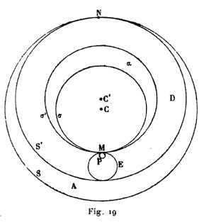
sous laquelle Bacon présente les agencements d'orbes solides proposés par Ptolémée aux Hypothèses des planètes. En premier lieu, nous savons que, dans l'Opus majus, Bacon exposait, d'après Al Fergani, la méthode qu'ont suivie la plupart des astronomes arabes pour déterminer la distance des divers corps célestes au centre du Monde. Il imagine donc les orbes des divers astres de telle manière que cette méthode demeure valable. C'est pourquoi il a soin de placer (fig.19) les deux surfaces sphériques S' et T', concentriques entre elles, qui bornent l'orbe déférent D, à une distance l'une de l'autre qui soit exactement égale au diamètre de l'astre, s'il s'agit du Soleil, et au diamètre de la sphère épicycle E, s'il s'agit de la Lune ou d'une planète. C'est pourquoi aussi cet orbe déférent, en son point N le plus éloigné du centre, est exactement tangent à la surface sphérique S, concentrique au Monde, qui borne extérieurement le ciel de l'astre, tandis qu'en son point M le plus rapproché du centre du Monde, cet orbe déférent touche la surface sphérique s qui borne intérieurement le ciel de l'astre ; l'orbe déférent est ainsi compris entre deux autres corps ; le corps extérieur A a une épaisseur nulle en un point N situé sur le rayon
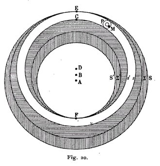
vecteur qui va du centre du Monde à l'auge de l'astre ; le corps intérieur x a une épaisseur nulle en un point M situé sur le rayon vecteur qui va du centre du Monde à l'opposé de l'auge. En second lieu, il a soin de préciser [Un fragment inédit..., p. 128. — Liber secundus communium naturalium, éd. Steele, p. 438.] que l'épicycle est « un corpuscule qui a une convexité, mais pas de concavité »; c'est donc, pour lui, une sphère pleine ; certains auteurs en feront une sphère creuse, de même épaisseur que la planète, et, dans la cavité entourée par cette couche sphérique, ils placeront une masse sphérique de substance céleste ; cette masse prendra part au mouvement de l'orbe déférent, mais point à la rotation de l'épicycle autour de son propre centre. Quel jugement Bacon va-t-il porter sur cette « imagination des modernes ? »
« II ne semble [Un fragment inédit..., p. 131. — Liber secundus communium naturalium, éd. Steele, pp 438-439.] pas que, de cette imagination résulte aucun des inconvénients susdits »,
c'est-à-dire des inconvénients objectés par Averroès au système des excentriques et des épicycles ;
« et, cependant, à l'aide de ce procédé, on parvient à sauver l'apparence comme l'enseigne Ptolémée...Mais ceux que réjouit une telle imagination, croyant avoir éclairci, par là, la possibilité des cercles et des mouvements que suppose Ptolémée, montrent quelle est leur propre ignorance de ces mouvements. »
Des objections que Bacon va, en dépit de ces mécanismes imaginés par les modernes, accumuler contre le système de Ptolémée, il en est que l'Astronomie des Hypothèses ne peut éviter, mais que ses partisans ne regardent pas comme valables. Bacon remarque [Un fragment inédit..., p. 133. - Liber secundus communium naturalium, éd. Steele, p. 440] que les deux corps entre lesquels chaque déférent est compris ont, en leurs diverses parties, une épaisseur inégale ; or, dit-il,
« les physiciens nient qu'une telle difformité puisse se rencontrer dans les corps célestes, et cela à cause de leur simplicité et de leur homogénéité ».
Il pense également
« qu'il ne convient pas de suppose un corps céleste dénué de tout mouvement qui lui soit propre ; mais c'est ce que suppose ladite hypothèse, car les orbes partiels doivent nécessairement demeurer en repos ou se mouvoir d'un même mouvement qui leur soit commun avec l'orbe tout entier ».
Depuis longtemps, ces objections avaient été faites à l'encontre des corps intermédiaires imaginés par Thàbit ben Kourrah. D'autres objections semblent prouver que Roger Bacon avait eu en mains un exposé incomplet du système proposé par les Hypothèses et suivi par Ibn al Haitam, ou bien qu'il avait mal compris cet exposé. Il objecte, en effet, 'à ce système, la complexité des mouvements de Mercure et de la Lune, alors que les Hypothèses des planètes et le Résumé d'Astronomie avaient montré quels orbes il convenait d'introduire pour rendre compte de cette complexité ; il objecte le mouvement des auges des planètes, identique à celui de la huitième sphère, alors que ce mouvement est si naturellement représenté par le mécanisme qu'a combiné Ptolémée. D'autres objections, enfin, visent certaines suppositions du système de Ptolémée, qui sont parfaitement conciliables avec les agencements d'orbes solides imaginés par les Hypothèses et par Alhazen, sans être, d'ailleurs, nécessitées par ces agencements. C'est ainsi que Bacon juge [Un fragment inédit..., p. 134. — Liber secundus communium naturalium, éd. Steele, pp. 440-441.] inadmissible les mouvements oscillatoires qu'en l'Almageste, Ptolémée impose aux épicycles des planètes ; seuls, des mouvements de rotation toujours dirigés dans le même sens lui paraissent compatibles avec les principes de la Physique. Dans ses Hypothèses des planètes, Ptolémée attribuait aux épicycles des mouvements qui eussent pu satisfaire aux exigences de Bacon ; mais il est probable que celui-ci ne lisait pas les Hypothèses des planètes ; ces Hypothèses, au Moyen Age, paraissent être demeurées inconnues des astronomes. DU moins eût-il été logique qu'il admît la théorie de l'oscillation des épicycles proposée par l'Almageste, puisqu'il reçoit avec admiration le mouvement tout semblable que le Tractatus de motu octavae spharae attribue à la sphère des étoiles fixes. Enfin, l'auteur de l'Opus tertium dresse, contre l'hypothèse de l'épicycle solide, imaginée par les modernes, une très forte objection que nul, à notre connaissance, n'avait proposée avant lui. Aristote et, à sa suite, tous les Péripatéticiens ont admis que toute planète est invariablement liée à son orbite, qu'elle y est fichée comme un clou dans une roue ; une planète n'a donc aucun mouvement propre ; elle se meut seulement kata sumbebhkoV, per accidens, entraînée par le mouvement de son orbite. De cette proposition, la Lune fournit une démonstration palpable ; entraînée dans la révolution d'un orbe concentrique à la Terre, elle doit tourner vers nous toujours le même hémisphère ; aussi la tache qui s'y dessine garde-t-elle toujours le même aspect. Cette observation, que la Lune garde toujours même figure, était une heureuse confirmation des suppositions d'Aristote ; elle contrarie singulièrement les suppositions des Hypothèses et d'Ibn al Haitain. Si la Lune est fixée dans l'orbe de son épicycle comme le chaton à la bague, la rotation de cet épicycle doit présenter successivement à la Terre toutes les parties de la Lune. Telle est la difficulté que Bacon formule en ces termes [Un fragment inédit..., pp. i3a-i33. — Liber secundus communium naturalium, éd. Steele.p. 440.] :
« II résulte de ladite imagination que ce n'est pas toujours la même partie du corps d'une planète qui est tournée vers la Terre ou, en d'autres termes, vers notre regard. Or, Aristote prouve le contraire au moyen de la Lune, dont la tache nous apparaît toujours sous la même figure... Cet inconvénient ne peut être évité, à moins que nous n'attribuions a la planète un mouvement propre autour de son centre, ce qui est contraire à ce qu'Aristote enseigne au livre Du Ciel et du Monde. »
Ainsi les, orbes solides combinés par les modernes ne font évanouir certaines des difficultés opposées par Averroès au système des épicycles et des excentriques qu'en faisant surgir de nouveaux inconvénients. Toute cette discussion va-t-elle conduire Bacon à rejeter le système de Ptolémée pour embrasser l'opinion d'Alpétragius ? Nous n'avons encore entendu que l'une des parties en cause ; il est temps d'entendre l'autre.
« Bien que ces objections semblent détruire l'Astronomie de Ptolémée [Un fragment inédit...,m, 134-137.—Liber secundus commuanium naturalium, éd. Steele, pp. 440-443-], il existe des raisons expérimentales, difficiles à réfuter, qui confirment cette Astronomie touchant la supposition des épicycles et des excentriques. L'une de ces raisons se tire de la non-uniformité des mouvements des planètes ; c'est de cette raison que Ptolémée a fait usage pour mettre en évidence l'existence des excentriques et des épicycles... Un autre argument, plus difficile à réfuter, peut être invoqué dans le même but ; un même astre errant est tantôt plus rapproché de la Terre et tantôt plus éloigné. »
Ce changement de distance d'un même astre errant à la Terre « peut être montré par diverses raisons expérimentales ». La Lune, passant au méridien, a un diamètre apparent tantôt plus grand et tantôt plus petit.
« On le voit encore par les éclipses de Lune. La Lune se trouvant à la même distance du nœud et, partant, à la même distance de l'axe du cône d'ombre de la Terre, ou même se trouvant au nœud et, partant, rencontrant l'axe même de l'ombre, demeure tantôt plus longtemps et tantôt moins longtemps dans l'ombre ; cela ne peut avoir d'autre cause que la largeur de l'ombre que la Lune doit traverser, largeur plus grande dans le premier cas que dans le second ; et comme l'ombre a la figure d'un cône dont la Terre est la base, il faut que la Lune soit plus rapprochée de la Terre lorsqu'elle traverse une ombre plus large, et plus éloignée lorsqu'elle traverse une ombre plus étroite. Mais cette raison pourrait être sauvée en invoquant le mouvement non-uniforme de la Lune, mouvement qu'Alpétragius sauve également, sans admettre ni excentrique ni épicycle ; aussi, de la grandeur variable de l'éclipsé peut-on tirer une autre raison plus difficile à éviter ; en effet, la Lune se trouvant à la même distance du nœud et, partant, de l'axe du cône d'ombre de la Terre, il arrive que la partie éclipsée du corps de la Lune est tantôt plus grande et tantôt moindre ; il semble impossible que cela se produise sinon par l'effet de la proximité plus ou moins grande de la Lune à la Terre ».
Enfin, à qui rejetterait toutes ces raisons, il en resterait encore une à proposer
« que peut soumettre à l'épreuve du témoignage de ses yeux non seulement celui qui est expert en Philosophie, mais encore celui qui est ignorant et inexpérimenté ».
Les trois planètes supérieures sont d'autant plus grandes qu'elles sont plus près d'être en opposition avec le Soleil, d'autant plus petites qu'elles sont plus près de se conjoindre à lui.
« Ce changement dans la grandeur de chacune des trois planètes est surtout apparent pour Mars... ; il l'est moins pour Jupiter... et moins encore pour Saturne ».
Cette variation du diamètre apparent ne peut s'expliquer que par une variation de la distance entre la planète et la Terre. Ces diverses raisons tirées de l'expérience et favorables au système de Ptolémée terminent la longue discussion dans laquelle Bacon a mis ce système aux prises avec l'Astronomie d'Alpétragius. Cette discussion, en effet, n'a pas de conclusion ; après avoir été minutieusement et complètement plaidée par les deux parties, la cause demeure en suspens ; aucun jugement n'est rendu. A la fin de l'Opus tertium, Bacon retrouve la même incertitude qui le faisait hésiter lorsqu'il rédigeait l'Opus minus; il ne paraît pas qu'en sa raison, cette incertitude ait jamais fait place à une pleine adhésion soit à l'Astronomie d'Alpétragius, soit à l'Astronomie de Ptolémée. Comme son maître Robert Grosse-Teste, comme son contemporain Thomas d'Aquin, Bacon est demeuré, pendant toute sa vie, suspendu entre le système de Ptolémée et le système d'Alpétragius. Aussi bien que Robert de Lincoln ou que Thomas d'Aquin, il connaît les observations par lesquelles on prouve la distance variable des astres errants à la Terre ; il sait donc que le système des sphères homocentriques est indéfendable ; et cependant, escomptant toujours quelque découverte impossible à prévoir, il ne peut se décider à repousser les hypothèses astronomiques que la Philosophie péripatéticienne regarde comme nécessaires. Il a connu les combinaisons d'orbes solides imaginées par Ptolémée ; il a vu que ces combinaisons rendaient vaines plusieurs des objections dressées par Averroès contre les excentriques et les épicycles ; mais il a reçu avec une sorte de mauvaise humeur cette « imagination des modernes » qui énervait les forces des adversaires de Ptolémée. Bacon s'était fait le hérault de la science expérimentale, de la science
« qui regarde l'argumentation [Un fragment inédit..., p. 187] comme capable de persuader la vérité, mais non de la rendre certaine ; qui, par conséquent, néglige les arguments ; qui, non seulement, recherche à l'aide des expériences les causes des conclusions, mais qui, de plus, soumet les conclusions mêmes à l'épreuve de l'expérience ».
Cette science-là, il n'avait pas hésité à déclarer qu'elle était « plus digne que toutes les autres parties de la Physique ». Et voici, cependant, que son attachement obstiné aux dogmes de la Physique péripatéticienne l'a conduit à cette monstrueuse affirmation [ROGERI BACON Communia naturalium ; lib.II: De caelestibus ; pars V, cap. XVII ; Bibl. Mazarine, ms. n° 3576, fol. 130, coll. a et b. — Ed.. Steele, p. 444.] :
« II semble qu'il vaille mieux faire les mêmes suppositions que les physiciens, dussions-nous rester en défaut lorsqu'il s'agit de résoudre quelques sophismes auxquels le sens nous mène bien plutôt que la raison. — Videtur quod melius est ponere sicut naturales, licet deficeremus a solulione sophismatum aliquorum ad quae sensus magis quam ratio ducit ».
Par cette affirmation, il donnait son adhésion à l'avis qu'émettent les adversaires du système de Ptolémée [ROGER BACON, loc. cit. ; ms.cit., fol. 130, col. a. — Ed. Steele, p. 443.] :
« Ils disent qu'il vaut mieux sauver l'ordre de la Nature et contredire au sens, car celui-ci est maintes fois en défaut, surtout par l'effet d'une grande distance ; il vaut mieux, comme ils disent, se trouver en défaut dans la solution de quoique sophisme difficile que de supposer sciemment ce qui est contraire à la Nature ; Aristote dit, en effet, que les savants sont quelquefois en défaut lorsqu'il s'agit de résoudre des subtilités de Physique. — Dicunt quod melius est salvare ordinem Naturae et sensui contradicere, qui mullotiens deficit, et praecipue ex magna distantia, atque melius est, ut dicunt, deficere in solutions alicuijus sophimatis difficilis quam scienter ponere confrarium Naturae; nam Aristoteles dicit quod sapientes aliquando deficiunt in dissolutione physicorum subrilium ».
Contre un si aveugle attachement à la Physique d'Aristote, la Logique d'Aristote proteste ; expression précisée du bon sens, elle s'accorde avec lui pour témoigner qu'aucune proposition de Philosophie ne peut prétendre à la certitude en dépit du témoignage de la perception sensible. C'est qu'en effet, l'auteur des Seconds analytiques a traité avec une pleine maîtrise de la méthode expérimentale; admirablement, il a décrit cette méthode qui raisonne à partir de principes tirés de l'expérience par l'induction, et qui soumet ses conclusions au contrôle de l'expérience, en sorte que si l'expérience est au point de départ comme au point d'arrivée, c'est par le raisonnement que ces deux termes sont reliés l'un à l'autre. Bacon a chanté les louanges de la science expérimentale ; il n'a jamais pratiqué ni, sans doute, jamais bien compris la méthode expérimentale ; la science expérimentale n'a pas été, pour lui, la science qui raisonne sur des vérités fournies par l'expérience, pour eu déduire d'autres vérités susceptibles d'être, à leur tour, observées ; elle a été la science qui inéprise le raisonnement et le remplace par l'observation (certificatio) :
« Novit [Un fragment inédit..., p. 137] enim quod argumentum persuadet de veritate, sed non certificat ; ideoque negligit argumenta ».
Le Picard Pierre de Maricourt, qui était un contemporain de Roger Bacon et que Roger Bacon admirait fort, a très exactement connu la méthode expérimentale ; dans la première partie de sa Lettre sur l'aimant, il en a donné un modèle digne d'être à jamais admiré. Aussi croyons-nous volontiers Bacon lorsqu'il nous dit [ROGERI BACONIS Opus tertium, cap. XIII ; éd. Brewer, p. 43.] que, des Latins ses contemporains, Maître Pierre est le seul qui comprenne les principes de l'étude expérimentale de l'arc-en-ciel. Thierry de Freiberg, qui a vécu peu après Bacon, a non moins bien pratiqué cette méthode ; son Traité de l'arc-en-ciel témoigne de l'habileté avec laquelle il savait on user. Ce qu'ont su Pierre de Maricourt et Thierry de Freiberg, Bacon l'a ignoré. L'expérience n'a pas été, pour lui, un moyen de démontrer des vérités, mais bien un procédé propre à manifester des faits. Il lui a demandé de découvrir des faits utiles, d'enrichir l'homme et de prolonger la vie, et c'est pourquoi il a mis l'Alchimie et la Médecine dans la dépendance de la Science expérimentale [Un fragment inédit..., pp. 148-149]. Il lui a demandé, surtout, d'inventer des faits surprenants, d'accroître de merveilles nouvelles le trésor de l'Alchimie et de la Magie naturelle [Un fragment inédit..., pp. 140-156. — Cf. ROGERI BACONIS Opus tertium, cap. XIII ; éd. Brewer, pp. 43-47.]. C'est par la production de ces effets propres à étonner que la Science expérimentale surpasse les autres sciences ; c'est parce qu'elle est seule en état de les manifester que les autres sciences, tenues de lui en fournir les moyens, sont comme ses servantes :
« En tant que cette Science commande aux autres sciences, elle peut faire des choses admirables ; car toutes les sciences lui sont; soumises, comme l'art du forgeron est soumis à l'art militaire et l'art du charpentier à l'art naval. Aussi cette Science commande-t-elle aux autres de lui faire des ouvrages et des instruments dont elle puisse user en maîtresse. — Unde haec Scientia imperat aliis, ut faciant ea opera et instrumenta quibus haec utatur ut dominatrix. C'est ainsi qu'elle ordonne à la Géométrie de lui tracer la figure d'un miroir ovale ou annulaire ou voisin de ces formes, de telle sorte que toutes les lignes venant d'un corps sphérique à la surface concave du miroir y forment des angles d'incidence égaux. Mais le géomètre ignore à quoi peut être bon un miroir de cette sorte, et il ne sait pas s'en servir. L'expérimentateur, lui, sait, à l'aide de ce miroir, brûler tout corps combustible, liquéfier tout métal, calciner toute pierre ; il sait détruire toute armée ou toute forteresse qu'il lui plaira de détraire, non seulement de près, mais à la distance qu'il voudra. La Science expérimentale prescrit au géomètre de faire d'autres choses plus admirables encore que celle-là...Elle prescrit de même à l'astronome de choisir les constellations bien déterminées que réclame l'expérimentateur ; et celui-ci, sous ces constellations, fabrique des œuvres, compose des nourritures et des médecines à l'aide desquelles il peut altérer toute personne, l'exciter à faire tout ce qu'il veut, sans en pouvoir, toutefois, contraindre le libre arbitre. Ainsi c'est cette Science qui fait toutes ces choses, à titre principal et en dominatrice ; l'Astronomie en est la servante en ce cas, comme elle est la servante de la Médecine lorsqu'il s'agit de choisir les temps propres aux saignées et aux médecines laxatives, ainsi qu'en une foule de circonstances...La Science expérimentale commande de même à toutes les sciences ouvrières, afin qu'elles lui obéissent, qu'elles lui préparent ce qu'elle veut, les moyens dont elle use pour produire les admirables effets de la nature et de l'art sublime. Similiter imperat omnibus aliis scientiis operativis, ut ei obediant, et praeparent quae vult, quibus utitur in admirandis effectïbus naturae et artia sublimis. »
Celui qui a écrit ces lignes a pu chanter les louanges de la science expérimentale ; il n'a jamais compris ce que c'est que la méthode expérimentale. Dès lors, ne nous étonnons plus que, dans le grand débat entre la Physique d'Aristote et l'Astronomie de Ptolémée, Bacon n'ait pas su délaisser sans merci le parti que l'observation condamnait ; qu'il ait mieux aimé contredire au témoignage des sens que bouleverser l'ordre imposé par le Péripatétisme à la Nature ; que le démenti formel de l'expérience ne lui ait pas semblé, pour une théorie physique, marque assurée de fausseté.